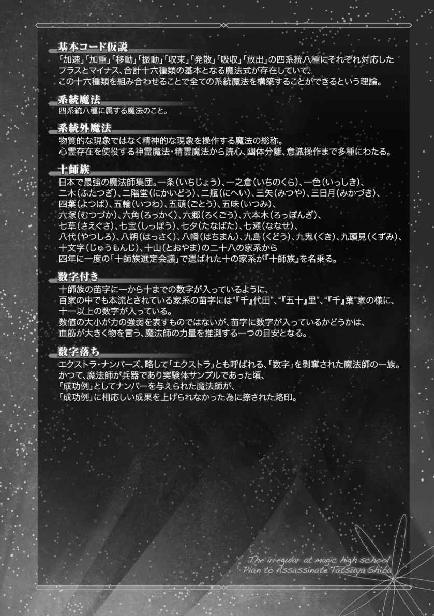

| 魔法科高校の劣等生 司波達也暗殺計画(1) (電撃文庫) | |
| 佐島 勤 | |
| 株式会社ＫＡＤＯＫＡＷＡ (2018) | |
本作品を示すサムネイルなどのイメージ画像は、再ダウンロード時に予告なく変更される場合があります。
本作品は縦書きでレイアウトされています。
また、ご覧になるリーディングシステムにより、表示の差が認められることがあります。

［１］
店の照明、明滅する看板、街灯の光が、夜空から降りる闇を押し返す。
不夜城。
そう呼ばれる繁華街にも、陰はある。
完全な暗闇ではないが、明るくもない。
誰ぞ、彼は。
歓楽に浪費される人工の光。その裏で続く黄昏の薄明。
逢魔が時が続く異界。
奇跡も特別な儀式も必要無く、ただ歩いて行けばたどり着く異世界。
法が支配する世界とは異なる、無法の空間。
暴力というルールが支配する大都会の陰を、今夜もそれに相応しい獣が闊歩する。
◇ ◇ ◇
「Ｎｕｔｓ ｔｏ ｙｏｕ！」
薄暗い裏路地に倒れた青年を見下ろして、少女が嘲るような口調で短い英語のセンテンスを浴びせる。
普通「馬鹿を言え」とか「ふざけるな」と訳されるフレーズだが、古い用法で「くたばっちまえ」という意味もある。
まあ「Ｇｏ ｔｏ ｈｅｌｌ」の方がこういう場合は適切だと思われるが、少女は「Ｎｕｔｓ ｔｏ ｙｏｕ！」を一種の決めゼリフとしていた。
流暢とは言い難いカタカナ発音。
しかし少女の英語力はともかくとして、倒れた青年はその言葉のとおり明らかな致命傷を負っていた。
切り裂かれた青年の喉から、大量の血液があふれ出している。
少女の手には、血が滴るナイフ。
しかし、もしこの場面だけを目撃した者がいたならば、きっとこう思っただろう。
──本当にこの少女が殺したのか？
死体になった青年の身長は、確実に百八十センチを超えている。筋肉の量も、それに相応しいだけはついているように見える。
一方、少女の背丈はせいぜい百五十センチ前後。ジーンズに包まれた脚は細い。革ジャンに隠れた腕も、狭い肩幅から判断してきっと華奢だろう。凶器を持っているとはいえ、自分より遥かに大柄な青年を害することができるようには思われない。
しかし、この場に立っているのは少女一人。
彼女は気の強さをうかがわせる瞳を死体に向けたまま、ナイフを軽く一振りする。
特殊な加工が為された刀身なのか、血はあっさり落ちた。
少女はナイフを折り畳んでジーンズの右ポケットにねじ込み、死体に背を向けた。
彼女はそのまま、足早に歩き出した。
車止めで塞いである歩行者専用の路地から、二車線道路へ。
ここも交通管制システムの有効範囲内なのだが、違法改造で管制システムをオフにした四輪車が路肩にずらりと駐停車している。
夜のこの街は一種の無法地帯だ。駐車違反程度では、警察も勤労意欲を発揮しない。その代わり警官が気紛れを発揮しても、レッカー移動に文句を言う無謀な若者もいない。お互いにやり過ぎないことで、大都会の光と陰は共存していた。
少女は車の列を一度見渡しただけで、迷わずグレーのボックスワゴンに歩み寄り、そのまま助手席のドアを開けて車内に乗り込んだ。
「お疲れ様でした、ナッツ。首尾はどうです？」
ドアが閉まると同時に、運転席に座る、外見から判断して三十代と思われる男が少女に話し掛ける。
「メインディッシュが出てこなかったぞ」
ナッツと呼ばれた少女が、その愛らしい外見に反する柄が悪い少年のような口調で文句を付けた。
「リーダーの少年は店に入りました」
運転席の男はそう前置きして、あるクラブの店名を告げる。
「少年って歳かよ」
少女の返事は嚙み合っていないものだったが、男からもたらされた情報はきちんと耳に入れていた。
「店に金属探知機、あるんだろ？」
そう言いながら少女は、折り畳んだナイフを男に差し出す。
「ええ」
男は折り畳みナイフを受け取り、代わりにバレッタとセットになった簪を少女に差し出した。
簪の端には扇形の飾りがついていて、そこから更に小さな扇を連ねた飾り紐がぶら下がっている。
「金属探知機に反応しない樹脂製の簪です。飾りの紐を引き抜くと、外の樹脂が剝がれて刃渡り十センチのブレードが露出します」
「たった十センチ？」
「プッシュダガーと考えれば良いのでは？」
「身幅が足らねえだろ」
「ナッツなら使いこなせますよ。あっ、紐を抜いてから十分で分解が始まりますのでお気を付けて」
男の無責任な言葉に、ナッツと呼ばれた少女は顔を顰めた。
しかし、簪を男に突き返しはしない。
「......使い物にならなきゃ、素手でやるだけか」
顰め面のままヘアバンドを外し、一本に編まれた髪をいったん解いてから器用に纏め、バレッタで押さえて簪を挿す。
運転席からすかさず差し出された手鏡をのぞき込み、何度か鏡の角度を変えて、少女は「似合ってねえ......」とため息を吐いた。
「どうぞ」
男が今回差し出したのは、ポーチに入ったメイク道具だ。
「あのチュニックなんか、雰囲気的にちょうど良いと思いますよ」
そうしてワゴンの後部座席を指さす。
後ろのシートはフラットに倒され、天井から十着以上の服がぶら下がっていた。全てが女性物、少女の為の衣装に違いない。
「柄じゃないっての......」
少女が気乗りのしない様子でぼやく。
それでも、潜入の為には外見を整える必要があると理解しているのだろう。
彼女はシートを回転させて後ろを向き、革ジャンを脱いで花柄のチュニックを手に取った。
◇ ◇ ◇
良くある若者向けのナイトクラブ。
その通用口から人気の無い細い路地へ、二人の男女が出てきた。
一人は逆三角形のシルエットを持つ長身の若者。
もう一人は簪を挿した小柄な少女──ナッツだ。
若者は足元がふらついている。酔っ払っているのか、あるいは薬物が効いているのか。
それでも、あるいは、だからこそ獣欲に突き動かされた手は少女を強く拘束して離さない。
少女の背中に回されていた右腕が、小柄な肢体を強く引き寄せる。
向かい合わせに抱き合った状態で腰から下に手を伸ばすが、身長差がありすぎる所為で届かない。青年は苛立たしげに右手を這い上らせて少女の胸を摑んだ。
「痛っ......。乱暴にしないで......」
少女の口から漏れる、甘やかな懇願。
加虐心を刺激された青年が、左手で少女の頭を抱え込むようにして強引に引き寄せる。
「待って......！ お願い、待って！」
「何だよ」
強引に唇を奪おうとしていた青年が、不機嫌を丸出しにした声で少女を責めた。
「髪が......」
眉間にしわを寄せて、少女が痛みを訴える。
青年は舌打ちして少女の頭から手を離した。
少女が両手を挙げて後ろに回し、簪とバレッタを外す。
真っ直ぐな長い髪が黒い滝となって流れ落ちた。
青年が好色そうに眼を細める。髪を下ろしたことで外見年齢が二、三歳下がった感じだが、その方が青年の好みであるようだ。
解かれた髪から花の香りが広がった。
青年の酔いが、ますます深いものになる。
今度は少女が、青年の首に両腕を回した。
だが背伸びしてもまだ、頭一つ分以上の差がある。
青年が少女の腰に回した右腕で抱え上げるようにして、強引に顔を近づけた。
少女がじらすように顔を逸らして唇を逃がす。
青年は少女の顎を左手で摑んで強引に正面を向かせた。
少女が艶然と微笑む。
青年の首に巻き付けていた右腕を解き、
簪の飾り紐を引き抜いて、
露出したブレードを、一気に青年の首に突き込んだ！
腕の力しか使えない不安定な体勢だ。
余程エッジが鋭いのか、それとも少女の腕力が破格なのか。
ブレードは深々と青年の首に埋まった。
青年が悲鳴を上げて少女の身体を突き飛ばす。
それは、反射的な行動だったに違いない。
だがその勢いで、少女の握る細いブレードが首の動脈を切り裂いた。
少女が後ろ向きにステップを踏んで青年から離れる。
簪に仕込まれていたブレードが青年の首から抜け、噴き出す血の勢いが増す。
少女はチュニックの左袖で自分の唇をごしごしと拭った。
キスは寸前で逃れていたが、気分的なものだろう。
意外にすれていないのかもしれない。
──純情な殺し屋というものが、存在するとするならば。
青年が前のめりに倒れる。
「Ｎｕｔｓ ｔｏ ｙｏｕ！（くたばっちまえ）」
憎々しげに吐き捨てる言葉は、少女にとって、仕事の完了を告げる自分への合図なのか。
少女は簪を投げ捨て、この場を去るべく踵を返す。
しかし少女は、足を踏み出しかけて硬直した。
路地の入り口に立つ少年と目が合って。
（見られた!?）
少年は随分と大人びた顔立ちをしていたが、体付きから見て高校生、もしかしたら中学生かもしれないと少女は判断した。
しかし、それにしては。
殺人の現場に向ける少年の目が、冷静すぎた。
落ち着いているというより、冷たい。
驚きや恐怖だけでなく、一切の感情が窺われない、ガラス玉のような、否、鋼のような瞳。
少年が視線を外した。
惨状から顔を背けたのではなく、単に興味を失って通り過ぎる、そんな仕草だ。
その印象どおりに、少年は歩き始めた。
その姿が建物の陰に消える。
ここに至りようやく、少女の硬直が解けた。
「ま、待て！」
目撃者を放置できない。
そんな当たり前の焦りに駆り立てられて、少女が走り出す。
こんなシチュエーションで、待てと言われて待つ奴はいない。
むしろ追いかけられていると察して、逃げ足を速めるに違いない。
その思いが、少女をますます焦らせる。
少年が通り過ぎた道は、まだ人通りが少ない裏道だ。
だが表通りまで大して距離があるわけではない。
焦慮が少女を加速する。
路地を出て、少年が歩いて行った方に顔を向ける。
少女の予想に反して、少年はすぐに見つかった。
裏道を普通の足取りで歩いている。
走ってはいないし、それなりのスピードだが急ぎ足という感じでもない。
その態度に少女は違和感を覚えたが、少年の素性を詮索しようという気は起きなかった。
どうせすぐに別れる相手だ。──永遠に。
得物の持ち合わせはない。だが少女に、武器を調達する為に少年から目を離すという選択肢は無かった。
少女は女性としても小柄で、服の上から判断する限り手足も細い。
それに対して相手の少年は、まだ大人の体型にはなりきっていないとはいえ、少女よりも背が高く、体重も明らかに勝っている。身のこなしにも鈍重さは全く無い。
それでも少女には、少年を素手で仕留める自信があった。──彼女は、見た目どおりの非力な少女ではないからだ。
少女は少年との距離を一定に保ちながら、自分の内側に意識を向けた。
心象世界の水底に沈む扉。
水の中に手を伸ばし、ノブを摑んで捻り、引っ張る。
それなりの抵抗を示して、扉が開く。
扉の向こう側から湧き出した水が、少女の心象世界を満たした。
無意識領域から流れ出す情報が少女の能力値を書き換え、身体を力で満たした。
──この二十一世紀は、魔法が迷信から科学へ発展を遂げた世紀だった。
魔法の科学的研究は、超能力と呼ばれた異能の分析に始まる。
魔法が技術として確立する過程で、超能力のシステムは解明された。
物理世界の全ての事象は情報を残す。
記録媒体は、想子と名付けられた非実体粒子。
想子は、物質を構成する粒子、物理的エネルギーを媒介する粒子、如何なる素粒子とも複合粒子ともそれ単体では相互作用を見せない。だが想子が組織的な構造を形成すると、組織化された人のニューロン細胞体に規則的な電位変化を生じさせる。
それは生きた人間の大脳皮質ばかりに見られる現象ではなく、化学的に合成した神経細胞体、さらには結晶化加工を施した神経細胞体の集合によっても観測された。
この観測結果により、物理現象と想子構造体の間には厳密な対応関係があると判明した。
類似した物質には、類似した構造体を。
類似した現象には、類似した構造体を。
物質や現象の類似性が高ければ高い程、想子構造体の類似性も高い。
物質やエネルギーそのもの、その作用によって引き起こされる現象の種類、その変化──事象に応じて形成される想子の構造体は、『想子情報体』と名付けられた。
通常は、事象の変化に伴って、想子情報体が形成される。
想子情報体は変化するのではなく、瞬間瞬間で新規に構築され、時間流の中に積み上がっていく。
しかし異能──超能力が超常現象を起こす際には、想子情報体の形成が先行して観測された。
非実体粒子の構造体が、物理現象をねじ曲げた。
即ち、情報が事象を書き換えたのだ。
現代の魔法は、この発見を基礎としている。
それは魔法の基礎原理であり、超能力の基礎原理でもある。
少女は自分の意識の奥底、更にその向こう側、無意識からもたらされた情報により、自分自身の肉体を、体組織構造はそのままに機能だけを強化した。
身体強化の異能。フィジカルブーストの超能力。
少女はこの異能の持ち主、超能力者だ。彼女の身体強化は身体の強度を上げるのではなく、運動能力を引き上げるもの。銃弾を跳ね返すとか高層ビルの屋上から飛び降りても死なないとか、その手の超人に化ける能力ではなく、運動能力と知覚能力を引き上げる超常能力。それも、銃弾よりも速く動いたり鉄骨をへし曲げたりといった、派手なレベルには達していない。
それでも、熊やゴリラを力比べでねじ伏せ、虎やライオンを銃火器・弓矢・その他飛び道具無しで仕留めるくらいのパワーとスピードはある。──実際にやってみたことはないが。
この能力が、得物無しでも殺れると判断した根拠だった。
彼女は単なる力自慢、スピード自慢ではない。引き上げられた身体能力に振り回されない技術を身につけている。
それは、自惚れではないはずだった。
「ッ！ なん......だと!?」
だが背後から少年に襲い掛かった少女は、次の瞬間、舗装された道路に叩き付けられていた。
冷たい瞳で少年が少女を見下ろす。
鋼のような、その眼差し。少女には、そこから一切の感情を読み取ることができなかった。
痛みを堪えて、少女が立ち上がる。彼女は苦痛に慣れていた。痛いからといって寝転んでいては、二度と痛みを感じることができなくなる。神経が麻痺するのではなく、死ぬという意味だ。彼女は「抗わなければ命を落とす」世界に生きている。
少女が中腰で後退しながら立ち上がる様を、少年は無表情に見ていた。
少年に、攻撃の意思はないようだ。
少女は「駄目だ......」と心の中で呟いた。自分の誤算を、認めざるを得なかった。
無造作に立っている少年に、付け入る隙を見出せない。
何をされたか分からない。
何をされるか分からない。
ただ攻撃を仕掛けた自分が、路上に這いつくばるイメージだけが思い描かれる。
少女にはパワーやスピードはあっても、鋭い牙も爪も無い。コンクリートブロックを砕く拳も無い。
──素手で勝てる相手じゃなかった。
逃げるべきだ、と少女の生存本能は喚いている。
目撃者の口は封じなければならないと、少女の保身意識が抵抗する。
少女は自縄自縛に陥った。
せめてさっきの簪があれば。そう後悔しても、既に投げ捨ててしまった後だ。そうでなくても相棒の言葉が正しければ──間違っていたことなど無いが──そろそろ分解が始まっている。得物としては、使い物にならない。
引くに引けず、攻めるに攻められず、少女は口惜しげに少年を睨む。
膠着は、長く続かなかった。
少年の意識も、少女を放置できないという方向に傾いたようだ。少年が少女へ、無造作に足を踏み出す。
その時、状況が急激に動いた。
小さなモーター音と共に、グレーのボックスワゴンが突っ込んでくる。
自分をひき殺そうとするワゴン車を、少年は軽やかに跳んで躱した。足に力を込めたようには見えなかったのに、少年の身体は十メートル近くを跳躍し──少女から離れていた。
ボックスワゴンが、タイヤを軋らせて急停車する。
「ナッツ！ 乗ってください！」
少女は返事をする暇も惜しんで、自動でドアが開いた助手席に飛び込んだ。
少女を乗せたワゴン車が急発進する。
少年は、遠ざかるグレーの車体に手出ししなかった。
◇ ◇ ◇
ワゴン車の助手席で、少女は大きく息を吐き出した。シートに預けた背中には、じっとりと冷や汗が浮かんでいる。
少女が少年と睨み合っていた時間は、一分にも満たない。
少年に仕事の現場を見られたと気が付いてから勘定しても、五分は経っていないだろう。
その短い時間で、少女はそれに先立つ三時間──少女がナイトクラブでターゲットに接触してから仕留めるまでに掛かった時間──に倍する疲労を覚えていた。
「ナッツ、さっきの少年は何です？」
運転席の男が自動ではなく自らワゴン車を運転しながら少女に問い掛ける。
「現場を見られた」
「仕留め損なったんですか!?」
男の声は、純粋な驚愕に満ちていた。彼は少女の技術も異能も良く知っている。
コンビを組んで四年目。その間に少女が手に掛けた獲物は五十人を超える。その中には、殺し屋同士の命の遣り取りも含まれていた。そして失敗は、片手の指に収まっている。それだって仕掛ける機会が得られなかったというだけで、殺しそのものを失敗したわけでも証拠を残したわけでもない。実績から言っても能力から言っても、少女は組織有数の凄腕だ。
その彼女が口封じに失敗したという。しかも精々高校生、下手をすれば中学生の少年相手に。男にしてみれば、驚かずにはいられない話だった。
「......もしかして、魔法師だったんですか？」
一つの可能性を思いついて、男が問いを重ねる。
この世界には、魔法がある。今世紀、魔法の存在は明らかなものとなった。誰でも使える日常的な技術になったとは言えないが、軍や警察、それに男たちが属する裏社会では貴重な武器として使用されている。
銃を持てば小学生でも屈強な大男を撃ち殺せるように、魔法を使える者──魔法師であれば、中学生がプロの殺し屋を撃退してもおかしくない。
「分からん」
少女が不機嫌そうに吐き捨てた。彼女も最初の反撃を受けた時から、その可能性を考えていた。だが彼女には、少年が魔法師かどうか、あるいは自分と同じサイキックかどうかさえ見極められなかったのだ。
少女はそんな自分が情けなく、また、腹立たしかった。
「クロコ。ヤツの素性を調べられるか？」
少女が男に問う。「クロコ」というのは男のコードネームだ。男の本名は「鰐塚」。鰐＝クロコダイルを略して「クロコ」。これに歌舞伎の介添役から転じて裏方を意味するようになった「黒子」（正しくは黒衣）を引っ掛けている。
「顔はドライブレコーダーに記録されているはずですから、表面的なことなら......」
プライバシー保護の為、ドライブレコーダーの映像には自動的にマスクが掛かるよう法律で定められている。だがレコーダーをネットワークから遮断すれば、マスクを外す違法改造はそれ程難しくない。
「何処の誰かだけで良い。調べてくれ」
「殺すのですか？」
「口封じしないわけにはいかないだろ。社長だってそう言うはずだ」
「......分かりました」
男にも、少年を放っておくことはできないと分かっている。それでも躊躇してしまったのは一般人を犠牲にする罪悪感に襲われたのではなく、少年に不気味な印象を覚えたからだ。
本当に、目撃者を消すという単純な行動原理で仕掛けて良い相手なのか。
少女は組織の殺し屋で、男はその支援要員。せめて組織のトップである「社長」の判断を仰ぐべきではないのか。
しかしそれは同時に、仕事上の重大な失態を自白することにもなる。
殺し屋の組織に身分保障は無い。身分どころか、命すら保障されていない。仕事を目撃されたという理由で、トカゲの尻尾切りに遭うかもしれないのだ。その場合、自分と少女は一蓮托生。
その可能性は決して小さくない。
まずは少年の素性を調べてからだ。危険な背景が分かれば、その時、組織に相談すれば良い。
男は逃避気味にそう考えた。
◇ ◇ ◇
少年はボックスワゴンが見えなくなってすぐに、少女に対する興味を失った。
彼は都内の私立中学校に通う身だが、ただの中学生ではない。ある意味で、殺し屋の少女の同類だった。
足早に、歩みを再開する。先程よりもペースが上がっているのは、少女に絡まれて無駄にした時間を取り戻す為か。
少年は足を緩めることなく、入り組んだ道を何度も曲がり進む。その足取りに迷いは見られない。
やがて彼は、古ぼけたビルの裏口の前で足を止めた。
鉄製らしき扉は灰色一色に塗装されているだけで、何の情報も表示されていない。扉だけでなく、少年が立っている側からは何のビルかさえ分からない。ただ、人が出入りしている痕跡はある。本当にビルの関係者だけが使う通用口なのだろう。
扉の鍵は自動ロック式の電子錠だった。ただ扉自体は昔ながらの手で開閉するタイプで、錠前もドア枠にデッドボルト（閂）を差し込んで前後に動かなくする構造だ。
扉に近づいた少年が、ここで奇妙な動作を見せた。
右手の人差し指を伸ばし、扉とドア枠の境目に沿って動かしたのだ。
ちょうど、錠前の辺り。
扉にもドア枠にも触れてはいないし、右手に何の道具も持っていない。黒い手袋に包まれた指先から何かが飛び出しているというわけでもない。
何の意味も無いように見える行為。
だが少年がノブを引くと、自動的にロックされているはずの扉はあっさり開いた。
裏口の奥は薄暗い階段。
少年は躊躇うことなく地下に向かった。
少年は五分足らずで、再び通用口に姿を見せた。
少年の外見は、地下室に降りる前と変わっていない。傷一つ無いし、服装にも乱れはない。
彼は落ち着いた足取りで裏通りを通り抜け「表」に出た。
夜を知らない繁華街、不夜城。
無法が支配する異界ではなく、猥雑でありながらも法秩序が支配するこちら側の世界。
人の流れに潜り込んで表通りの歩道を行く少年の横に、コンパクトな白いセダンが停まる。
ありふれた色、ありふれたデザインの、闇に紛れない代わりに街に紛れる小型車に、少年は慌てず、もたつかず乗り込んだ。
「特尉、いえ、今日は達也くんと呼ぶべきだったわね。首尾はどう？」
「スパイは全員消しました。新ソ連エージェントのデータは破棄されていましたが、ストレージは回収してあります。ちょうど良いので復元をお願いできますか？」
「了解よ」
運転席から伸びた手に、少年がカセットに収まった内蔵式の電子データ記憶装置を渡す。
「しかし、何故藤林少尉が？」
少年が運転席の若い女性に問い掛ける。今日の仕事は本家の指図によるものだ。軍の非合法任務ではない。軍人である彼女が迎えに来るのは、予定外だった。
「真田大尉に言われて。本当は自分で来たかったのでしょうけど、あいにくと手が空かなかったみたい」
セダンを発進させながら、私服の女性士官が答える。彼女は「仕方がない人よね」と言わんばかりの微苦笑を浮かべていた。
この女性士官の名は、少年が呼んでいたとおり『藤林』という。階級は少尉。所属は国防陸軍第一〇一旅団独立魔装大隊。彼女が会話の中で口にした『真田大尉』は同じ独立魔装大隊の技術士官だ。
藤林の言葉に、少年は「なる程」と納得の表情を浮かべた。
「トライデントは問題無く機能しました」
「それは、ＣＡＤも起動式自体も設計どおりに働いたという理解で良いのかしら？」
「はい」
少年が頷く。
ＣＡＤ──術式補助演算機（Casting Assistant Device）。魔法の発動を補助するハードウェア。
起動式は魔法を電子的に記録したソフトウェア。
ＣＡＤは起動式を魔法師が利用できる形態に変換して出力する。魔法師は変換された起動式を読み込んで、それを基に魔法式──魔法の本体を組立てる。
少年は魔法を行使する技能の持ち主＝魔法技能師、「魔法師」だった。
トライデントは民間企業が開発した最新のＣＡＤを、独立魔装大隊の技術士官である真田大尉が更に改造した少年専用のＣＡＤの名称であり、このＣＡＤを使って彼だけが行使できる魔法の名称でもある。
「そう。大尉、喜ぶでしょうね」
そう口にした女性士官も、満更ではなさそうだった。
白のセダンが交通管制システムに従い、車の流れの一部になる。少年を乗せた小型車は、そのまま夜の渋谷から走り去った。
西暦二〇九四年四月七日、水曜日の夜。
渋谷の繁華街で連続殺人事件が勃発した。
被害者の青年は渋谷一帯で活動しているストリートギャングの一員で、暴力団の手先となって違法薬物の売買に手を染めていたと見られている。
事件の目撃情報はない。被害者の一人が、事件の直前小柄な女子中学生と一緒だったという証言はあったが、中学生や高校生はストリートギャングにとって麻薬売買の顧客だ。殺人との関連性は薄いと無視された。
警察は事件をストリートギャング同士の抗争、あるいは敵対する暴力団組織による見せしめと判断し、専任の捜査チームを設置した。若者同士の暴力沙汰は日常茶飯事の繁華街でも、連続殺人となれば無視できないという判断だ。
同じ夜、大亜連合からの亡命者の内、渋谷界隈で活動していた十人近くが纏めて姿を消した。彼らは最近、新ソ連のエージェントと接触していた容疑で公安からマークを受けていたグループだったが、失踪を届け出る者がいなかった為、警察の扱う事件にはならなかった。
［２］
伝説でも御伽噺でもなく、確実に実在するものとして魔法が最初に確認されたのは西暦一九九九年のことだった。
その年、人類滅亡の預言──と勝手に解釈した古書の記述──を現実のものにしようとした狂信者集団による核兵器テロを特殊な能力を持った警察官が阻止した。この事件が、近代以降で最初に魔法が確認された事例とされている。
しかしそれは、最初から「魔法」と呼ばれていたわけではない。当初、その特殊能力は「超能力」と呼ばれていた。狂信者のテロを阻止した警官は杖も護符も魔導書も持っていなかったし、呪文も魔法陣も知らなかった。彼はただ強く念じるだけで、臨界に達した核分裂反応を止めた。
核兵器を無力化する異能＝超能力。核の抑止力に頼っていた大国は最初、その能力を恐れた。しかしすぐに、利用することを考えた。その能力を独占できれば、敵国からの報復を恐れずに核兵器を使用できる。「持っているだけで使えない兵器」が「実際に使用できる兵器」に変わる。
アメリカ、当時のＵＳＡ政府は世界中に捜索のエージェントを派遣した。核を無効化する超能力者を集め、また、敵の手に渡さぬ為に。
残念ながら、警官と同じ超能力の持ち主は見つからなかった。だが捜索の過程で予想した以上に多数の超能力者が発見された。その多くは微弱な能力しか持っていなかったが、精神の力で物理現象に干渉する力は突然変異ではなく人間が持つ才能だと判明した。
ほとんどの人間はそれが顕在化するレベルに到達していないだけ。調査を担当した当時の研究機関は、そう結論付けた。
力が弱ければ、強化すれば良い。潜在しているなら、無理矢理にでも引き出せば良い。人類の潜在能力開発の名の下に、多くの人体実験が行われた。物理的、化学的刺激を用いる実験と並行して、オカルト的な手段も動員された。
その過程で、魔法は歴史の表舞台に登場した。
フィクションの産物と信じられていた魔法が、軍事技術開発に取り込まれることでリアルな技術となった。
伝説の闇から抜け出し日の光の下に姿を見せた「魔法使い」の技術を科学的に分析した結果、超能力と魔法は本質的に同じ力であることが判明した。歴史の陰に隠されてきたノウハウを分析し、改良し、活用することで、超能力はより汎用的な技術に発展を遂げた。
超能力者は、ごく限られた物理現象に干渉することができるだけだ。
だが新たに開発された技術は、一定水準以上の才能を必要とはするものの、一人で多種多様な事象改変を可能とする。核兵器を無効化する異能すらも、一つの技術として確立された。
この汎用化された、精神的能力により物理現象に干渉する技術を今では、作り話と信じられていた古い技術と合わせて魔法と総称する。
魔法の研究はその初期段階から、アメリカだけでなく世界中で行われた。世界中にエージェントを派遣したことが、情報の拡散を招いたのだ。
各国の政府は魔法という名の技術を使いこなせる人材、『魔法技能師』、略して『魔法師』の育成に力を注いだ。『超能力者』の多くは、『魔法』を身につけ『魔法師』になった。
二十一世紀末現在、魔法師は国家にとって重要な戦力であり──貴重な兵器となった。
しかし、全ての異能者が国家によって管理されているわけではない。
全ての超能力者が、魔法師に成れたわけではなかった。
◇ ◇ ◇
朝の住宅地を制服姿の少年少女が同じ方向に歩いていく。昔から変わらない通学風景だ。通勤は在宅勤務やサテライト・オフィス、フレックスタイムが普及した御蔭で「通勤ラッシュ」が過去のものとなっていたが、登校時間は今でも朝の八時前後に集中している。
もっとも半世紀前とは電車の形態が変わってしまっているので、「ギュウギュウ詰めの満員電車」は姿を消している。それに、この点は昔から変わっていないのだが、一般的な公立小中学校で電車・バス通学が必要になることはない。
東京郊外に位置するこの中学校は私立校だが、最寄り駅から少し離れている為、朝の登校風景は公立中学校と余り変わらない。
同じ制服で同じ年頃。
しかし容貌や体格は、一人一人違う。
目立つ生徒と目立たない生徒がいるのも、表面的には他校と同じだろう。
ただこの学校には他の追随を許さぬ「頂点」が存在する。その点が少し特殊かもしれない。
美しい女子生徒が、その容姿に相応しい淑やかな足取りで通学路を進む。
同じ道を歩む生徒たちは、少年も少女も一瞬立ち止まり、すぐに、つかず離れずの距離で彼女に付き従う。
毎朝のことであっても、それは変わらない。
──美人は三日で飽きるなんて、絶対に噓だ。
この中学校の生徒は皆、そう思っているに違いない。実際、多くの生徒が一度は似たようなことを口にする。
彼らはまだ未成熟な心に、一つの真理を刻み込んでいる。
世の中には、決して慣れることのない美が存在する。
本物の美は、憧れや情欲よりも先に、衝撃をもたらす。
司波深雪という名の美少女を目にした時、それを覚らずにいられる者は希だ。
（何だよ、あれ......）
周りの少女たちと同じセーラー服で変装した偽中学生の少女も、例外ではなかった。
決して目立ってはならない身でありながら、彼女は思わず立ち竦んだ。少女にとって幸運だったのは、それが決して珍しい姿ではなかったことだ。
彼女は慌てて、止まっていた足を動かした。目立たないように目を左右に動かし、注目を浴びていないと確認して安堵の息を吐く。
（......あれって、あたしと同じ人間か？ あんな生き物がこの世に実在したのか？）
歩みを再開しても、衝撃からはまだ抜け出せていない。
彼女は美しすぎる少女をチラリと盗み見て、思わず頭を振ってしまう。
どう見ても、この世の生き物ではない。天女とか女神とか美の化生とか、そういう空想上の存在ではないかという疑いが拭えない。自分の目が、自分の頭がおかしくなったのではないかという疑念に囚われそうになる。
（......って、そうじゃないだろ！）
彼女は心の中で自分を りつけて、視線を無理矢理、美少女の隣に向けた。
りつけて、視線を無理矢理、美少女の隣に向けた。
美しすぎる少女の隣には、一人の男子生徒が影のように付き従っていた。
大人びた容貌と、まだまだ未成熟ながら良く鍛えられた身体。
だが、不思議と目立たない。不自然なまでに気配が薄い。
隠れているわけでもないのに、殺し屋を生業にしている少女でさえも、気を抜くと見失ってしまいそうだ。
（隠形、か......？）
気配を隠す技は、少女にも覚えがある。三年前までは自分の知らないうちに叩き込まれ、三年前からは意識して鍛えてきた技術だ。
（......参ったな。あたしより上っぽいぞ）
覚えがあるから余計にはっきりと、少年の技量が理解できた。
（腕っ節が強いだけじゃないのか......）
徒手格闘だけなら、玄人よりも強い素人は珍しくない。素人は目の前の相手に勝つことだけを考えて鍛錬すれば良いが、玄人にとっては状況を作り上げ、そこから無事逃げ果せる技術の方がむしろ重要だ。
しかしあの少年は、単に腕っ節が強いだけではないらしい。
少女の中で、警戒感の水位が上がる。
（名前は確か、司波達也）
少女は記憶の中から少年に関する情報を引っ張り出した。
彼女のサポート要員は決して無能ではない。それなのに、少年に関して判明した事柄は余りにも少なかった。
氏名。自宅の住所。通っている中学校。
それだけだ。
調査の時間が足りなかったという事情は、間違いなくあった。
彼女の相棒が調査を始めたのは昨日の朝。そして昨晩、氏名、住所、学校までは判明した。
これが普通の仕事なら、行動を起こす前にターゲットの情報をもっと念入りに集める。だが今回の標的は殺人事件の目撃者で、犯人は自分だ。
本来ならば、その場で始末しなければならない相手。時間を掛ければ掛ける程、少女自身ばかりか組織までが危うくなっていく。相手のウィークポイントや行動パターンをじっくり調べるという贅沢は許されない。
少女は相棒のクロコに引き続き調査するよう指図して、自分はターゲットを直接品定めに来たのである。
少女の年齢は十代後半。外見よりも少し年上だが、まだティーンと呼ばれる年頃に過ぎない。
殺し屋の経験も、ようやく丸三年が経過したところだ。
それでも相手の強さがどの程度のものか、自分の目で見れば推し量れると自負していた。
自分より強い相手とは、まともに戦わない。それは殺し屋の鉄則だ。
いったん仕事を受けてしまえば、自分より強そうだからといって対決を避けることはできない。フリーランスならば違約金で解決できるケースもあるかもしれないが、組織に属していればそれも不可能だ。
故に相手の力量を見極める眼力は、殺し屋にとって必須の能力。この力が無い殺し屋は、どれ程腕っ節が強かろうと、銃やナイフの技術がどれだけ優れていようと、すぐに退場を余儀なくされることになる。三年間、この業界で生き延びてこられたのは、サポートが優秀だったという要素もあるだろうが、少女自身に相手の強さを見て取るセンスがあったからという面が間違いなくあった。
しかし少女は今、困惑していた。
司波達也という名の、自分より二歳年下の少年がどの程度の力を秘めているのか、見当が付かないのだ。
強いということだけは分かる。そんなことはあの夜に判明済みだ。
素手では勝てない。それは分かっている。
──では、ナイフを使えば勝てるのか。
──それとも、銃を用意しなければならないのか。
──正面から殺れるのか。
──不意を突かなければ仕留められないのか。
経験上、十秒も観察していれば分かるはずのことが、まるで見極められない。
その所為で少年の背中をずっと見詰めている自分に、少女は気付いていなかった。
少年の隣を歩いている美少女を見詰めている生徒は少なくないから、目立ってはいない。しかし彼女の不自然な視線に気付いている者が皆無ではなかった。
少年が肩越しに振り返った。
（気付かれた？）
少女の背筋に悪寒が走る。
咄嗟に下を向いたが、一瞬、目が合ってしまったのを少女も認識していた。
少年はすぐ、視線を正面に戻した。今この場で仕掛けてくるつもりはないようだ。
そんなことを考えた自分を、少女は滑稽に感じた。
当たり前ではないか。相手の少年、司波達也は中学生で、現在登校の真っ最中だ。しかも隣には連れの女子中学生。同じ学年の妹がいると相棒が言っていたが、あの美少女がそうだろう。
この状況で、殺し屋と命の遣り取りを始めるはずはない。自分の影に怯える幼児のようだと、少女は我が身を恥じた。
しかし、変装している自分の存在を気取られたのは事実。少女は今日このまま達也が通う中学校に潜入するつもりだったのだが、予定を変更して引き上げることにした。
潜入する計画だったと言っても、いきなり校内で暗殺に着手する予定は無かった。今日はあくまで下調べ。たとえ中学校の校舎内で仕掛けると決めても、日を改めるつもりだった。
一応武器は持ってきているが、金属探知機に引っ掛からないオールセラミックのナイフだけだ。これであの少年の相手をするのは、正直心許ないと少女は考えている。自分にとっては不案内な学校の敷地内、人気の無い場所を選んで逆襲されたら無事に帰れるかどうか分からない。
少女は達也を、端から普通の中学生とは見ていない。自分と同じ闇の世界の住人だと考えている。校内で人を殺しても、死体を処理する手段くらい持っているはずだと決め付けていた。中学校への潜入に、そんなリスクを冒す価値は認められない。校内でターゲットの弱みを探すプランは中止だ。相手の技量が、一目では確認できない程に高いと分かっただけでもよしとしなければならない。
計画中止を決意した少女は、一瞬も躊躇わず踵を返して走り出した。
彼女を訝しげに見送る生徒の視線、もうすぐ予鈴だと呼び止める教師の声を両方無視して、少女は駅まで足を止めなかった。
◇ ◇ ◇
ターゲットの中学校に潜入する計画が失敗に終わり、殺し屋の少女はいったん自宅に戻った。組織から斡旋された狭い一人住まい用の、防音だけはしっかりしている安アパートで、彼女は腹ごしらえをしながらこれからの手順を考えていた。
──自動調理器から取り出したホットケーキに蜂蜜入りバターをたっぷり塗る。
目撃者を放っておくことはできない。司波達也という名の中学生を始末するのは大前提だ。それも、できる限り早急に。
──蜂蜜入りバターを塗ったホットケーキの上にもう一枚ホットケーキを重ねる。
しかし、具体的に何時、何処で仕掛ければ良いのか。
──重ねたホットケーキに蜂蜜を塗り、その上にメープルシロップを重ねがけする。
目撃者を消す現場を別の人間に目撃されては本末転倒。
──甘みの塊のようなホットケーキを切り分けて口に運び、有希は幸せを嚙み締めるような笑みを浮かべた。
あの中学生が習慣として訪れる人目に付かない場所があれば、そこで狙う。ターゲットの生活習慣にそういう場所、そういう時間がなければ、色仕掛けなり弱みを握るなりして誘い出す必要がある。
──彼女は自分が無邪気な、子供のような笑顔になっているとは気付かず、二口、三口と過剰に甘いホットケーキをぱくついた。そのまま、表情に似合わぬ殺伐とした思考に意識を委ねる。
本来そうした情報を得る為の調査は、サポート要員の仕事だ。少女も最初は、相棒に任せた。しかし、いつもは一日もあれば仕事に必要な情報を持ってくる相棒が、今回は「時間が掛かる」と事実上、白旗を揚げた。
普通のターゲットを仕留める場合なら時間を掛けられる。だが、目撃者の口封じにそんな贅沢は許されない。
だから中学生の格好までして接近を試みた。だが、あっさり気付かれてしまった。
わざわざ、中学生の制服を仕立てるなんて手間を掛けたのに、だ。
あの中学校の女子制服はオーソドックスな型のセーラー服だったので──セーラー服が中学生の制服としてオーソドックスなのではなく、セーラー服の形がオーソドックスという意味だ──作らせるのは簡単だった。自動仕立て機を使って、一時間で完成した。
ただ実際に裁断・縫製する前にサイズを測らなければならないわけで......。出来上がった後も、試着して直しが必要無いかどうか確認しなければならない。
変装用の衣服を用意する係の女性従業員たちが自分に向けていた生温かい笑みを思い出すと、壁を殴って穴を空けたくなってしまう。「ついでにどうです？」と言ってフリルで縁取られたリボンとかデフォルメされた猫が付いたヘアピンとかを出してきた従業員のことは、余程絞め殺してやろうかと思った。
二年前までは実際に中学生だったんだから、と笑いながらぬかしやがった男性従業員は、実際に殴って黙らせた。その男にそれ程悪気が無かったのは有希にも分かっている。一般論で言えば、然程間違ってもいないだろうと彼女も思う。
だが有希は、幼く見られるのが嫌いなのだ。ただでさえ発育が悪いのを気にしているのに、自分から進んで子供っぽく見られる格好をしたいものか！ というのが彼女の本音だった。仕事の為に変装が必要なケースもあると分かってはいるが、理解と納得は別物だ。
それでも何とか感情の抵抗をねじ伏せて変装し、潜入を試みたというのに、今回は入り口以前でつまずいてしまった。
──フォークを操る手は何時の間にか止まり、甘すぎるホットケーキに緩んでいた表情は今、渋く歪んでいた。
『ナッツ、社長がお呼びです』
そんな彼女の許に、相棒のクロコから呼び出しの電話が掛かってきた。
有希が所属する組織は『亜貿社』という名称で、株式会社形態を取っている。無論、非公開会社だ。表向きの仕事は貿易業。そう言えば、相手は勝手に「亜細亜貿易」の略で『亜貿社』なのだな、と勘違いする。実際には全く関係の無いネーミングなのだが、捻りすぎている所為で組織の人間もその由来をほとんど理解していない。
有希も「あぼうしゃ」が何のことか、まるで気にしていなかった。彼女は別に、社名で所属する組織を決めたのではない。有希が亜貿社の一員になっているのは、全くの成り行きだった。これも、珍しいことではない。殺し屋が組織に所属する経緯の中で一番多いのは「成り行き」だ。
亜貿社は小さな物だが、自社ビルを所有している。変装用の制服から勤労少女っぽいパンツルックに着替えた有希は、電車を使ってそのビルに出社した。
二〇九〇年代現在、高校に進学せず働いている少女は、珍しくはあっても奇異の目を向けられる程ではない。
二〇七〇年代以降、国公立学校は大学まで授業料が免除になった。直接の学費だけでなく、生活費の支援も手厚くされている。今や学校を選ばなければ、高校進学に経済的な負担は無いに等しいが、高校と高等専門学校を合わせた進学率は九〇パーセント強と第三次世界大戦前をむしろ下回っていた。
経済的な理由ではなく、進学意欲が低下したことによるものだ。向学心が廃れたのではなく、学歴信仰が薄れたのである。
近年、国家が実施する学力試験の証明書が高校、大学の卒業証書と併用する形で企業に採用されるようになった。また学習の手段が多様化したことで、高校に進学しなくても、後から幾らでも取り返しがつく時代が到来していた。
そのような事情で、平日の昼間、十代の少女が私服で街を歩いていても不審がられることはなくなったのである。
ビルの中は堅気の仕事をしている体裁が整えられていて、事務室にはデスクに向かって仕事をしている男女の事務員がいる。もっとも、やっている「仕事」は殺しに必要な情報の整理や道具の調達だ。彼らは実働部隊である殺し屋のサポート要員たちで、有希の相棒もその内の一人だった。
「社長は？」
「社長室でお待ちです」
事務室で端末に向かっていた相棒に「あっ、そ」と頷いて、有希は階段に向かった。社長室は二階上。だがエレベーターは使わない。健康の為ではなく、逃げ場がない密室をなるべく避けようとする無意識の選択だ。まだ十代後半でしかないのに、殺し屋意識がすっかり根付いているらしい。
「榛です。お呼びに従い、参上しました」
ここだけ木製の扉の前に立って、有希はノックの後にそう告げた。
榛というのは有希の苗字だ。
フルネームは榛有希。
社内では既に「榛？ 誰だ、それは？」というレベルでコードネームが浸透しているが、社長に対する時だけは本名を使う。これは有希に限ったことではなく、この組織の構成員に共通して言えることだった。
「入りなさい」
その声に従って、有希が扉を開ける。社長室は意外にこぢんまりとしていた。
入ってすぐ見えるデスクの奥に、羽織袴姿の老人が座っている。恰幅の良いこの男性が有希たち殺し屋を束ねる亜貿社の社長、両角来馬だ。
有希は丁寧に扉を閉めて、デスクの前に立った。がさつな振る舞いを社長が好まないからだ。
彼女は、怖い物知らずではない。腕に自信はあっても、自分が最強だなどとは夢にも思っていない。社長の機嫌を損ねて社員を集団で差し向けられたら、自分に明日は無いと有希は理解していた。
「さて......。榛君。何故私に呼ばれたのか、理解しているね？」
「......はい」
しらばくれることはできなかった。こうして呼び出された時点で、この前の仕事の不始末を知られているのは明白だ。
「一昨日はご苦労だった。いつもながら見事な手際だ、と言いたいところだが、珍しくドジを踏んだな」
「申し訳ありません」
有希はただでさえ小柄な身体を小さくして答えた。社長は別に凄んで見せたりしているわけではなかったが、彼女自身に、致命傷につながりかねない失態を演じているという自覚があった。
そう、「演じた」ではなく「演じている」。仕事を目撃されただけでなく、まだ目撃者の口封じができていない。時間が経てば経つ程、自分が殺し屋だということがばれてしまうリスクが高まる。彼女一人の問題ではなく、組織の正体までが暴露される恐れも生じてくる。
「裏通りとはいえ都会の真ん中だ。見られてしまったのは仕方がない。だが後始末ができていないのはどういうわけだ」
「......申し訳、ありません」
「榛君。私は謝罪を求めているのではない。何故後始末が終わっていないのか、言い訳でも良いから説明したまえ」
「......はい」
有希にとっては屈辱でしかなかったが、この場面で黙秘は許されない。彼女は現在判明している相手の素性、見られたその場で片付けようとして手も足も出なかったこと、偵察に行ってあっさり見つかってしまったことを正直に話した。
社長の反応は、嘲笑でも面罵でもなかった。
彼は腕組みをして考え込んだ。
「......君の腕は理解している。その中学生、確かにただ者ではない」
社長は有希だけでなく他の社員からも恐れられているが、暴君ではない。配下の殺し屋一人一人の能力と性格を正しく把握し、信賞必罰、適材適所を誤らない。金払いも良い。恐怖の対象であるのと同時に、信頼も寄せられていた。
「調査部門に探らせてみよう。だが、その結果を待つ必要は無いぞ。榛君は独自にチャンスを窺え。必要な機材は準備させる」
「──ありがとうございます」
組織としても対応するが、処理はあくまでも有希自身の手で行わなければならないという意味だ。免責ではなく、執行猶予といったところだろう。
それでも、当面は命拾いしたことに有希は感謝した。同時に、自分を粛清一歩手前に追い込んでいる少年──司波達也に対して敵意を募らせた。
◇ ◇ ◇
殺し屋少女の仕事現場を目撃してしまい、そのターゲットになってしまった少年、司波達也には三つの顔がある。
一つ目は、都内の私立中学に通う中学三年生。
二つ目は、国防陸軍の特務士官。この場合の「特務士官」は士官に準じる待遇の下士官ではなく、民間人でありながら士官の待遇を与えられている軍の協力者のことだ。そのような地位が正式な制度として存在するのではない。達也の力を軍に組み込むに当たり、彼に交戦者資格を与える為の特例措置。ある種の超法規的地位だ。
三つ目が、四葉家の魔法師。日本の魔法師社会を代表する名家の一つにして、世界的に恐れられている魔法師集団、四葉家。その中で『ガーディアン』と呼ばれる役目を背負わされた戦闘員である。
殺し屋の少女が中学校の制服で変装して朝の通学路に現れた件を、達也はその日の夜、四葉本家に報告していた。
『そのお嬢さんは、新ソ連のエージェントとは無関係なのね？』
「裏を取ったわけではありませんので推測でしかありませんが、おそらく無関係です」
その夜はどういう気紛れか、真夜が直々にヴィジホンの画面に登場した。二〇九四年四月当時、いつもであれば達也の相手は執事である葉山や花菱だった。今日は偶々、真夜が暇を持て余していたのだろう。
『その子の目的は何だと思いますか？』
真夜が、明らかに試そうとする口調でヴィジホンの中から問い掛けてきた。
「自分の口封じでしょう」
達也は迷った素振りも見せず答えた。
『まあ、そうでしょうね。殺し屋にとって、殺人現場を目撃されるのは一大事でしょうから』
真夜が達也へ、カメラ越しに意味ありげな視線を向ける。
『それで......達也さん、援軍は必要かしら？』
「不要です」
達也の返事は、今度も即答だった。
『そう......。自分で対処するのね』
「はい」
『分かりました。貴方の意思を尊重しましょう。後のことは葉山さんの指示に従ってちょうだい』
最初から助けを出すつもりもないのに、真夜はそんなもっともらしいセリフを残してカメラの前から消えた。
真夜の代わりに、彼女の腹心である葉山が画面に登場する。
『達也殿。分かっているとは思うが、貴殿の本分は深雪様をお守りすることです。貴殿の不注意で深雪様の御身に危険を招くなど、あってはならない』
達也は夜遊びで夜の渋谷をうろついていたのではない。新ソ連のエージェントを始末したのは、本家の指令によるものだ。達也が殺し屋に狙われることになったのは四葉本家が本来の仕事以外で達也を使った所為だとも言える。
「重々承知しております」
しかし達也は、それを理由に不平を唱えなかった。妹の深雪を守るのは彼にとって常に最優先事項で、念を押されるまでもないことだったからだ。
『理解しているのであれば結構。それで、具体的にはどのように決着を付けるつもりですか？』
「必要になれば消します」
『今はまだ、必要無いと？』
葉山が訝しげに眉を顰めて問いを重ねる。
「消すのは何時でもできますし、自分の場合は面倒な後始末も不要ですから」
達也の「消す」は「殺す」の隠語ではない。その意味も含まれてはいるが、文字通り死体も残さず消滅させるという意味だ。
『......そうですね。その判断は、貴殿に任せましょう』
死体の処理を手配しなくても良いのは、葉山にとっても余計なコストが掛からず好都合だ。彼は自分の裁量で、達也に人体を消し去る魔法の使用許可を出した。
『他に何か、報告事項はありますか？』
「ありません」
『そうですか。では、これにて』
葉山が軽く一礼したのを最後に映して、ヴィジホンの画面は暗くなった。
◇ ◇ ◇
「ごめんなさいね、お待たせしてしまって」
葉山が達也との電話を終えたのを見届けて、真夜がデスクの前を離れ応接セットに移動する。彼女が腰を下ろしたソファの向かい側には、二人の男性が座っていた。
一人は四十歳程の成人男性。もう一人は中学生くらいの小柄な少年。大人の方は黒羽貢、少年の名は黒羽文弥という。名前から予想されるように、二人は親子だ。
だが外見の印象は随分違う。父親の方は、整っていることは整っているのだが、もう一歩のところでダンディーになりきれていない、人によっては愛嬌を感じるであろう二枚目半の容貌。それに対して小柄な息子は、可憐な少女のようにも見える美少年である。
「いえ、お気になさらず」
父親の貢が芝居がかった仕草で首と手を振った。それを隣で見ていた文弥は少し恥ずかしそうに身動ぎしたが、真夜の笑顔は小揺るぎもしなかった。
「今の電話は達也くんですか？」
そう訊ねた貢の顔を、真夜が無言で見返す。
「あっ、いえ、聞き耳を立てていたわけではないんですが」
真夜から盗み聞きを非難する視線を向けられて、貢が慌てて言い訳をする。
「聞こえてしまったものは仕方がありませんね......」
真夜はため息交じりに免罪を言い渡し、
「ええ、達也さんからの報告です。東京をうろついていた新ソ連のエージェントを処分させました」
「それで無関係な殺し屋とのトラブルを抱え込むとは、達也くんにも困ったものです。最初から私に命じていただければ余計な厄介事は抱えずに済みましたよ？ 彼を使うのは止めた方が良いのでは？」
貢のセリフからは、自分の息子と同じ年頃の少年に過ぎない達也に対する悪意が隠し切れず漏れ出ていた。
「貢さんの手を煩わせる程の仕事ではありませんでしたので」
それを真夜は素っ気なくいなす。
「その殺し屋とやらを放っておいて良いんですか？」
真夜に達也を咎め立てするつもりがないのは明らかだったが、貢は彼女の意思に反してしつこく食い下がった。
「達也さんは自分で始末すると言っているのだから、任せておけば良いでしょう」
「そうですか。ならば私も、彼のお手並みを拝見することにします」
しかし真夜の声音に微かな険が混じるに至り、貢は大人しく引き下がった。
「......いえ、そうですね......」
だが、ここに来て真夜の方が前言を翻す。
「文弥さんの教材にはちょうど良いでしょう」
そう呟いて、真夜が文弥へ目を向ける。
「文弥さん」
「はい」
文弥は背筋を硬くして真夜の視線を受け止めた。
対照的に、真夜はリラックスした笑顔を文弥に向けている。
「達也さんを狙う殺し屋について調べなさい。調べるだけで、手出しは無用です」
「はいっ」
文弥が気合いの入った返事を返す。
「文弥さんの練習にならないから、貢さんはなるべく手助けしないように」
「......分かりました」
対照的に、大人たち二人には真剣味が欠如していた。
真夜は達也を狙う殺し屋の正体などに、興味は無い。民間の殺し屋程度では達也の相手にならないと真夜は知っている。
彼女が口にした「教材」という言葉は、文字通りの意味しか持っていなかった。
［３］
東京の、都心から離れた早朝の住宅街。
そこに二つの鬼火が点る。
呪詛は無く、悲鳴も無く、命乞いの暇すらも無く。
二つの人体が焼失、否、「消失」した。
◇ ◇ ◇
殺し屋の仕事は色々な意味で不規則だ。一ヶ月以上休み無しということもあれば、逆に二、三ヶ月仕事が舞い込んでこないということもある。夜中に寝首を搔き切ることもあるし、白昼堂々事故に見せかけて始末することもある。大陸流に表現すれば「黒社会」の仕事だ。勤務がブラックなのも仕方が無いと言えよう。
しかし傾向として、夜の仕事が多いのは間違いない。仕事上の必要に迫られている場合は別だが、普段の生活は夜型になりがちだ。コードネーム『ナッツ』、本名榛有希、彼女も、仕事が入っていない日は正午を過ぎてようやくベッドを離れる生活パターンだった。
彼女は今日も、昼過ぎまで寝ているつもりだった。昨日は中学生の登校時間に合わせて早起きをしたが、あれは仕事に必要な情報を集める為で、しかも空振りどころか打席に立つこともできないという結果に終わった。今日早起きをしないと決めていたのには、不貞寝の意味合いもあった。
「......何だよ、うるさいなぁ......」
しかし彼女は電話のコール音によって、起床予定の一時間以上も前に叩き起こされた。
「もしもし？」
有希は音声通信専用のハンドセットを耳に当てた。電話口で自分から名乗らないのもカメラの前に立たないのも、殺し屋の初歩的な心得だ。
『おはようございます』
受話器のスピーカーから流れ出た爽やかな挨拶に、有希は顔を顰めた。
「クロコ......何時だと思ってんだ。まだ十一時じゃねえか」
不機嫌を丸出しにして、有希が相棒の『クロコ』こと鰐塚に文句を付ける。
『ナッツ、世間では「まだ」ではなく「もう」と言うんですよ』
「堅気の世間なんぞ知るかよ」
投げやりな口調で吐き捨てられた有希のセリフに、鰐塚は反論せず苦笑を漏らした。
「チッ」
そんな態度を取られると、子供扱いされているようで有希はどうにもむしゃくしゃする。だが向きになっては、自分が子供だと認めるようなものだ。
「......で、何の用だ」
結果として、有希は不機嫌を解消できないまま話題を変えた。
『例の中学生の件です。いえ、多分関係していると思います』
「何だ？ はっきりしないな」
有希の相棒は、生真面目な質とは言えない。だが仕事に悪ふざけを持ち込む性格でもない。回りくどい言い方は彼自身の困惑を反映していた。
『今朝、ターゲットを探っていた社員二人が消息を絶ちました』
「今朝？」
『昨晩からターゲットの自宅を見張っていた社員です。六時の定時連絡を最後に、所在が分からなくなりました』
「......ターゲットに消されたってことか？」
意外感を隠し切れない声で有希が問い返す。目撃者の中学生、司波達也は、確かに腕が立った。殺しの現場を見ても、まるで動じていなかった。何らかの非合法活動に携わっている裏の人間であることは確実だろう、と有希は思っていた。
だが有希には、早朝とはいえ誰が見ているか分からない住宅街の真ん中で人を殺せる程、外れているようには見えなかった。
『分かりません。死体が見つかっていないので』
「死体が無い？ 警察は？」
警察官を買収できなくても、警察に出入りする記者を使って情報を集めることはできる。警察もマスコミとは持ちつ持たれつの面があり、他業種の民間人に比べて対応が甘くなる傾向は否定できない。
『それらしい情報はありません』
「司波達也のバックには、あたしたちが予想していた以上の大物がついているってことか？」
死体が出なければ殺人事件は成立しない。例外的に犯人またはその関係者の証言のみで殺人が立件されることはある。だが通常は死体が見つかって、殺人事件の捜査が始まる。あるいは、失踪事件が殺人事件に切り替えられる。
プロの殺し屋だけでなく、怨恨や衝動で人を殺す素人の殺人者もそれは分かっている。
にも拘わらず、毎年これ程多くの殺人事件が発覚している事実は、死体を処理する難しさを物語っている。会社の同僚が音信不通になってまだ数時間しか経っていないとはいえ、昼間の街中で組織の人間を二人も行方知れずにするのは、たやすいことではないはずだった。
『ターゲットが関わっているとは限らないかと......』
「どういうことだ」
歯切れが悪い相棒を、有希が詰問する。
『実は、その二人が消えた辺りは九重寺のお膝元らしく......』
「はぁ!?」
有希の口から、思わず調子外れな声が漏れる。
「九重寺って、あの『九重寺』か？ あの九重八雲が住職をしているっていう？」
意識してのことではないが、有希は「あの」を二度繰り返した。大切なことだから、ではなく、それだけ大きなショックを受けていた為だ。
『その九重寺です』
「馬鹿じゃねえのか!?」
有希は思わず叫んでいた。防音だけはしっかりしている部屋でなければ、隣近所から苦情が舞い込んでいたかもしれない。
彼女もさすがにまずいと思ったようで、続くセリフは音量が抑えられていた。
「そいつら、まさか拳銃をぶら下げていたんじゃないだろうな？」
『持って行ったようですよ』
「馬鹿じゃねえのか!? いや、馬鹿だろう！ 九重八雲の銃嫌いは有名じゃねえか！ それとも、あの坊主の縄張りだって知らなかったのか？」
『知らなかったんじゃないでしょうか』
有希は頭をガリガリと搔いて大きくため息を吐いた。一人暮らしの自宅で誰も見ていないとはいえ、年頃の女の子には相応しからぬ態度だ。
「......なあ。あたしは組織の持ってくる情報を信用して良いのか？」
『私の情報は信用していただいて大丈夫ですよ』
「ああ、頼むぜ......」
再度、有希がため息を吐き出す。
「しかし九重八雲の縄張りとなると、自宅の近くで仕掛けるのは難しそうだな」
『行方不明の社員が九重八雲にやられたと決まったわけではありませんし、そもそもターゲットと九重八雲に関係があるかどうかも全く分かりませんが......。用心はした方が良いと思います』
「幾ら訳ありそうなヤツとはいえ、一中学生が現代最強の忍者と、そうそう簡単に縁を結べるとは思えないけどな......。はぁ、どんどんハードルが上がっているように見えるのは、あたしの気の所為か？」
有希がぼやく。
残念ながら、相棒の鰐塚から彼女のセリフを否定する言葉は返ってこなかった。
◇ ◇ ◇
黒羽文弥が東京駅に到着したのは、四月十日土曜日、午後三時過ぎのことだった。
彼は現在中学校二年生で、中学校は公立も私立も週六日制、土曜日は半ドン（半日授業）だ。
四葉家当主の命令があったにも拘わらず親が学校をサボらせなかった為、文弥は下校してすぐに纏めてあった荷物を摑み豊橋から名古屋経由、リニア特急で上京したという次第だった。──なお学校を休めなかったのは親が教育熱心だからというより、父親の貢が今回文弥に与えられた任務に不満を懐いているからだ。
魔法関係者からはマフィア以上に恐れられている四葉家だが、内部では当主の絶対支配が敷かれているわけではない。面と向かって当主に逆らう者はいなくても、消極的なサボタージュ程度で粛清されることはない。四葉家は、よく言えば少数精鋭、悪く言えば人手不足だった。
今回、黒羽貢の抵抗に最も怒っているのは当主の四葉真夜ではなく、息子の文弥だろう。彼は一刻も早く命じられた調査に取りかかりたかった。その為に中学校を半日休むくらい当たり前だと思っていたのだ。
彼が張り切っていたのは、当主から直接命令された任務だから、ではない。その要素が全く影響していないとは言えないが、主な理由は違う。
達也の力になりたいからだ。
黒羽文弥は司波達也の再従弟に当たる。魔法師は血縁を重んじる傾向にあるので、（魔法師ではないという意味での）一般人に比べて親戚同士のつながりは強い。
同年代の従兄、再従兄を兄貴分と慕うのは、珍しいことではないかもしれない。だが文弥は実の兄弟以上に達也を傾慕していた。その想いの強さと深さは、性別を無視すれば恋慕とさえ呼べただろう。
達也を狙う殺し屋がいると聞いて、文弥は怒りを燃え上がらせた。達也の命を狙う不届き者は、彼自身の手ですぐにでも鏖殺してしまいたいというのが文弥の本音だ。
だが如何に四葉家といえど、感情の赴くままに殺人などできない。相手が犯罪組織であってもだ。一切の痕跡を残さず人間を消し去れるならともかく、文弥のレベルでは後始末に他人の手を借りなければならない。
四葉家の中だけで全ての証拠を隠滅できればまだ良いが、外部の協力を仰がなければならないケースも少なからずある。少なくとも真夜の支持と指示が無ければ、駆除に踏み切ることはできないのだった。
今回、文弥に下された指令は調査。彼にとっては不本意だが、何もせずにいるよりは数段マシだ。文弥はそう自分に言い聞かせて、気合いを満タンにしていた。
だが彼は、身内によっていきなり出鼻をくじかれてしまう。
「若」
「バカ！ シーッ」
声を掛けてきた黒服の男を、文弥は小声でりつけた。
「この人混みの中でそんな呼び方をするんじゃない！ 変に目立ったらどうする！」
「すみません」
黒服は四葉分家の一つ、黒羽家の家人、文弥の父親の部下だ。その男は多少常識を弁えていたようで、サングラスを掛けてもいなければ、文弥に注意された理由もすぐに理解した。
「取り敢えず、事務所に行くぞ」
文弥もそれ以上くどくどと小言を垂れることなく、移動を指示する。駅のプラットホームで何時までも動かずにいたら、それはそれで不審に思われると考えたからだ。
「ご案内します。荷物をお持ちしましょうか？」
「不要だ」
文弥は問答を打ち切って、自分から歩き始めた。
◇ ◇ ◇
有希がアパートの自室を出たのは、日没も近づいた夕方のことだった。曇っていなければ空は赤く染まっていたに違いないが、分厚い雲の所為で外は既に暗くなり始めている。
相棒の鰐塚と電話で話してから五時間が経過していたが、その間、二度寝で惰眠を貪っていたわけではない。掃除や洗濯を済ませるだけで、この時間になっていたのである。
彼女の自宅は会社が手配した安アパートだ。仕事柄、防音と戸締まりだけはしっかりしているが、ホームオートメーションは最低限のものしか備わっていない。それでも百年前に比べれば家事負担は大幅に軽減されているのだが、掃除も洗濯も日頃からやりつけていない所為で、たった一人分を片付けるのにそれだけの時間が掛かってしまったのだ。
「......ちょうど良い時間だ」
外に出てドアノブを引っ張り、鍵が掛かっていることを確認して、有希はそんな呟きを漏らした。予定どおりの時間であるのは事実なのだが、今日の彼女の行動を知っている第三者が聞けば言い訳臭いと感じたことだろう。
アパート前の通りで、見覚えのある型のボックスワゴンが彼女を追い越してすぐの所で停車した。グレーから茶色に塗り変わっているが、彼女の相棒が仕事で使っている車だ。
有希は素早くワゴン車に駆け寄って、助手席側のドアに手を掛けた。鍵は掛かっていない。彼女はそのまま助手席に乗り込む。
ドライバーは推測どおり、相棒の鰐塚だった。
「出してくれ」
「了解です」
鰐塚がドライブレバーをオートに入れる。この辺りは交通管制システムの管理区域だ。目的地はインプット済みだったのだろう。ボックスワゴンはそれだけで音もなく発進した。
「それで、何処に行くんだ？」
有希のこの質問は、本来であればおかしい。この外出は鰐塚が有希を誘ったものではなく、逆に有希が鰐塚を呼びだしたものだからだ。
「ターゲットの家を見張ってみようと思います」
だが鰐塚は呆れた表情も戸惑った様子も見せず、有希の問いに答えた。じっとしていられないというパートナーの現在の精神状態を、鰐塚は良く理解していた。
「大丈夫なのか？ 九重八雲の縄張りなんだろ？」
「その場で仕掛けるのはまずいでしょうね。ですが、何分情報が手に入らないので」
「のんびり構えてもいられないか」
口封じでなくても急ぎの仕事は珍しくない。行き当たりばったりと言えば聞こえは悪いが、尾行しながら隙を突くのも手口の一つだ。
有希はそれ以上何も言わず、シートを軽く後ろに倒して背中を預けた。
現在、目撃者である司波達也について分かっていることは、氏名と住所と通っている学校のみ。つまり、自宅の所在地は判明している。
有希と鰐塚を乗せたワゴン車は、標的の自宅の前をゆっくりと通り過ぎて二ブロック先で停車した。
助手席ではなく後部座席のドアから有希が車外に出る。彼女はツナギの作業服を着て野球帽を目深に被っていた。長い髪はツナギの中に隠している。簡単な変装だが、しないよりはマシだ。
それに、気付かれても構わないと有希は思っていた。あの殺しに関して、犯人の目撃情報が届けられた形跡は無い。司波達也は有希のことを警察に話していないのだ。
有希があの事件の下手人だと気付かなかったはずはないし、彼女の人相や体格が分からなかったということもあり得ない。
あの中学生には、警察に話ができない何らかの理由がある。
有希はそう推理していた。
だから自分の姿を見られても、通報される懸念はない。むしろ、ターゲットに対してプレッシャーを掛けることができる。彼女はそう考えていた。
とはいえ、警戒されるより見つからない方が望ましい。有希は身を潜めるのに適した場所がないか、目立たぬよう気をつけながら左右を見回した。
運転手が乗っているとはいえ、余り長い間、路上に車を停めておくことはできない。有希が隠れる場所を見つけられなくても、ある程度時間が経てば移動する必要がある。その場合、有希をいったん置き去りにしなければならないのだが、この場面では有希と鰐塚に運命の女神が微笑んだ。
標的の家から、セダンタイプの自走車が走り出てきたのである。
その助手席には例の美しすぎる美少女。
運転席にはターゲットの中学生、司波達也が乗っているのを有希はその目で確認した。
「クロコ、あのセダンだ！」
慌てて助手席に飛び込んだ有希が相棒に指示する。
その時には既に、クロコこと鰐塚は旋回の準備を始めていた。
ワゴン車がその場でクルリと回る。四輪駆動で、右側の車輪と左側の車輪を逆向きに回すことによるスピンターン。四輪が独立したモーターで駆動している現代の電動自走車ならではの挙動だ。
「ナッツ、あの車に運転手は乗っていましたか？」
「そういや、見当たらなかったな」
有希が見た限り、セダンに乗っていたのは司波達也とその妹だけだ。
「なる程、自動車なんですね」
かつて自動車と呼ばれていた車輪で自力走行する乗り物のことを、今では「自走車」と呼ぶ。「自動車」が「自動運転車両」の意味で用いられるようになった為だ。
ただしここで鰐塚が使った「自動車」という単語は、単なる「自動運転車両」ではなく「自動運転専用車」の意味だった。
中央交通管制区域で自動運転する場合も、原則として運転免許を持つドライバーが運転席に座っていなければならない。だが手動運転機構を持たない自動運転専用車に限っては、運転免許所持者の同乗を必要としない。
市民の足となっているロボットタクシー「コミューター」がその代表だが、個人でロボットカーを所有するケースも希という程ではない。人間の運転手を抱える程の大金持ちではないが、そこそこ上流階級に属するというような家が、オーダーメイドのロボットカーを利用している。
「金持ちなんだな」
個人所有の「自動車」に対する有希の感想は、庶民的な、ありふれたものだった。
その感想は目的地について更に強くなった。
「何だ、あの建物？」
随分とお洒落な外見の洋館を遠目に眺めながら、助手席の有希が呟く。
「マナースクールですね。お嬢様向けの塾です」
有希のセリフは独り言だったのだが、それを質問と勘違いした鰐塚が振り返って答えを返した。
「塾？ 何を教えているんだ？」
「色々です。ピアノやお茶、生け花、社交ダンスや会食のマナー......。所謂『習い事』の類いを纏めて教える『お嬢様養成所』ですよ」
「ハッ、セレブってやつか」
「本物のセレブはこういう所に通わず、家庭教師を付けると思いますが」
鼻で笑った有希に、鰐塚が皮肉な口調で応じる。犯罪組織の実行部隊にはありがちだが、二人とも金持ちに好意的ではないようだ。
「んっ？ もう終わりか？」
趣味が良い──有希に言わせれば気取っている──門を通って姿を現したセダンに、有希が意外感を露わにした。
「いえ、違いますね。ああいう所は男子禁制なんです。レッスンが終わる頃に、また迎えに来るのでしょう」
ロボットカーに乗っているのが司波達也一人だと気付いた鰐塚が、笑って否定する。
「男子禁制？」
「生徒だけでなく講師も女性、事務員も女性、警備員も女性のみ。特別な日を除けば父親も玄関ロビーまでしか入れないそうですよ」
「マジか......。二十一世紀も、もうすぐ終わりだぞ？」
時代錯誤も甚だしい。有希の顔には、そう書いてある。
「そういうのもステータスなんでしょう。くだらないとは思いますが、我々には好都合です」
鰐塚がドライブレバーを前に倒す。
二人を乗せたワゴン車は、セダンタイプのロボットカーを追いかけて走り出した。
◇ ◇ ◇
その頃、黒羽文弥は一足遅れで司波深雪が通うマナースクールへ向かっていた。
文弥が四葉家当主から与えられた任務は、当主・真夜の甥であり文弥の再従兄である司波達也を付け狙う殺し屋について調査すること。それ以上の手出しは禁止されている。
しかし文弥には、刺客が待ち構えていると分かっている所に飛び込んでいく達也を黙って見ていることはできなかった。
既に述べたとおり、文弥は達也を強く慕っている。彼にとって一つ年上の再従兄は、もしかしたら双子の姉と同等、あるいはそれ以上の存在かもしれない。
距離は、姉の方が近い。
だが向ける想いの強さは、甲乙付けがたい。
傾慕。憧憬。心酔。崇拝。
どの言葉も当てはまりそうであり、どれもわずかに、相応しくないように見える。
それ程強い感情を向けている達也が命を狙われていると知って、文弥がじっとしていられるはずはなかった。
たとえ、達也を害し得る者などいないと知っていても。
「お嬢様」
大型セダンの運転席から白手袋を着けた黒服が、振り返らずに後部座席へ声を掛ける。
一人でリアシートに座っていたボブカットの少女が、ムッとした表情を運転手に向けた。
この少女は、黒羽文弥が変装した姿だ。女装は断じて、彼の趣味ではない。正体を隠す為に有効だと分かっているから大人しく飾り立てられているが、女の子扱いは文弥にとって甚だしく不本意だった。
本当は「お嬢様」呼ばわりも今すぐ止めさせたいのだが、普段から外見に沿った言行をさせないと何処で正体が露見するか分からない。文弥は不快感を顔に出すだけでストレスを吞み込んだ。
「なに？」
女の子としては低めだが、少女のものにしか聞こえない声と口調で文弥が問い返す。意識しなくても声と動作を外見に合わせられるよう、文弥は徹底的に訓練されていた。──残念ながら口調や言葉遣いは「女の子らしい喋り方」になっていないから完璧とは言えないが、本物の女子中学生でも女性語を使わないケースは多い。この程度なら許容範囲内だろう。
「達也様がマナースクールを離れたようです」
黒羽家配下の魔法師は、文弥の前では達也のことを「様」付けで呼ぶ。そうしないと文弥が気分を害すると知っているからだ。
文弥は肉体に傷を付けず痛みだけを与える魔法を使う。痛みのレベルも自由自在だ。怪我が残らないから八つ当たりを受ける側にとっては余計に質が悪い。
「遅かったか......。行き先はフォローしているね？」
「管制システムの信号はトレースしています」
達也が乗ったロボットカーは、無線で交通管制システムにコントロールされている。そのＩＤから現在位置を割り出すことはサービスとして提供されていて、ＩＤを不正に入手するのでない限り違法なハッキングではない。
達也が深雪の送迎に使っている自動車のＩＤは非公開設定だが、四葉家内部で情報が共有されていた。電波が妨害されるか、達也の方で位置情報を完全非公開に切り替えない限り、文弥たちが彼の行方を見失うことはない。
ただシステムから分かるのは、自動運転用にＩＤを送信している車の位置だけだ。手動運転で走っている車の有無は分からない。交通管制区域内では、一応、自動運転装置による走行が義務づけられている。しかし手動で走っているからといって、それ以外の交通違反を犯さない限り実際に取り締まられることはない。
殺し屋の車が達也を尾行していても、今の文弥たちには知りようがない。街路カメラをハッキングできれば話は別だが、近くにいるなら目に見える距離まで接近する方が手っ取り早かった。
文弥がウィッグの髪を揺らして、管制システムから提供されている地図データをのぞき込む。
達也のセダンはまだ道路上だが、彼らから大して離れていない。システムのコントロールに従って走っているので、スピードも法定速度以下だ。
手動で走れば、短時間で追いつけるだろう。
「距離を詰めて。達也兄さんに見つかっても構わないから」
文弥の指示に従って、運転手がドライブレバーを大きく前に倒す。
文弥の背中がシートに押しつけられ、窓の外を流れる景色が加速した。
◇ ◇ ◇
有希と鰐塚が追い掛けていたロボットカーは、マナースクールからそれ程離れていないレストランの駐車場に入った。
関東地方でチェーン展開されているカジュアルレストランで、隣接する駐車場は自走式二階建て。十数台を収容できる空間が確保されている。
その一階部分に、標的の少年を乗せた車は駐まった。ロボットカーを降りたターゲットが、特に周囲を警戒した風もなくレストランに入店した。
「ナッツ、どうします？」
レストランから少し離れた路上にワゴン車を停めて、鰐塚が有希に訊ねる。
「店の中は人が多すぎるな......」
ボックスワゴンの中から店内は見えないが、パーキングに駐まっている車の数から推測して、店内には十人以上の客がいる。
目撃者暗殺の現場を、多くの人間に目撃されるリスクを冒す。それでは本末転倒だ。
それに、無関係の者を巻き込むのは気が進まなかった。
有希は殺し屋で、彼女が所属している亜貿社は犯罪結社だ。
だが亜貿社は、金さえ貰えれば誰でも殺す、そんな組織ではない。
政治的殺人業者。「社会正義」に基づき「悪」を社会から排除する。それが有希の所属する会社の「理念」だった。
それは多分、金銭のみを目的とした犯罪結社よりも質が悪い。まだ十代半ばの有希にも何となく分かっている。
しかし善良な市民を食い物にする悪党が相手なら、殺しにも余り抵抗を覚えずに済む。そういう側面は確かにあった。この前殺した青年たちも、脱法ドラッグで十代の少女を中毒にして、売春を事実上強制していたクズだ。
少女に金銭を要求せず、要求させず、「デート」の際に相手の男の方から脱法ドラッグを渡す。しかも「デートをすればドラッグが貰える」とはっきり告げるのではなく、脱法ドラッグを持っていそうな男性を紹介するという手口では、司法も立件が難しい。
だから、彼女が裁いた。
組織の──亜貿社の仕事はそのようなものであると決められている。
事実、彼女が消すように命じられたのは、性質は様々なれどクズばかりだった。
ただ有希は、その建前を鵜吞みにしているわけではない。どんなにきれい事を言っても自分たちがやっているのは人の道に背く犯罪だし、きれい事だけで組織を維持できるはずがないということも理解できるからだ。
それに結局──こうして、保身の為に人を殺そうとしている。
所詮、自分は殺人者。
所詮、自分は重犯罪者。
有希は自分にそう言い聞かせることで、迷いを誤魔化した。
「駐車場に入ってくれ。二階だ」
「了解です」
鰐塚は理由を訊かず、有希の指示に従った。
停車したワゴン車の運転席で、鰐塚が「次はどうします？」という表情を浮かべて有希へと振り返る。
「クロコは中に入って、あいつを見張ってくれ」
「店を出たら、知らせれば良いんですか？」
「そうだ。話が早いな」
「相棒ですから。それで、ナッツはターゲットをここで待ち伏せるんですね？」
「ああ。状況次第で仕掛ける」
その時、人目がなければ、この駐車場で片を付ける。有希はそう決めた。
◇ ◇ ◇
「あの店です」
黒服に身を包んだ（父親の）部下の言葉を聞くまでもなく、文弥はフロントシートの背面に取り付けられたディスプレイで達也のロボットカーが駐まっている場所を把握していた。
「駐車場に入れ」
「......しかし、手出しを禁じられているのでは？」
助手席に座っていた別の黒服が注意を促す。
「接触はしない」
だが文弥は制止の声に耳を貸さず、パーキングの一階に駐まった車から降りた。
そのままレストランに入店する。
視線が文弥に集まった。それは、当然だったかもしれない。
文弥は今、変装を確実なものとする為にしっかりとメイクしている。悪く言えば厚化粧だ。
その効果で性別のみならず、年齢も三、四歳上に見えている。
しかしそれでも女子高校生、精々入学したばかりの女子大学生にしか見えない。
時刻はまだ午後七時前とはいえ、既に外はすっかり暗い。年頃の少女が一人でカフェレストランに立ち寄る時分ではなくなっている。
それが今の文弥のような美少女なら尚更だ。
先に入店していたコードネーム「クロコ」こと鰐塚も例外ではなかった。
そして達也も、文弥に目を向けた。
年頃の少年が美少女を見掛けて、普通、そうするように。
達也が文弥に目を向けたのは一瞬のことだった。所謂「チラ見」だ。──あるいは、他人から「チラ見」に見える動作だ。彼は文弥が化けた美少女から目を逸らして、テーブルのコーヒーカップに目を向けた。彼の両耳にはイヤホンが埋まっている。聴いている音楽に意識を向け直したような仕草だった。
達也をこっそり観察していた鰐塚もそう思った。
その微妙な視線の動きを、文弥はテーブル席に腰掛けながらさり気なく観察していた。
（......あいつか）
図らずも、文弥の艶姿には怪しい人間を浮かび上がらせる効果があった。
美少女に注意を向けない男性という形で。
（──それにしても見過ぎだろ！）
文弥を「チラ見」していない男性は、達也を見張っている鰐塚だけだった。達也ですら怪しまれないように、時々文弥へ目を向けている。
言うまでもなく、文弥にとっては不本意な状況だ。しかし、自ら正体をばらすような真似もできない。彼は同性が向ける気持ちの悪い視線──達也の視線を除く──に、澄まし顔で耐えなければならなかった。
そのまま我慢し続けること二時間。
文弥の苦行は、ようやく終わりの時を迎えた。
達也が席を立つ。
同時に文弥が目を付けていた男、鰐塚がメールを送信するのが見えた。
文弥はテーブルの端末で勘定を済ませ、トイレに行くふりをして裏口から店を出た。
殺し屋の片割れも店員も、誰も、気配を消した文弥に気付かなかった。
◇ ◇ ◇
相棒の鰐塚をレストランに送り出してから二時間。有希はワゴン車の後部座席に、息を潜めて隠れていた。──いや、正確に言えば音を立てないようにイチゴ味のマカロンをかじりながら隠れていた。
外から見えないように、運転席と助手席以外の窓は不透過モードにしてある。走行中に許されるのは半透過モードまでだが、パーキングに駐まっている状態ならば見咎められることはない。
ただレストランの駐車場で車の中にこもっている姿を見られれば、不審感を懐かれるに違いない。相手次第では通報される可能性もある。通行人にも店の者にも、気付かれないに越したことはなかった。
有希は女性としても小柄で、ボックスワゴンはクーペやセダンに比べ中が広々としている。車の中にいて狭苦しく感じることはなかったが、予想以上に待たされていることには苛立ちと不安を覚えていた。彼女がイチゴクリームを挟んだマカロンを口にしているのは、本人曰く糖分で精神状態が不安定化するのを防止する為だ。──多分、言い訳に過ぎないが。
そこへようやく、合図のメールが入る。
有希は口の中のマカロンを吞み込んで、素早くワゴン車を出た。
二階部分の床は鋼板製だが、彼女は音を立てなかった。猫の如く静かに、階段へ駆け寄る。
そのまま足音を忍ばせて一階へ降りた。
柱の陰に身を寄せた直後、ターゲットの少年が駐車場に姿を見せる。
少年は真っ直ぐ自分のロボットカーへ向かっている。
──気付かれていない。
有希はそう思った。
彼女は首に巻いたスカーフを目のすぐ下まで上げ、野球帽を目深に被り直して人相を隠した。
自分の異能に意識を向け、身体能力を引き上げる。
──足音を殺して柱の陰から飛び出し、三歩目で踏み切る。
──天井にぶつからないよう低く跳び、空中でナイフを振り下ろす。
頭の中でシミュレーションしたイメージのまま、ナイフを逆手に構え、有希は最初の一歩を踏み出した。
その時、
少年が、振り向いた。
強い眼光が、有希の目を射貫く。
彼女は思わず立ち竦んでしまった。
「キャアァーッ！」
闇を引き裂く、少女の悲鳴。
それは無論、有希の喉から迸ったものではない。
有希が思わず振り返る。
膝丈のワンピースを着た小柄な人影。
逆光で顔は見えないが、髪型や服のシルエットから判断して女子中高生か。
悲鳴を上げたのは、有希が手にするナイフを見たからに違いない。
有希はターゲットに対する攻撃を断念し、強化した脚力をフル回転させてその場を離れた。
［４］
殺し屋は日曜日だからといって、休みになるというものではない。会社形式を取っていても、それは同じだ。──そもそも全ての私企業が、一週間に一日、決まった曜日に休みを取るというわけではない。
だから日曜日の朝、まだ眠っていた有希が呼び出しの電話に叩き起こされて出社する羽目になったのも、やむを得ないことなのだ。
「......こんな早くから何の用だ。あたしはまだ、朝飯も食ってないんだぞ」
「昨晩の駐車場の件じゃないですかね。どうぞ」
今日はワゴン車ではなくコンパクトカーで迎えに来た鰐塚が、なだめる口調で答えると共に助手席の有希へビニール袋を差し出した。
袋の中には彼女が好きなチョココロネと、ペットボトルに入った冷たいドリンク。
有希はすぐに袋の中からチョココロネを取り出し、かぶりついた。単なるポーズで空腹を訴えたのではなかったと見える。
あっという間に食べ終わり、ペットボトルを空にして、有希は会話を再開した。
「昨日のアレは、あたしがドジッたわけじゃないぞ。ああいうシチュじゃ、無理せず離脱するのがセオリーだ」
彼女は真顔でそう言った後、さり気ない──と本人は思っている──仕草で、口元に付いたチョコクリームを拭った。
「それを社長に説明すれば良いんじゃないですかね」
鰐塚は笑いを嚙み殺した表情で、ドアの内側から小さなゴミ箱を取り外して有希に差し出す。
「めんどくせえ......」
有希は鰐塚から目を逸らしながら、口元を拭いたティッシュと、ペットボトルと、ビニール袋を相棒が差し出しているゴミ箱に捨てた。
「仕方ありませんよ。ホウレンソウは組織人の義務です」
「......会社員の殺し屋とか、やっぱりお笑いだぜ」
「今時、どんなに腕が良くたって、フリーじゃやっていけません。ご時世ですよ」
「チッ」
舌打ちして今度は顔ごとそっぽを向いた有希に、鰐塚はとうとう苦笑を漏らした。
社長室から戻ってきた有希は、疲れ切った顔をしていた。
「意外に早かったですね」
笑いながら声を掛けた鰐塚を、有希は殺気だった目付きで睨み付ける。
「......何が可笑しい」
「可笑しくはありませんよ。社長だけならともかく、専務のお説教が三十分で済むなんてラッキーじゃないですか」
「あいつは舌で人が殺せるぜ......」
外回りの有希は、オフィスに決まった席を持たない。彼女はオープンスペースの椅子にどっかと座った。
「全くしつこいったら......。顔は見られてないって幾ら言っても信じやしねえ」
有希が社長室に呼ばれたのは、昨夜の駐車場の顚末に関する報告の為だった。
報告の場が責の舞台に変わるのは良くあることで、それは犯罪組織であっても変わらないようだ。
「始末が遅れている点については何も言われなかったんですか？」
「ありがたいことに加勢を出してくれるんだと」
ありがたい、と言いながら、有希の口調は投げ遣りだった。
「チームを組めというんじゃありませんよね？」
「そんなわきゃねーだろ」
鰐塚の問い掛けを、有希が鼻で笑って否定する。
「そうですか......」
少しホッとした表情を浮かべているところを見ると、鰐塚も他の殺し屋に振り回されるのは嫌だったようだ。
「ちなみに、誰が手を貸してくれるんですか？」
「ボビーとジャックの二人だってさ」
「それはまた......」
社内でも悪名が高い爆弾魔と快楽殺人鬼のコードネームを聞いて、鰐塚が顔を顰める。
もし一緒に仕事をする羽目になっていたら......、と考えたのか、少し顔色が悪い。
「ジャックはともかく、ボビーに引っかき回されたくない。クロコ、あの野郎の始末、とっとと終わらせるぞ」
有希がだらけた表情の中に鋭い眼光を垣間見せて、そう鰐塚に宣言する。
「ええ、もちろんです」
有希の真意を理解している鰐塚は、表情を改めて頷いた。
有希は標的以外の人間を巻き込む爆殺という手口を嫌っている。彼女は心の底で、自分の殺人には意味があると思っている。いや、思いたがっている、と言う方が正確か。
法で裁けない悪人を裁く。簡単に言えば、これが亜貿社の掲げる理念だ。無論そんなものは建前だと鰐塚は知っているし、有希も理屈では理解している。
だが彼女の感情は、この理念を信じたがっている。九十九パーセントは虚ろな建前でも、一パーセントの真実があると、心の奥底で思っている。
有希は十七歳になったばかりの少女なのだ。最初に人を殺したのが十二歳の時で、職業的暗殺者になって丸三年が経過しているとはいえ、夢や希望を捨て去るには、まだ若すぎる。
若すぎて、この世には善も悪も無い、善悪は人が勝手にレッテルを貼っているだけだと理解できない。
自分が生きる為に他人を殺しているだけだと、心の底では認められない。
だから悪人だけでなく、無関係な一般人まで巻き込んでしまう爆弾という道具に嫌悪感を懐く。
だが鰐塚は、有希はそれで良いと思っている。
殺し屋には、各々で得意とするスタイルがある。爆殺は彼女に向いていない。爆弾を嫌っていれば、不向きなスタイルに色気を出すこともないだろう。
それに、変に知恵を付けて罪悪感で切っ先を鈍らせたりするより、アウトローな正義を信じている方が本人にとっても幸せに違いないのだ......。
◇ ◇ ◇
日曜日の午後。達也を狙う殺し屋についての調査を終えた文弥は、その結果を報告すべく四葉本家を訪ねた。
電話を使わなかったのは、盗聴を恐れたのではなく報告以外に用があったからだ。
四葉家当主・四葉真夜に、父親の貢を伴わず一人で面会した文弥は、殺人結社『亜貿社』についての報告を終えた後、彼の想いを訴えた。
「要するに文弥さんは、達也さんのボディガードに立候補したい、ということかしら？」
優しい口調と、冷たい眼差し。
文弥はまだ十三歳だが、真夜の本音がどちらにあるか読み違えはしない。
それでも彼は、挫けなかった。
「ボディガードではなく、四葉家に弓を引く犯罪組織に教訓を与えたいのです」
「教訓を、ねえ......。何故、手っ取り早く潰してしまわないの？」
「そ、それは、後々利用価値があるのではないかと......」
しかし十三歳の文弥では、やはり問答の想定が甘かったようだ。
口ごもってしまった文弥を可笑しそうに見詰めたまま、真夜は斜め後ろに控えている葉山の名を呼んだ。
「亜貿社なる輩、忍びの集団であるようです」
葉山が真夜に電子ペーパーの端末を渡す。そこには文弥の調査結果より詳細なデータが記されていた。
文弥の顔に口惜しげな表情が浮かぶ。だがそこに、真夜や葉山を責める色はなかった。達也を狙う組織の調査は、文弥の実力を試す為のものだ。最初にそう言われたのを、彼は忘れていない。テストであるなら、答え合わせの為に別途調べ上げるのは当然のことだった。
「忍術使いではない、体術忍者なのね」
忍術使いは古式魔法師の一派。体術忍者は、そういう用語があるのではなく、魔法を使えない忍者を古式魔法師・忍術使いと区別する為に作った即席の造語だ。
魔法が科学の対象となり、世間からフィクションだと考えられていた魔法の実在が確認されたとき、忍術も単なる体術・中世的な諜報技術の体系だけでなく、奥義とされる部分は魔法の一種であることが明らかになった。
虚構と思い込んでいた、思い込まされていた妖しげな「術」を伝える古式魔法師、それが『忍術使い』。
しかし、全ての「忍者」が「忍術使い」だったわけでもない。
魔法は希少な才能だ。「忍者」の中でも「忍術使い」はやはり少数派。「妖しげな術」は、特別な血統の者以外にはほとんど継承できない特殊な技能だった。
「あら？ 魔法師ではないけど、異能者もいるのね。犯罪結社に所属しているということは、野良のサイキック？」
「さようでございます」
現在、魔法師の存在は国家により管理されている。民間の魔法師も、一部の例外を除き政府が所在を把握している。一部の例外とは人里離れた山奥・孤島に隠れ住んでいるか、罪を犯して逃亡中の場合だ。国民としての行政サービスを受けている限り、国家の目からは逃れられないのは普通の市民も同じだが、魔法師の場合はそれが徹底している。例えば高レベルの魔法師は、事実上出国を禁じられている。移動の自由を制限されているわけだ。魔法師の管理体制は、そんな無理、ある意味で人権侵害がまかり通る程のものだった。
しかしその監視網も、魔法師としての適性が不完全な者まで網羅しきれてはいない。魔法というシステムに対応できず先天的に限られた術しか使えない──特定の超常能力ならば使える異能者、「超能力者」の追跡には取りこぼしが生じている。
国家の魔法管理体制から失格の烙印すら押されることなく落ちこぼれた異能者は、自分から政府に異能を売り込むか、何の超常能力も持たない一般人として生きていくか、あるいは犯罪者として異能を振るうか、この三択だ。そして悲しむべきことに、三番目のケースが最も多い。
真夜が問い掛け、葉山が頷いたのは、亜貿社の構成員にそうした異能者が加わっているという意味だった。
「達也殿が関わった暗殺者も、異能者であるようです」
達也は当主・真夜の甥であり、葉山にとっては主筋に当たる。にも拘わらず「達也様」ではなく「達也殿」と呼び「関わられた」ではなく「関わった」と言っているのは、この時点で達也が四葉家内部で置かれていた微妙な立場を反映してのことだった。
「この子ね」
葉山が言及した暗殺者についてのデータは、電子ペーパーに大きなスペースを取って記載されている。そのレポートを見つけるのに、真夜は苦労しなかった。
「名前は榛有希......本名かしら？」
「そのようです。戸籍が改竄されていなければ、でございますが」
「まあ、どちらでも良いわ。能力は身体強化......。ありふれているわね」
「筋力、知覚速度、反応速度を同時かつ瞬時に強化する能力です。実戦では中々有益かと」
「その程度のことはドーピングでどうにでもなるでしょう」
榛有希の異能について葉山がその有用性を説いても、真夜はやはり興味をそそられない様子だった。
「......でも逆に言えば、ドーピングにより強化された人間と同等の異能者が野放しになっているということね」
しかし自分の言葉をきっかけにして、別方向に懸念を覚えたようだ。
まともに戦えば、身体強化の異能は高レベル魔法師にとって恐れるに足りない。
だが無警戒の状態で懐に入られれば四葉家の魔法師でも危うい。
魔法師は魔法という技能を操れるだけで、肉体的には一般人と変わらないのだから。
ましてや、ただの一般人にとって脅威となるのは、論じるまでもない。
「さようでございますな。それ自体は御家と無関係でございますが」
「達也さんの所為で一般人に被害が及ぶのは避けたいわね」
真夜のセリフには語弊がある。正確には「達也の所為で一般人に被害が及んだと非難されるのは避けたい」と言うべきであり、更に掘り下げれば「一般人に被害が出て達也が注目されるのは避けたい」というのが四葉家当主としての本音だ。
達也の存在は隠しておくというのが、この時点における四葉家の総意だった。国防軍の一部には達也のことを知られているが、その部隊とは秘密保持の合意ができている。これ以上四葉家の外、特に魔法師社会の有力者である十師族や百家の注目を浴びるのは避けたいと、真夜や四葉の分家当主は考えていた。
「......良いでしょう。文弥さん、介入を許可します。ただし、くれぐれも正体を覚られないように」
「心得ております」
手を出す許可と共に釘を刺された文弥は、心の中で歓声を上げながら表面上は神妙な表情で頷いた。
「文弥さんの中学校にはこちらで手を回しておくわ。葉山さん、お願いね」
「かしこまりました」
文弥が通っている中学校は四葉家が裏で支配している私立だ。魔法大学とその付属高校は国立校だから十師族といえど口出しはできないが、魔法教育と直接の関係が無い小規模な私立校は、四葉家に限らず裏に魔法師の一族がいるというケースが意外に多い。
魔法の正規教育が魔法大学および魔法大学付属高校に独占されている一方、魔法師の才能は小学校高学年から中学校段階で顕在化することが多い。有力な魔法師一族が私立中学経営に手を出すのは、有望な少年少女を自分たちの息が掛かった学校に入れて将来配下に引き込むという意図があってのことだった。
またそれとは別に、「裏」の社会に関わっている一族は、子女を仕事に使う為に出欠が自由になる学校を用意する。真夜が葉山に命じたのは、後者の使い方だった。
「文弥さん、二週間で片を付けなさい。良いわね？」
「かしこまりました。二週間で、十分です」
文弥は、今の彼に精一杯の恭しい所作で一礼した。
◇ ◇ ◇
どんなに警備システムが発達しても、空き巣犯罪は無くならない。システムを使うのは、ミスをする人間だからだ。完全な自動警備にすると鍵を開けるのに手間が掛かる。そんな理由で、ついつい在宅モードのまま出掛けてしまう人々が後を絶たない。
有希が忍び込んでいるのは、そんな民家の二階だった。彼女が張り付いている窓からは、司波達也の自宅の門が辛うじて見えている。
『ナッツ、動きはありましたか？』
「ねえよ」
骨伝導スピーカーから聞こえてくる相棒の質問に、有希は素っ気ない答えを返した。
「あいつ、ずっと家に閉じこもっているつもりか？」
しかしその後にすぐ、愚痴をこぼしてしまう。彼女はもう八時間近く、こうしてじっと潜んでいた。職業柄、有希は動かず隠れているのは慣れているが、今は殺し合いの最中ではない。命懸けの緊張感が欠如している所為で、彼女は余計に疲れていた。
『日曜日ですからね。出掛ける用事が無いんでしょう』
「中学生だろ？ 遊んだりしないのかよ？」
高校に通わず殺人結社に所属している有希が、自分のことを棚に上げて呟く。通信回線の向こうでは、鰐塚が「貴女がそれを言いますか」というツッコミを吞み込んでいたが、有希はそれに気付かなかった。
時刻はそろそろ九時になる。朝ではなく、夜の九時だ。こんな時間までこの家の住人が戻ってこないのは予想外にラッキーだったが、それでもいい加減に切り上げなければならないだろう。
そもそも有希は、こんな時間まで粘るつもりではなかったのだ。事情聴取──またの名をパワハラ──自体は短時間で済んだものの、結局なんだかんだで会社を出たのが正午前。その後、朝食に続いて昼食もファーストフードで済ませ、この家に忍び込んだのが午後一時過ぎ。
日曜日の午後だ。中学生なら当然外出すると予想して見張っていたのだが、ターゲットを堅気の少年と考えていたのがどうやら間違いだったようだ。
そう有希は思ったのだが、
『......中学生だからといって休みの日に外出するとは限りませんよ。家でゲームでもしているのかもしれませんし、三年生なら受験勉強だってあるだろうし』
彼女の相棒は別の考えを持っていたようだ。
「だったら早く、そう言えよ」
有希に苛立ちをぶつけられた鰐塚は「張り込みを始める前に、そう言ったじゃないですか」という反論を、またしても吞み込んだ。今更言っても仕方が無いことと、大人の態度を示したのである。
『とにかく、今日は諦めて戻ってきては如何ですか？』
「......そうだな」
愚痴をスルーされた有希も、それ以上八つ当たりを続けようとはしなかった。相棒の提案は、彼女にとって歓迎すべきものだった。
しかし。
「──ちょっと待て」
事態は得てして、こういうタイミングで進展する。
「出てきたぞ。ヤツだ」
見張っていた一軒家の門から、ターゲットが姿を現した。
『ドローンを飛ばしますか？』
鰐塚の問い掛けは、ドローンで標的を尾行するか、という意味だ。一時期は輸送手段として広く普及したマルチローター型ドローンも、現在は市街地の飛行を禁止されている。だが規制と犯罪は常にいたちごっこの間柄だ。静粛性が極めて高いステルスドローンが開発され、主に盗撮目的で使用されている。──なお盗撮を行うのは、犯罪組織ばかりとは限らない。
「いや、あたしがつける」
しかし現行の技術では、音を消せても姿は消せない。見えにくくすることはできても、完全に景色と同化する技術はまだ完成していない。発見されるリスクは、ドローンより自分の方が低い。それが有希の判断だった。
『了解です。ナッツには不要な言葉でしょうが、見つからないようお気を付けて』
「自信が無きゃ、こんなことは言わねえよ」
鰐塚の常識的な注意喚起に、有希は不敵に嘯いた。
潜伏していた家を出た有希は、すぐにターゲットの背中を見つけることができた。監視の為に陣取っていた二階から怪しまれないよう玄関と門を通過するまでは、標的から目を離さざるを得ない。その間にターゲットを見失ってしまうことが最大の懸念だったので、有希は心の中で胸を撫で下ろしていた。
そのまま一定の距離を保って、有希は標的の後をついていく。油断してはいないが、勘付かれるとも思っていなかった。
有希が得意とする得物はナイフ。接触して刺殺するのが彼女の仕事のスタイルだ。察知されずに尾行、接近する技術は彼女にとって不可欠なものであり、三年間の暗殺者ライフで一度も気付かれなかった実績がある。有希は自分の隠形術、尾行術に自信を持っていた。
ターゲットの少年、司波達也は一度も振り返らずに駅の方へと歩いて行く。
（......何でコミューターを使わないんだ？）
有希は微かな違和感を覚えたが、尾行に集中していた彼女の意識には、ふと心に浮かんだ疑問について深く考える余裕が無かった。
違和感の正体を突き詰められなかった理由は、それだけではない。
大通りに出る一つ前の交差点で、事件は起こった。
彼女の標的が、いきなり四人の成人男性に取り囲まれたのだ。
恐喝や衝動的暴行に走るチンピラではない。離れていても、街灯の光だけで分かる実戦的な身体付き。暴力を生業とする人間の匂いが、明確に伝わってくる。
（冗談だろ!?）
有希は慌てて駆け出した。足音を消すことは忘れていないが、気配の隠蔽は疎かになっている。彼女はそれ程、慌てていた。
標的を囲む男たちの向こう側には、闇に紛れる濃灰色の大型乗用車が停まっている。有希には男たちの意図がはっきり分かった。
誘拐だ。
あの男たちは、司波達也を連れ去ろうとしている。
彼らが司波達也をただ殺そうとしているなら、有希にとっては歓迎すべきことだ。彼女は何もせずに見逃していただろう。
だがわざわざ誘拐という手間を掛けて、命を奪うだけとは考え難い。殺すだけなら、この場で手を下せば良いのだ。
最終的に殺すとしても、その前に訊問を企てているのだろう。
それは、まずい。
あの少年を通して、自分のことが知られたら。
世の中には、自分のことを積極的にアピールして、己の商品価値を高める殺し屋もいる。
だが、それはきっと例外だ。大多数は職業的殺人者の正体を隠して生きている。
その方が一般市民に紛れ込みやすいという理由だけではない。自分の特徴を知られてしまうと、仕事がやりにくくなるからだ。
暗殺者としての、有希の大きな武器は「少女であること」。ただ女であるというだけではなく、彼女は小柄で、如何にも非力そうで、暴力沙汰とは無縁に見える。
相手を警戒させずに近づくには、打って付けの外見だ。
有希に回ってくる仕事は、そんな彼女の容姿を活かせるタイプの案件が多い。
──身長百五十センチ前後の、華奢な体型の殺し屋がいる。
そんな噂が出回るだけで、彼女の仕事は大幅に難しくなってしまうだろう。
男たちが少年を車の中に連れ込もうとしている。
少年は、抵抗の素振りを見せない。
（お前っ！ ちょっとは根性見せろよ！）
抗おうとしない少年を罵倒し、有希は自分の足に「力」を込めた。
身体強化の異能が解放される。
彼女の小柄な身体が、爆発的に加速した。
しかしその代償として、足音を隠し切れなくなる。四人の男が、一斉に有希へと振り向いた。
（ええい、クソッ！）
有希には、暴力の専門家であろう男たちと争う気は無かった。真っ先に本来のターゲット、司波達也を仕留めてこの場を離れるつもりだった。──可能ならば。
だが、それが虫の良い皮算用だということは、彼女にも分かっていた。
四人の内、二人の男が有希を迎え撃つ構えを取った。残る二人が有希の標的である少年を連れて、大型乗用車に乗り込もうとする。
そこへ、有希が襲い掛かった。
スローイング・ダガーを司波達也目掛けて投げつける。
その思い掛けない攻撃に、男たちは意表を突かれた。
彼らの大柄な体軀で築かれた垣根の、わずかな隙間を縫ってダガーが少年に襲い掛かる。
しかしその小さな刃は、軽く仰け反った少年の眼前を通り過ぎて乗用車を飛び越え、民家の壁で跳ね返った。
一人が耳慣れない言葉を叫び、二人掛かりで少年を車内に押し込む。二人が車外に残っているのは、有希をただ者ではないと見ているからか。
その認識も、直前のスローイング・ダガーを勘案すれば的外れではない。警戒して当然だ。結果的に悪手となったのは、次の瞬間、有希が取った行動が非常識すぎただけだ。
二人組がナイフを構えた。
その直前で、有希は小さく跳ね、路面に勢い良く手をついた。
側転、否、ロンダートからの後方宙返り。
身体強化の異能がもたらす常識外のジャンプ力で、有希の身体は高く宙を舞った。
意表を突かれて彼女を見失った二人組の頭上を軽々と跳び越え、有希は狭い道路の反対側にそびえる民家の塀に足をつく。
そのまま再び跳躍。
彼女は軽やかに、走り出した大型乗用車の屋根に飛び移った。
猫のような身のこなしだが、さすがに全く音を立てないというわけにはいかない。
車内の人間は全員、誰かが屋根に飛び降りたと気付いた。
狭い道路といっても、二車線分の幅は確保されている。
屋根の上の有希を振り落とすべく、乗用車が蛇行を始める。
有希はあっさり、車から飛び降りた。
走り去る乗用車のナンバーと特徴を、しっかり目に焼き付ける。
そこへ、彼女に出し抜かれた二人組が駆け寄ってきた。
銃を撃ってこないのは、所持していないからではなく住民の耳を気にしているのだろう。
いざとなれば使うに違いない。
有希は二人組の実力を甘く見ていなかった。
（それでも、やらないって選択肢は無いけどな！）
目撃者を残したくないのは有希も同じだ。彼女は二人組の前で、身体強化の異能を見せてしまっている。殺しの現場を見られたのとは別の意味で、口封じが必要だった。
敵の一人が、ナイフを握っていない手を伸ばす。有希はそれを、ステップで躱した。
もう一人がナイフを繰り出す。
有希は身体を反らしたが、敵の切っ先がセーターの胸に食い込んだ。
次の瞬間、有希の胸の膨らみが、片方、消えた。
血は流れなかった。
ビニールの風船が割れるような小さな音がして、有希の胸から、血しぶきの代わりに靄のようなものが広がる。
「ウッ......!?」
有希のセーターを切り裂いた男が呻き声を上げ、立ちくらみを起こしたように姿勢を乱した。
有希はその隙を見逃さなかった。
彼女のナイフが、男の首筋に刺さる。
深く突き刺すことはしない。逆手に握ったナイフを、刺したまま手前に引く。
「ッ......！」
男の口からかすれて声にならない息が、首からは血が溢れ出た。
仲間の惨状に二人組の片割れは、無意味に喚き散らすことなく有希に刃を向けた。彼らが高度な訓練を受けたプロフェッショナルだという証拠であろう。しかし、有希の方にも油断は無かった。
大柄な男性と、小柄な少女。リーチは有希が大きく劣る。
男が有希の間合いの外からナイフを振るう。
それに対して有希は自分の、残ったもう片方の胸を潰した。
言うまでもなく、本物のバストではない。空気の代わりに非致死性の神経ガスを仕込んだエアーパッドだ。女性ならではの隠し武器と言えよう。
その効果は既に実証済み。二人目の男も仲間同様、大きく体勢を崩した。
それでも有希のナイフをはじき返して見せたのは、一人目がやられた手口を見ていたからか。
しかし、距離感と平衡感覚を狂わされては、男が如何に手練れであっても有希のナイフを防ぎ続けることはできない。
男にもそれが分かったのだろう。
彼は手を伸ばして有希を捕まえようとした。
組み合ってしまえば、距離感のハンデは大して問題にならない。それに、男と有希ではまさに大人と子供の体格差がある。有希がただの少女ではないと理解してはいるだろうが、それでも男は自分に腕力の優位があると疑わなかった。
有希としても、力比べはやぶさかではない。自分の背が伸びないことに不満を抱えている彼女は、異能を使って大男を力でねじ伏せるのが大好きだった。
だが今は、状況に余裕が無い。遊んでいる暇は無かった。
有希が男の腕をかい潜って、その懐に入る。
彼女の足取りに、一切の乱れは無い。
考えてみれば不思議だ。神経ガスは、彼女の胸に付けたエアーパッドから広がった。
有希が最も濃いガスを浴びているはずだ。
にも拘わらず、彼女には麻痺が見られない。
これが、身体強化と並ぶ彼女の武器だった。
有希は後天的に、毒に対するほぼ完全な耐性を獲得している。いや、後天的と言い切ってしまっては語弊があるだろう。彼女の毒耐性は、身体強化の異能が内臓機能にも拡張されたことで成り立っているのだから。
だが元々は筋骨、知覚・運動神経にのみ作用するものだった身体強化が解毒、排出、毒素ブロックに及んでいるのは毒に慣れさせる訓練の賜物だ。
彼女が自分で毒を飲んでいたわけではない。有希の両親が、彼女の知らないところで計画的に毒物を与え続けていたのである。
有希がそれを知ったのは、両親が死んでしまった後だ。父母が何故そんなことをしたのか、直接訊ねる機会は存在しなかった。両親が自分をどうしたかったのか、何にしたかったのか、それはもう、推測するしかない。
だがその答えが何であれ、彼女が今、職業暗殺者であるという事実は変わらない。
そして両親が与えた完全毒物耐性は、有希にとって、殺し屋として生きていく上で大いに役立っていた。
まともに勝負すれば、身体強化があっても、有希と二人組にはそれ程の力量差は無かった。だが神経毒に蝕まれたコンディションでは、実力の半分も出せない。
有希のナイフは、男の喉を正面から貫いた。
ナイフを抜く瞬間に素早くサイドステップしたので、有希は男の返り血を浴びずに済んだ。
しかし余り長く死体の側にいると血の臭いが移ってしまう。
この二人を殺したのは予定外だ。会社に言っても、処理班は手配して貰えないだろう。死体の隠蔽は諦めて、有希はその場を離れた。
身体強化による快足を飛ばしてジグザグに三ブロック遠ざかり、追跡者がいないのを確認して、有希はオフにしていた音声通信のスイッチを入れた。
「クロコ、聞こえるか」
『ナッツですか。連絡が途絶えたからどうしたのかと思いましたよ。仕留めたんですか？』
「アクシデントだ」
『何があったんですか!?』
耳にはめたスピーカーから、相棒の狼狽した声が届いた。
それを聞いて、有希の中に改めて、厄介なことになったという実感が湧いた。
「ターゲットが拉致された」
『何ですって!?』
「落ち着け、クロコ。拉致した連中の車はダークグレーの大型セダン。ルノーの国内モデルだ。ナンバーは多摩３ｘｘ─せｘｘｘｘ」
有希が地域名、三桁の分類番号、一文字の平仮名、四桁の一連番号を告げる。走り去った自走車から読み取ったものだ。
『多摩３ｘｘ─せｘｘｘｘですね』
それを鰐塚が復唱した。
「車の屋根に発信器を取り付けた。そっちで電波を拾えるはずだ」
『それを先に言ってください！』
鰐塚の声が途絶える。相棒が慌てて受信機を操作している姿が、有希の脳裏に浮かんだ。
『......はい、捕まえました』
「場所を教えろ」
『いえ、迎えに行きます。その方が早い』
「そうか。じゃあ──」
有希が待ち合わせ場所を伝える。
鰐塚は「了解です」の一言で通話を切った。
迎えに行く方が早い、という言葉のとおり、有希が待ち合わせに指定した駅前に到着するのとほぼ同時に、鰐塚の運転するワゴン車が姿を見せた。
車が停まった直後、有希が素早く助手席に潜り込む。
「急げ」
「分かってます」
返事をしながら、鰐塚がドライブレバーを倒した。
走り出したボックスワゴンの助手席で、有希はナビゲーターの地図を見詰めた。地図の右上で点滅している光点が、彼女が取り付けた発信器の現在位置だ。
有希が光点の周辺を拡大表示する。
光点は、動いていなかった。
「意外に近いな」
「小規模な独立系の化学薬品工場ですね。死体の処理には困らないでしょう」
「余計なことをせずに、処理だけしてくれればこっちも楽なんだけどな」
「同感です」
鰐塚は有希と言葉を交わしながら、交通管制システムの許容するギリギリの速度でワゴン車を走らせている。
それでも、現場到着まで十分以上を要した。
「中の様子は分かるか？」
有希のターゲットである男子中学生を連れ去った乗用車が、工場の敷地内に駐まっている。
それを道路の反対車線に停めたワゴン車の中から視認して、有希は運転席の相棒にそう訊ねた。超常的な特殊能力を当てにして質問しているのではない。生体信号を遠隔探知する生体レーダーの反応を訊ねているのだ。
「駄目ですね。障碍物が多すぎます」
「まあ、そうだろうな」
鰐塚の答えを聞いても、有希は落胆しなかった。ボックスワゴンに搭載できる生体レーダーの感度は、たかが知れている。この距離で何枚もの壁に隔てられた屋内の様子が捉えられたら、余程運が良い。
「......乗り込んでみるしかないか」
「ナッツ」
ドアの開閉レバーに手を掛けた有希の肩を、鰐塚が押さえた。
「危ないのは分かっている」
振り向いた有希が、自分の肩に置かれた鰐塚の手を軽く払い落とす。
「でも、こうしていたって仕方が無いだろ」
その程度の理屈は鰐塚にも理解できている。しかし、今から行おうとしている潜入のリスクは、いつもの仕事の比ではない。事前の調査が全くできていない敵のアジトへ、一人で踏み込もうというのだ。
いや、そもそも敵かどうかすら定かではない。もしかしたら、とんでもない薮蛇になるかも知れない。
だが相棒の少女が浮かべた苦笑いに、鰐塚にはそれ以上、制止できなくなった。
有希がターゲットを仕留めるのに、ここまで失敗を重ねているのは、鰐塚が知る限り初めてだ。普通の仕事と違って準備に時間を掛けられないという点は、割り引いて考える必要があるかもしれない。だが急いでいるのは、そうするだけの理由があってのことだ。
本来ならば暗殺の現場を目撃された当日、水曜日の夜に始末していなければならないのに、今日はもう、その四日後の日曜日だ。しかも、これなら確実にターゲットの少年を殺れるというシチュエーションの目処が立たない。
そうした事情に加えて、殺し屋である自分の情報が第三者に漏れるリスクが生じている状況だ。危険を承知で突っ込んでいくしかないという有希の決断は、鰐塚から見てもやむを得ないものだった。
「......お気を付けて」
「もちろん、気をつけるさ」
車から出て行く有希を、鰐塚は未練がましく見送った。
［５］
小柄な身体を更に低くして、有希が工場の門を駆け抜ける。
壁は超えられない高さではなかったが、どんな防犯設備が設置されているか分からない。着地したところで電撃でも喰らおうものなら、そこで詰みだ。それより、たとえ監視されていても人が出入りすることを前提としている門の方が安全だった。
いつもは侵入前にセキュリティ機器の配置を調べ上げるから、そのような懸念は必要無い。だが今夜は、そんな当たり前の贅沢すら言っていられない状況だ。
下調べはできておらず、商売道具も常に持ち歩いている分だけだ。麻痺ガス入りのエアーパッドは補充用のガスボンベを用意していなかったので、ここに来る途中の車内で外した。
事前準備も得物もバックアップも、何もかも不十分。
こんな悪条件は亜貿社に入ってから、初めてかも知れない。
有希は組織に加わる前の、自分自身の為の殺し合いを思い出していた。
自分の命を守る為の戦い。かつ、両親の仇を取る為の闘争。
初めての、人殺し。
有希の両親は、二人とも忍者だった。
「忍術使い」ではない、魔法師ではない方の忍者だ。
ただ、超常の力を全く有していないわけでもなかった。父親の方は全く術を使えなかったが、母親は一つだけ、異能を使えた。
有希と同じ、身体強化だ。
両親の正体を有希が知ったのは、二人が他界した後のことだった。
有希も第三次世界大戦後の世代として、小学生の段階で魔法が実在するという知識は持っていた。摩訶不思議な力を使う「忍術使い」が中世から現代を通じて活躍していたということも、社会科の授業で簡単にではあるが教わっていた。
しかし幼い頃の有希にとって、忍者はテレビの中の芸能人と大差がない存在だった。
どこかに実在はする。けれども自分とは無縁の存在。
自分が忍者として訓練されていることを、有希は知らなかった。
身体を慣らす為の毒物の摂取は、日常の食生活の中で計画的に行われた。
忍者の技は、有希が眠っている内に授けられた。意識のみを眠らせ、身体に技術をすり込む。
古式魔法「忍術」は使えなくても、数百年に亘り継承されてきたノウハウがそれを可能にした。
格闘術、刀剣術、手裏剣術、隠形術、軽身術。
毒の使い方、罠の仕掛け方。
年齢的な問題で修得が不可能だった閨房術を除く忍びの技が、本人も気付かぬ内に、十二歳の少女の身体に宿っていた。
そして、「あの日」がやって来た。
土曜日の午後、小学校から帰宅した有希を待っていたのは、両親の死体。
その時、彼女は悲鳴を上げたらしいが、自分では覚えていない。
気絶して、目が覚めた時には自宅ではなく、ホテルの一室にいた。
同じ部屋には、自分を保護したという、両親と同じ年代の女性。
その女性は自分のことを、両親の仕事仲間だと言った。
有希はその後ちょうど二週間、その女性と一緒にいた。
両親の正体を聞いたのも、その女性からだ。普通なら信じられないような話だが、彼女の言葉が真実である証拠があった。
有希自身の力だ。
両親の死が、戒めを解く鍵の一つとして設定されていたのだろう。
彼女は忍者の技術を、いきなり使えるようになっていた。
自身の異能、身体強化の存在も、その使い方も、何年も前から知っていたように思い出せた。
その女性から教わったのは、力と技の使い方ではない。彼女は有希に、両親の正体と、仕事と、二人が殺された事情を教えた。
有希の父母は、一種の傭兵だった。
依頼人は犯罪組織、所謂ヤクザ。
東京近辺を侵略しようとする外国のマフィアを撃退する荒事の請負人。それが両親の所属していた組織の仕事だった。
撃退と言っても、人殺しはやっていなかったそうだ。抗争が激化して共倒れになるのは避けたい、というのが雇い主の意向だったらしい。
両親とその仕事仲間がやっていたのは、商品のルート遮断と警察への密告。外国マフィアの便宜を図る政治家への脅迫。そして、見せしめとしての、死なない程度の暴行。
しかしその配慮は、結局のところ無駄だった。
父母の陣営と外国マフィアの間で血みどろの抗争が幕を開け、その開戦を告げる合図として両親の命が用いられた。
どうやら元依頼主の一人が裏切ったらしい。
有希を助けた女性は、その名も教えてくれた。
母親の友人だったというその女性は、有希を逃がそうとしてくれた。
だがその女性までもが犠牲になって──有希は戦うことを決意した。
現在も彼女の相棒を務める鰐塚と知り合ったのは、その頃のことだ。鰐塚と組んだのは今の会社に入る前で、一緒に入社してコンビを維持している間柄だった。
有希は鰐塚の手を借りて、復讐を開始した。
実力だけでなく、運にも恵まれた。
マフィアの幹部と腕利きの殺し屋を十人以上仕留めて、両親を裏切ったヤクザの許にたどり着いた。
最後の復讐の舞台は、裏切ったヤクザの麻薬工場。
そこで父母と恩人の仇は討てたが、有希自身も重傷を負った。
即死の傷ではなかったが、死につながるという意味では致命傷だった。
薄れゆく意識の中で有希が懐いたのは「やり遂げた」という満足感と、「幸運のツケが回ってきたか」という諦念だった......。
（......やべえな。走馬灯ってやつか？）
意識が警告を発する。
ただでさえ状況が読めないのだ。雑念に気を取られて集中力を低下させるのは、命取りになりかねない。
つまらないことを思い出したのは、侵入中のこの場所と、あの時の麻薬工場がどことなく似ている所為に違いない。有希はそう思った。彼女は過去を脳裏から消し去るべく、辺りの観察に意識を集中した。
同業者の中には、機械の視線が分かると自慢する者もいる。だが有希はあいにく、そのような離れ業は会得していない。人の気配や視線なら大抵分かるが、機械越しの監視は「何となく見られている気がする」と感じるだけだ。何処から見られているのか判別できないのだから、そんなあやふやな感覚に意味は無い。
しかし見られているかいないかだけなら、取り敢えず分かる。見られているという情報は無意味でも、見られていないと分かることには意義がある。
工場の門をくぐった時から、有希は一度も視線を感じていなかった。
先程のんびりと旧懐に浸っていたのは、敵のプレッシャーが全く存在しなかったからという面がある。
今はそれが、かえって不気味だった。堅気の──か、どうかは不明だが──未成年を拉致しておいて、見張りを一人も立てていないというのは、有希の常識からすればあり得ない。彼女が存在を察知できない凄腕が待ち構えていると考える方が、余程納得できた。
（......どうする）
工場の建物内部に踏み込んだ有希に、迷いが生じる。
このまま奥へと進むか。
それともここで引き返すか。
彼女の第六感は「進むな！」という警告を発していない。
それが余計に不安をかき立てる。自分の直感が信じられなくなっていく。
（──いや、前進だ）
しかし有希は、先に進むことを選んだ。自分の感覚を信じられないというのは危険な兆候だ。自己不信は迷いにつながる。迷いは、隙を呼ぶ。
今懐いている恐れは、何の根拠も無いただの憶測だ。
憶測と直感ならば、大抵は直感の方が正しい。命が懸かっている場合は尚更だ。
彼女は自分に、己の感覚を信じろと言い聞かせた。
無論、直感任せで確認を怠ることはしない。
目で、耳で、鼻で、皮膚で、敵の所在を、罠の所在を探る。
敵の不在を確かめる。
有希は遂に、工場の一番奥に到達した。
（どういうことだ......？）
当惑が、彼女の心を包む。
有希の目の前には裏口の扉がある。敷地内の建物は平屋建ての一棟。地下室や隠し部屋の有無を含めて、全ての部屋を見て回った。
その結果、誰にも遭遇しなかった。
この工場は無人だった。
「訳が分からん......」
思わず、彼女の口から独り言が漏れる。
あの男子中学生、司波達也は逃げたのだろう。それを有希は確信している。あの時は武器を持っていなかったとはいえ、彼女を軽くあしらった実力者だ。隙を見て逃げ出す程度は、できても何の不思議も無い。むしろあっさり連れ去られたことの方が意外だったくらいだ。
だが司波達也を拉致した男たちは、一体何処に消えたのか。
「クロコ」
『ナッツ......！ 無事でしたか。良かった』
「ああ。そんなことより、工場から出て行く車は無かったか？」
『いえ、ナッツが侵入した後、出入りする物は一切ありませんでした』
「そうか」
その一言で、有希は相棒との通話を切った。
彼女は単独で侵入している。中にいた拉致犯とどこかですれ違って、彼らは別の部屋に隠れているという可能性も──。
（いや、無いな）
有希は一人、向こうは少なくとも二人以上。この工場には拉致の実行犯とは別に、彼らの仲間が待っていた可能性の方が高い。
相手が有希から隠れる必要は無いのだ。彼女の目を逃れることができたのなら、背後から奇襲を掛ける方が自然な流れだ。
（司波達也が、逆に全員を始末した？）
可能性としては、ある。先日やり合った感触からすれば、それだけの腕を隠していたとしても、おかしいとは思われない。
「いや......。やっぱり、おかしい」
有希は自分の思考を、独り言で否定した。
もしあの中学生が、拉致犯を全員始末したと仮定する。
そうすると、この工場には、あるべき物が無い。
拉致グループ一味の、死体が無い。
司波達也一人なら有希が工場内を調べている間に、塀を乗り越えるなりして逃げ出せるかも知れない。
だが、少なくとも二人分の死体を抱えて姿を消すのは無理だ。
だからといって、死体を処理する時間は無かった。確かにこの工場には、人間の身体を跡形も無く溶かしてしまう薬品が蓄えられていた。死体処理に転用できる設備もあった。だが、人体の溶解はそれなりに時間が掛かるものだ。
有希は殺し屋の研修で、組織の死体処理施設を見学したことがある。
余り気色の良いものではなかったが、その経験で分かる。
この工場の設備で、この短時間で、死体を消してしまうのは無理だ。
背筋に急な寒気が走り、有希は身体を震わせた。
◇ ◇ ◇
有希は自分の部屋には戻らず、鰐塚のアパートに立ち寄った。彼女のリクエストによるものだ。
借り上げ社宅住まいの有希とは違い、鰐塚は自分のマンションを持っている。彼は会社から副業を認められている。有希のパートナー以外にも情報屋としての稼ぎがあって、このマンションはその収入で購入したものだ。
グレードは、はっきり言って低い。一人暮らしで家族を増やす予定も無い鰐塚は、自分の住まいに広さや交通の便は求めていなかった。彼は物件そのものに贅沢しない代わりに、内装に金を掛けた。
鰐塚の部屋は、ちょっとした情報機器の城だった。今世紀十年代であれば「オタクの城」と呼ばれていたかも知れない。架空キャラクターの肖像画や塑像は置かれていないのだが。
「相変わらずごちゃっとした部屋だな」
部屋に通されるなり、有希が遠慮の無い感想を口にする。
「失敬な。ナッツの部屋より片付いているつもりですよ」
「あたしの部屋はもっとすっきりしている。大体あたしの部屋なんか見たことないだろ」
「見なくても想像できますよ。ナッツの部屋は、物が少ないだけでしょう？ めったに片付けもしないんじゃないですか？ 私は毎日自分の手で掃除してます」
「ホームオートメを入れる広さが無いだけじゃんか」
笑顔で憎まれ口を返しながら、ナッツはベッドに腰を下ろした。
そこに遠慮や躊躇いは無い。この部屋に椅子は一つだけで、そこには既に鰐塚が座っていたからだ。
「それで、何があったんです？」
いきなり鰐塚が訊ねる。
巫山戯半分の空気が、その一言で一掃された。
「工場はもぬけの殻だった。死体どころか、血痕も残っていなかった」
引き締まった、と言うより暗い表情で有希が答える。
彼女は裏口からいったん外へ出た後、もう一度工場の中に戻って争った跡が無いかどうか調べ直した。その結果が、痕跡皆無という事実だった。
「ですが発信器の信号で見る限り、工場までノンストップでしたよ？」
「途中で降りた形跡無し、か。となると......」
「ナッツ？ 何か思い当たることでも？」
有希は一呼吸分、躊躇した。
「......あいつってやっぱり、魔法師じゃないか？」
「あいつ、というのは、司波達也という少年のことですか？」
鰐塚が確認の意味で問いを返し、有希が「ああ」と頷いた。
「その可能性を含めて、調査を続行中です」
「そうか」
「しかし、ナッツ」
「どうした？」
今度は鰐塚が口ごもる。
「何だ？ 言えよ」
「......魔法を使っても、死体を完全に跡形なく消してしまうのは、決して容易ではありません。そんなことができるのは、魔法師の中でも特にレベルが高い連中だけのはずです」
「そうなのか？」
魔法に詳しく触れた経験の無い者にありがちな勘違いだが、魔法師の能力には限界がある。魔法師個人のレベルでできることとできないことがあるし、魔法それ自体の限界もある。
「司波達也が魔法師で、その男たちを魔法で消し去ったのだとすれば......。司波達也は、我々の手に負える相手ではないかも知れません」
「......だからといって、できませんなんて言えないだろ」
有希がそう応じたのは、鰐塚の言葉を信用しなかったからではない。
司波達也は、自分の手には負えない相手かもしれないと、有希自身が薄々感じ始めていた。
鰐塚の推測は、彼女に言い訳を与えてくれるものだ。相手が高レベルの魔法師で、普通の人間では手に負えないと分かれば、自分が臆病風に吹かれたのではないと正当化できる。
有希のセリフは、自分の立場を自分に言い聞かせる為のものだった。
「あいつの始末には『爆弾魔』や『切り裂き魔』まで駆り出されているんだ。ここで降りたら、あたしはもう殺し屋としてやっていけねえよ」
司波達也の暗殺は、既に目撃者の始末という段階を越えている。
あの少年は組織全体の標的になり、あの少年の始末は有希が組織の暗殺者として相応しい腕を持っているかどうかという試験、いや、「試練」になってしまっている。
「殺るしかない」
そう呟いた有希の顔は強張り、目は据わっていた。
◇ ◇ ◇
「九重八雲の庇護を受けている少年か......」
殺人結社・亜貿社の社長室で羽織袴姿の老人が呟く。意外にこぢんまりした室内には今、彼以外の人影は無い。
この老人の名は両角来馬。亜貿社の社長、つまり殺し屋たちの元締めだ。
「忌々しい忍術使いめ。何処までも我々を虚仮にする」
亜貿社は腕の立つ殺し屋を手当たり次第に集めた組織ではない。結社に所属する暗殺者は全員、両角が見つけてきた者たちだ。
彼らの共通点は、忍者であり、忍術使いでないこと。
両角が作った亜貿社は殺人請負会社であると同時に、「魔法師になれなかった忍者の受け皿」という側面も持っていた。
忍者が皆、職にあぶれているわけではない。幼少期から開始される身体能力向上プログラムは、今の時代でも十分通用する。国防軍に入隊した者や警官になった者、国家の、あるいは私企業の諜報員としてその能力を活かしている者もいる。
ただ忍者の訓練は、現代の価値観から見れば非人道的だ。十分な成果を得る為には、物心つく前から訓練を開始しなければならない。それは、現代の社会正義に照らせば児童虐待に他ならない。
もしこれがメジャースポーツの早期エリート教育であれば、人権侵害などとは呼ばれない。本人が十分な判断能力を備えていない点においても、身体に後遺症を残す可能性においても、大した違いは無いにも拘わらず。
その「少しの違い」が問題なのだ、という理屈の是非は横に置いておこう。
忍者の育成には大きなリスクが伴い、違法な薬物が用いられる。その為「忍者を雇った」と大っぴらに発表してしまうと、「社会正義に反する」という理由で社会からバッシングを受ける。勢い、役所も私企業も忍者の採用は、秘密裏のものとならざるを得なかった。
募集が行われないから、採用されるのは特殊な人脈を持つ者だけになる。元々忍者の業界は私的な縁で奉公先が決まるのが普通だった。しかし他流派同士の交流が無い為、いったん「縁」が切れてしまうと新たな雇い主を見つけるのは難しい。それが現状だ。
幸い今は、それなりに好景気だ。忍者の仕事でなくても職は見つかる。だが、自分の技に対する拘りを捨てきれず、非合法の仕事に堕ちていく忍者は多い。いや、非合法といえば企業の産業スパイもそういう側面が多々あるのだが、仕事にあぶれた忍者は空き巣や睡眠強盗といった程度の低い犯罪に手を染めるようになる。
その点「忍術使い」、古式魔法師は仕事に困ることがない。今や魔法は、希少な──貴重な技術として社会に受け容れられている。魔法師を忌み嫌う者は一定数存在するが、魔法に対する需要は常に供給を上回っている。他分野の高度人材と違い、外国人を受け容れて活用するのも難しい。魔法師の流出を、ほとんどの国が事実上禁止しているからだ。
確かに「忍術使い」は「忍術という名の魔法を使えない忍者」よりも、できることが多い。忍者の世界でも、昔から忍術使いはそうでない忍者より格が上だ。
しかし、上下関係はあっても同じ忍者なのだ。忍術使いは、昔も数が少なかった。魔法を使えない忍者が手足となって働かなければ、「忍び」の仕事は成り立たなかった。それなのに今や、「忍術使い」は魔法師としてもてはやされ、ただの忍者は良くて裏仕事、運が無ければこそ泥に転落だ。
両角来馬も「魔法師ではない忍者」の一人。忍術として体系化された魔法は使えないが、その身に先天的な異能を宿す忍者である。彼の異能は、千里眼。遠くから、あるいは壁越しに文書を読み取るような力は無い。彼の千里眼は、知りたいことの手掛かりが何処にあるのかぼんやりと見える、というものだ。
彼はこの力で、政治家の私設秘書として暗躍していた。その異能でライバル政治家の汚職の証拠を探り当て、時に忍者の技で自ら証拠物件を奪い取り、時に警察、マスコミにその情報を流すというやり方で雇い主の懐刀に登り詰めた。
雇い主の政界引退を機会に、政治的な殺人を請け負う亜貿社を立ち上げた。そして、技に相応しい仕事を得られず燻っていた忍者、運悪く社会的に転落してしまった忍者を千里眼で探し出し、社員として雇い入れた。その裏には、魔法が使えないというだけで冷遇されている仲間たちの境遇に対する憤りが、確かにあった。
両角には、忍術使いに対する恨みは無い。少なくとも自分ではそのつもりだ。また亜貿社が犯罪組織だという事実を、忘れたことも無い。
それでも、惨めなこそ泥の境遇よりも。同じく隠れて生きねばならない犯罪者であっても、権力の一翼を担う政治的暗殺者の方が、きっと充実している。
政治的暗殺のニーズを知っている両角は、それに応えることにより権力の闇により深く食い込もうと考えた。亜貿社設立の目的は第一にこれだったが、「魔法を使えない忍者に生きることの充実感を与える」という目的も間違いなく存在した。
忍術使いに切り捨てられた忍者の、活躍の場。それが亜貿社の、忍者結社としての一面。
その亜貿社の仕事を、高名な忍術使いが妨害する。
客観的に見れば、裏切りでも何でもない。しかしその正しい認識で、苛立ちが消えてくれるはずもなかった。
「お前が庇護する少年を、我が配下の手で仕留めてみせるぞ」
そうすれば、溜飲も下がるに違いない。そう考えた両角は司波達也暗殺に、有希、『ボビー』、『ジャック』だけでなく、手が空いた者を総動員しようと決意した。
◇ ◇ ◇
昨晩の内に東京へ移動した文弥は、月曜日の早朝、早速活動を開始した。
手早く装備を調え、達也の登校に間に合うようすぐに車を出せと黒羽家の部下に命じる。
「若、お待ちください」
ところが、何時の間にか黒服を着込んでいた部下が、文弥に待ったを掛けた。
「まだお支度が済んでおりません」
「何を言って......？」
文弥は反論し掛けて、自分の装備を見直した。部下といっても経験は向こうが上だ。自分の方に何か見落としがあるのではと、思い直したのである。
「......何も問題無いぞ」
しかし、少なくとも自分で点検した限りでは、忘れている物はない。
「いえ、女装をお忘れです」
「女っ、へ、変装は必要無いだろ！」
部下が遠慮無く口にしたその言葉に、文弥は顔を赤くして怒鳴り返した。
だがあいにくと、彼にはまだ、部下を恐れ入らせる貫禄が無い。
「ボスから、若の身元漏洩防止には万全を期すようにと、指示を受けております」
「ぐっ......」
今度は「必要無い」と返せなかった。達也に手を出す暗殺者の撃退という仕事の性質上、顔を見られるリスクは一定量存在する。対策を講じなければならないのは、文弥にも理解できる。
彼は根が真面目な少年だ。合理的な必要性を示されると、拒否できなくなってしまう。自分の好き嫌いよりも務めを優先してしまうのだ。
「......今回は襲撃者を撃退するだけだ。基本的にずっと車の中で待機しているんだから、顔を隠すだけで十分じゃないか？」
それでも一縷の望みを託して、文弥は代替案を示した。
「念には念を入れませんと」
部下の回答は、非情なものだった。
マスカラを塗り、チークを入れ、ルージュを引く。下準備にも細かい工程にも、無論手を抜いていない。爪にネイルシールを貼り、ボブカットのカツラを付けて完成だ。
「若、上達されましたね」
黒服の称賛を受けて、文弥は情けなくなった。何が哀しくて、中学二年生男子が化粧の技術で太鼓判を押されなければならないのか。
「......若は止めろ」
「あっ、そうでしたね。失礼しました。ではお嬢様、参りましょう」
文弥はスカートの裾を翻して、無言で玄関へ向かった。彼は、八つ当たりで怒鳴り散らしたい衝動を、必死に抑え込んでいた。
文弥は「ずっと車の中」と言ったが、実際には後部座席に閉じこもっているわけではない。定期的に手足を伸ばさないと、いざという時に動けない。また車が一台だけでは、すぐに怪しまれてしまう。
文弥が指揮する黒羽家は五台のローテーションで、達也の周囲を監視する体制を取っていた。無論文弥のアイデアではなく、彼に付けられた補佐役のプランだ。
「......それでも達也兄さんなら、見張られていることに気付くだろうけど」
文弥が独り言のように呟く。その声は少し低めで少し硬質だが、女性のものにしか聞こえない。彼にとっては不本意だろうが、声変わりした少年のものではなかった。
現在の時刻は午後一時過ぎ。文弥は今、達也が通う中学校近くの喫茶店で喉を潤しているところだ。
帽子を被りヴェールを下ろして口元だけを見せ、ストローでアイスティーを飲んでいる文弥は女子大学生か、働く必要の無いお嬢様（別名家事手伝い）に見える。それも結構な美女だ。彼の性別を見破る慧眼の主は、この大都会にも中々いないに違いない。
二人がけのテーブルを一人で使っていた文弥の向かい側に、大学生風の青年が座った。シャツのボタンを二つ外し黒ジャケットをラフに着崩した軽い感じの男だ。
「異常無しです。相手も学校の中までは手を出さないんじゃないですかね」
彼は手に持った紙のコーヒーカップをテーブルに置くなり、文弥に顔を寄せて小声で伝えた。このセリフで分かるとおり、青年は文弥に付けられた黒羽家の工作員だ。
名は黒川白羽。黒いのか白いのかはっきりしろと言いたくなるような名前である。初めて単独で任務に当たる文弥に付けられたサポート役として、黒羽家配下の魔法師の中から若くて腕が立つという条件で選ばれていた。
「そう。ご苦労様」
顔を離した黒川に、取り澄ました口調で文弥が答える。端から見ると、ナンパ男をあしらうモテ女の構図だ。堂に入った演技と言えよう。
「中学校に人を送り込むのは、人材の面からも難しいのでしょう」
女の子が女性語を使わなくても奇妙に思われない時代だが、乱暴な言葉遣いはやはり違和感を持たれる可能性が高い。文弥が丁寧語を使っているのは、女性語を口にしたくない妥協の産物だった。
「まあ、あの会社がそんな子役を抱えているとも思えませんし」
黒川がざっくばらんな口調で相槌を打った。彼の方も、外見に相応しい口調だ。
「学校で仕掛けるとしたら、花火ですかね」
文弥がヴェールの下から、黒川に鋭い視線を向ける。
黒川が言う「花火」とは、盗み聞きされても良いようにぼかしているが、爆弾のことだ。
「可能性があると思いますか？」
「可能性ならあると思いますよ。あの人がただ者じゃないってことは、向こうにも分かってきたでしょうからね」
四葉家の中で達也を軽視するのは、彼が戦う姿を見たことが無い者だけだ。黒羽家の工作員は、ボスの貢が達也のことを嫌っているにも拘わらず、達也を高く評価している者が多い。
黒川が文弥のサポート役に選ばれたのは今回が初めてだが、黒羽家の魔法師の中では若年層に属することもあって昔から一緒に行動する機会が多かった。だから、達也の実力は何度も目にしている。実は今回の任務についても、「あの人に護衛とか必要なのか？」というのが黒川の本心だった。
再び黒川が文弥に顔を寄せる。今度は腰を浮かせ、耳元に囁くような体勢を取った。
「普通の魔法師なら、肉体的には通常の人間と同じです。魔法について良く知っている程、油断しているところを爆弾で吹き飛ばせば魔法の技量に関係無く殺せる、と考えるんじゃないでしょうか」
「忍者なら、『忍術使い』でなくても魔法に関する知識はあるはずだと？」
顔を寄せられた状態で、文弥も囁き声で問い返した。
「ええ、そう思います」
黒川が元の姿勢に戻って頷く。
「......そろそろ出ましょうか」
他の客がヒソヒソ話をしながら文弥たちを盗み見ている。それに気付いた文弥は、顔を顰めて立ち上がった。
［６］
「ナッツ、本当にここで仕掛けるんですか？ 九重八雲の縄張りの中ですよ？」
停車したボックスワゴンの運転席から、鰐塚が有希に問い掛ける。彼の顔には、心配そうな表情が浮かんでいた。
「仕方無いだろ。あたしの手札じゃ、学校に侵入して殺るのは困難だ。確実に狙えるのは、通学路しかない」
「しかしまだ、人通りもありますよ？」
西の空は赤く染まっているが、外はまだ明るい。クラブ活動をやっていないターゲットの帰宅時間に合わせるとなると、日没前に仕掛けることになる。
「クロコ、分かってるだろ？」
有希が助手席のドアを開けた。
「あたしには余り、猶予が無いんだ」
◇ ◇ ◇
文弥の出動初日は、何事も無く達也の下校時間を迎えた。
「結局、学校内での襲撃は無かったか」
部下からの報告を片耳にはめた通信機で聞いて、文弥は独り言のような口調でそう漏らした。車の中で気が抜けているのか、すっかりいつもの口調になっている。
「今日のところは、ですね」
運転席に座った黒川が、助手席の文弥に留保付きの答えを返す。
「本気であると思っているのか？」
文弥の問い掛けは、二人が先程話していた爆弾が使われる可能性が「ある」かどうかということだ。
「私はあり得ると思っています。どちらにせよ、明日以降の話ですが」
文弥が難しい顔で考え込む。正直に言えば多分彼は怒るに違いないが、その思案顔はティーンの少女が背伸びして、哲学とか政治とか文学とかについて一所懸命考え込んでいる様に似て、微笑ましく可愛らしい表情だった。
「......達也兄さんの学校に潜入する方策を考えておいてくれ」
「了解です。今日はこれから、どうします？」
「達也兄さんが降りる駅に先回りする」
「自走車で個型電車に先回りですか。中々難しいご注文ですね」
黒川が口先で難色を示したが、文弥は素知らぬ顔で窓の外へ目を向けた。
黒川は小さく肩を竦めてダッシュボードからコンソールを引き出し、ナビに検索条件を打ち込んだ。
結局、達也が妹の深雪と共に個型電車の駅を降りるのと、文弥を乗せた車がその駅ビルの駐車場に駐まったのは、ほとんど同時だった。
そのことについて、文弥は黒川を責めなかった。彼も無茶があるリクエストだと理解していたのだろう。それに、この駅にはあらかじめ部下を配置してあったので、文弥の到着が遅れても実質的な不都合は無かった。
文弥は達也を尾行するのではなく、駅ビルの屋上に上がった。本来は部外者立ち入り禁止だが、この程度の不法侵入は黒羽家の者にとって造作もない。
とはいえ、全く労力を要しないわけでもない。彼らが手間を掛けて屋上に上ったのは、ここがこの界隈で最も高い場所だからだ。
といっても、帰宅する達也を見張る為ではない。そもそも文弥には、帰宅する達也を見張るつもりはない。それは部下に任せてある。文弥自身は達也の家の所在を、地図の上でしか知らない。見てしまえば、押し掛けたくなるに決まっている。その自覚があるから、近づかない。
文弥は、達也を煩わせたくないのだ。彼が直接目を向ければその瞬間、達也は文弥が来ていることに気付く。そうなれば芋蔓式に文弥の任務を知り、暗殺結社を自分で片付けようとするだろう。
殺し屋が付き纏っていることなら、達也はとうに知っている。彼はそれを放置しているだけだった。邪魔になれば何時でも消せる──文字通りに。達也にはその力がある。
達也は現在、新ソ連工作員の掃討作戦に携わっていて、昨日も工作拠点を一つ潰したばかりと聞いている。彼が自分を狙う暗殺者組織の殲滅に乗り出さないのは、別の仕事を抱えているからという理由が大きいに違いなかった。
文弥が上京したのは、そんな達也の手間を肩代わりする為だ。それなのに、彼が出しゃばったことで達也が余計な仕事を挿む羽目になっては本末転倒というもの。達也に会いに行きたい気持ちを文弥がぐっと堪えているのも、そんな理由からだった。
では文弥たちは何故、「最も高い場所」を求めたのか。それは不審者を見つけ次第、撃退に向かう為だ。
『疑似瞬間移動』という魔法がある。空気の繭に入り、慣性を中和して空中に作り出した真空チューブを高速飛行する魔法だ。固体を透過することはできないが、真空のチューブは何度でも折り曲げられるので障碍物は問題無く回避できる。慣性を中和しているので急激に方向転換してもタイムロスは無い。移動速度は術者の熟練度次第だが、最大で音速の三～四倍に達する事例がある。
この魔法は、文弥の姉の亜夜子が得意としている。亜夜子とコンビを組んで任務に当たる場合は彼女に疑似瞬間移動を行使してもらっているが、文弥も使えないわけではない。一般的な魔法師の水準で考えれば、かなり上手い方だと言える。
文弥はこの疑似瞬間移動で、発見した暗殺者の所へ飛ぶつもりだった。
直感的に理解できることだが、真空チューブを折り曲げる回数が少ない程、疑似瞬間移動の術式を行使する魔法師の負担は小さい。移動経路が直線であれば、その分スピードや周囲への影響を抑制することに力を割ける。
スタート地点がゴール地点よりも高ければ、目的地の真上まで直線で移動し、後は真下に飛び降りれば良い。つまり最も高い場所から飛べば、無駄な力を使わずに済むのである。
残る問題は殺し屋の炙り出しだが、これは黒川の役目だった。
陰流の開祖、愛洲移香斎は剣に先んじる殺気の動きを心に映して敵の剣筋を読んでいたと伝えられている。敵を倒すことより敵から逃れることを重視した忍者には、この「殺気を見る」ことに特化した技術が伝えられていた。忍者の流派によって様々な呼び名がつけられているが、黒羽家が受け継いだ忍術流派では、妲己の正体を暴いた太公望の照魔鏡にちなんで『照陰鏡』と呼ばれている。
黒川はこの技のエキスパートだ。「殺気を見る」ことに掛けては黒羽家で一、二を争う。
銃の相手を前提とするならば、対面する敵の殺気を読むだけでは不十分。数百メートルから一、二キロを隔てたスナイパーの殺気を読めなければ、狙撃の餌食になってしまう。
黒川はキロ単位の感知が可能であるばかりでなく、自分以外の者に向けられた殺気も捉えることができる。本物の殺意だけをピックアップすることも可能だ。己が心を無にして人を殺せる達人でない限り、彼の心眼からは逃れられない。
黒川は九字を切って意識を整え、心に映る殺気に目を凝らした。
◇ ◇ ◇
黒羽文弥の駅ビル屋上への侵入に先だって、有希は同じビルの改札口を見下ろす喫茶店で張り込んでいた。
『いましたよ。歩いて帰るようですね』
窓際で改札口を見張っていた鰐塚が、別のテーブルに座っている有希に声も無く話し掛けた。
読唇術を使ってそれを読み取った有希が小さく頷く。
駅から司波達也の自宅まで、徒歩二十分強。コミューターや自転車を使ってもおかしくない距離だが、彼らは歩くようだ。それがいつものことなのか今日は偶々そうなのか、行動パターンはまだ摑んでいない。とにかく、徒歩というのは有希にとって都合が良かった。
有希が食べかけのチョコレートワッフルを口の中に押し込み、テーブルで会計を済ませて立ち上がる。
顔を向けた彼女へ、鰐塚は『気をつけて』と唇の動きだけで伝えた。
妹を連れたターゲットの後ろを、約五十メートルの距離を置いてついていく。今日の有希は中学校のセーラー服ではなく、二駅離れた公立普通高校の制服を着ている。これだけ離れていれば、怪しまれることはないはずだ。
この距離でも、有希が身体強化の異能をフル回転させれば二秒で接触できる。実際に仕掛ける時には二十メートル以内に接近するつもりだ。妹のペースに合わせているのか、ターゲットの歩くスピードは遅い。自然に距離を詰められる。
有希は人目が無くなる機会を待った。
ただ、彼女が襲撃を躊躇っているのは、それだけが理由ではなかった。
この状況で仕掛ければ、司波達也だけでなくその妹も殺さなければならなくなる。悪人ではない少女を、人殺しの現場に居合わせたというだけの理由で殺す。そのことに有希は躊躇いを覚えていた。
しかしそれを言い出せば、有希が殺そうとしている少年も、彼女の仕事を目撃しただけだ。有希の躊躇は矛盾しているのだが、彼女はそれに気付いていない。
彼女が迷っている内に、司波達也の自宅までの道程の半分を消化していた。ちょうど人通りが絶えている。有希は躊躇いを押し切って、仕事を終わらせるべく心を決めた。
しかし彼女は駆け出す直前で足を止めて、十字路の角に隠れた。
決意が鈍ったのではない。
彼女のものではない殺意の膨張を感知したのだ。
最初に疑ったのは、昨日司波達也を拉致した勢力が再び手を出してきた可能性。
だがすぐに有希は、殺気の質に覚えがあると気が付いた。
（──ジャックの野郎か!?）
有希と同じく亜貿社に所属する殺し屋。社長が目撃者暗殺に投入すると言っていた「助っ人」の一人だ。亜貿社に所属する殺し屋は三十六名。その内、有希が顔を合わせた数は十人に満たないが、コードネームと手口は全員知っている。
ジャックの仕事振りは社員全員が知っていた。主に、悪評という形で。
亜貿社は「政治的暗殺結社」の看板を掲げている。「法で裁けぬ悪を裁く」を理念としている、ということになっているが、実際には政治家にとって都合が悪い人間の暗殺を請け負って稼いでいるだけの殺し屋集団に過ぎない。それが社員全員の認識だ。
夢の世界の住人は、犯罪者にはなれてもプロの犯罪者にはなれない。「正義の殺人」などという幻想を信じているような者は、最初から社長の両角来馬が雇わない。「悪を裁く」というあの理念は不適格者を釣り上げる為の餌ではないか、と社内でまことしやかに囁かれているくらいだ。
しかし、「悪人を標的にする」のは完全な噓でもない。亜貿社が依頼される標的は、政治家やその秘書がリスクを冒してでも殺したい人間だ。そして会社側でも実際に依頼を引き受けるかどうかを選別する。例えば「不正を告発しようとしたジャーナリスト」などは「殺してくれ」と依頼されても引き受けない。
その理由は、亜貿社の設立経緯にある。有希たちには知らされていない、社長と幹部しか知らないことだが、亜貿社は「忍術使いではない忍者に居場所を与える」ことを第二の目的としている。
たとえそれが犯罪であっても、忍者が身につけた技を振るって生きられる境遇。古式魔法「忍術」を使えなくても、自分は忍者であると自分自身に宣言できる。そんな生き方を自分と同じ「忍術を使えない忍者」に与える為に、両角来馬は暗殺結社・亜貿社を作った。
だから「忍者の仕事ではない」と両角が判断した案件は、どんなに条件が良くても受け付けていない。判断基準は正義とか人道とかではなく、忍者の技を振るえるかどうかだ。
それは、詳しい事情を知らない有希の目には、「無力な者は相手にしない」と映っている。彼女と同じ見方をしている亜貿社の社員──殺し屋だけでなく、バックアップ部門を含めた社員──は多い。
ジャックはそう考えない、社内では少数派の殺し屋の代表格だ。
彼は仕事が早く、技術レベルも高い。難度の高い仕事も早々に終わらせるので、期限に余裕が無い案件では重宝されている。
ただジャックが出動すると、死人が多く出る。
巻き添えを大勢出す爆弾やガスを使うというわけではない。そういう意味では、もう一人の助っ人『ボビー』の方が、規模が大きい。ボビーが得意とする殺害手段は爆殺だから、その性質上巻き込まれて犠牲になる者が出るのは避けられないと言える。
ジャックが使う得物は、有希と同じナイフ。巻き添えを出す可能性が低い殺害手段だ。
それにも拘わらず、標的以外の人間が大勢死ぬ。
ジャックは完了報告の際に、必要な犠牲だったといつも言っている。殺したのは護衛であり、見張りであり、目撃者だ、と。
しかし今では社内に、それを額面どおりに信じる者はいない。
目撃者だったというのは、噓ではないのかもしれない。
だがきっと──ジャックはわざと見られているのだ。殺す口実を作る為に。
他の社員同様、有希もそう考えていた。
ジャックは間違いなく、司波達也もろとも彼の妹も殺す。それについては有希が手を下しても同じ結果になるだろう。だがジャックにやらせれば、きっとそれだけに留まらない。他にも目撃者が増え、その全員が身体を切り裂かれる。
それを阻止する為には、有希がジャックよりも先にターゲットを仕留める必要がある。──だが現実に彼女は、出遅れてしまっている。
ハッと息を吞み、後悔を嚙み締める。
しかし、有希が予想した光景は、現実には訪れなかった。
司波達也に襲い掛かろうと横道から飛び出したジャックが、路面へ崩れ落ちたのである。
まるで、突如足が萎えたような転び方だった。
苦悶の声を嚙み殺している表情で、ジャックは顔を上げた。
その視線につられて、有希が視線を上げる。
ジャックは、有希が隠れている側の、一ブロック先の塀を見上げていた。
その上に、一人の少女が立っていた。
（女......だよな？）
有希が一瞬迷ったのは、その「少女」が顔の半分をゴーグルで隠していたからだ。ゴーグルはワンレンズの、髪の上からベルトで押さえるタイプ。レンズは透明のようだが、明暗の関係からか、中は窺い見えない。
しかし髪型はボブカット、唇にはルージュを引いているし、着ている物は裾が広がった膝上のスカートだ。スカートの下はフリルたっぷりのペティコート。厚手のタイツで脚の露出は無いとはいえ、タートルネックのセーターの胸もほのかに、だが確かに膨らんでいる。女性、それも有希と同年代の少女であることは確実だと思われた。
（──何者だ？ 一体、何時の間に？）
とにかく今、考えるべきは、あの「少女」の性別ではない。その正体だ。
ゴーグルの少女は数秒前まで間違いなく、いなかった。有希がターゲットに襲い掛かろうとした時点では、影も形も無かった。
それに、ジャックは何故少女を見上げているのか。
少女はジャックに、何をしたのか。
分からないことが多すぎて、有希は動けなかった。
◇ ◇ ◇
黒川が『ジャック』の殺気を捉えたのは、有希よりもわずかに早かった。
「ヤミ様、あそこです」
黒川が文弥に、コードネームで話し掛けた。『ヤミ』というのは文弥が変装している時の名前で、『フミヤ』の後ろ二文字を逆から読んだものだ。
文弥と黒川は、お揃いのゴーグルをつけている。ＨＭＤ型の情報端末で、黒川が目を向けている先が、文弥にも分かるようになっていた。
「行きます！」
文弥はゴーグルの視線誘導機能を切断すると同時に、黒川の返事を待たず、疑似瞬間移動の魔法を発動した。
路面から十メートル前後上空に出現した文弥は、瞬時に切り替わった視界に戸惑うことなく浮遊の魔法で落下速度を緩めた。
殺気の発信源は二つ。
その内、既に行動を起こしている方へ文弥は意識を向けた。
彼はセーターの上から両腕に、バングルに偽装したＣＡＤを巻いている。
右腕のＣＡＤはブレスレット形態に多く見られる汎用型。
左腕には、この形状には珍しい特化型。
文弥は左腕のＣＡＤを操作し、彼固有の魔法を発動する。
精神干渉系魔法『ダイレクト・ペイン』。精神に直接、痛みを与える魔法。肉体から送られてきた信号を精神が「痛み」として認識するのではなく、精神に与えられた痛みが肉体感覚に翻訳されることで、肉体の機能を損なう。
文弥が標的に設定した男、『ジャック』のコードネームを持つ殺し屋の足に激痛が走った。
骨が砕けた幻痛に、ジャックは立っている力を失う。
文弥が塀の上に着地するのと、ジャックが路面に倒れたのは同時だった。
文弥は横目で、もう一人の殺し屋の動向を窺う。
彼は心の中で「やはり」と思った。もう一人の殺し屋は彼が予想したとおり、一昨日の晩、カフェレストランの駐車場で達也に襲い掛かろうとしていた少女だった。
文弥の登場に戸惑っているのか、少女暗殺者・有希は立ち竦んでいる。
彼は視線を正面に戻した。
殺し屋ジャックが両手をついて身体を持ち上げている。ダイレクト・ペインを受けた足の痛みは少しも和らいでいないはずだが、歯を食いしばって痛みがない方の足で立ち上がった。
その姿を見て、文弥は素直に感心した。黒羽家の工作員でも、文弥のダイレクト・ペインを受けて立ち上がれる者は少ない。この精神力は一級品だ。
その強さに敬意を表して、というわけではないが、文弥は塀から飛び降りた。一応スカートの前を片手で押さえていたが、そうしなくても風圧で捲れ上がることはなかったはずだ。そこはきちんと対策を打ってある。
塀の上から追撃の魔法を放っていれば、ジャックは何もできなかっただろう。文弥がそうしなかったのは、手の内を隠す為だ。文弥には、ジャックも有希も、ここで殺すつもりは無い。生かして帰す以上、与える情報は少ない方が良い。
ジャックが何時の間にか取り出したダガーを投げた。文弥は上体を振ってそれを躱しながら、ウエストポーチから掌サイズの拳銃──のような物──を取り出した。
これはポケットピストルに見せかけた武装デバイス（武器を一体化したＣＡＤ）だ。装塡されているのは銃弾ではなく長さ五センチ強（二インチ）の太い針。火薬や圧縮ガスは内蔵されていない。
文弥は上半身を左に傾けた体勢で、右手に握るポケット拳銃の武装デバイスをジャックに向けた。小指と薬指でグリップを保持し、中指を引き金に掛け、人差し指を伸ばして銃身の側面に添え、親指で小さくて軽い撃鉄を起こす。
実はこの撃鉄がＣＡＤのスイッチになっている。短い起動式が瞬時に出力され、武装デバイスを握る文弥の右手に吸い込まれた。
ジャックは二投目の構えに入っている。
文弥が武装デバイスの引き金を引いた。
この引き金は見せ掛けだ。撃鉄に偽装したスイッチを元のポジションに戻す以上の機能は無いのだが、文弥はこれを自分自身に対する魔法発動の合図として使っていた。
移動系魔法が発動する。
針が銃口から亜音速で発射された。
この針の射出は高圧ガスによるものでも電磁力によるものでもなく、魔法によって移動経路が定められたもの。
針は空気抵抗も衣服の強度も無視して、半分以上がジャックの右肩に食い込んだ。
埋まらず残った針の先端が破裂音を発して火花を散らす。
針が帯びていた静電気によるものではない。ここまでが武装デバイスにプログラムされていた起動式を基に文弥が構築した魔法だった。
体内に埋まった針から直接電撃を流し込まれて、ジャックの右腕と右肩の周りは完全に麻痺した。自由に動かせなくなっただけではない。激痛がジャックの意識を圧迫する。
それでも、ダイレクト・ペインのもたらす痛みに比べればまだ軽い。だが勘違いしても仕方が無い激痛ではあった。
文弥がジャックの両足に針を撃ち込む。
ジャックは再び転倒し、今度こそ立ち上がれなかった。
◇ ◇ ◇
ジャックが気絶したのを見て、有希の金縛りが解けた。
まず脳裏に浮かんだのは「逃げなければ」という思考だった。
彼は組織でも上位の殺し屋であり、練達の忍者だった。近距離戦闘に特化しているという短所はあったが、異能を持っていないにも拘わらず、同じく近距離特化型の有希と戦闘力は互角だった。
そのジャックが、幾ら奇襲を受けたとはいえ、ああも簡単に倒されるとは。有希は自分の目が信じられなかった。
だが、これは事実だ。信じ難いと思いながら、有希は自分に、そう言い聞かせた。
相手がティーンの少女であるらしいことについては、特に驚きは無い。彼女自身がそうなのだ。一々ショックを受けてはいられない。
それより、どうやってこの場を逃れるか。
有希は頭をフル回転させて、すぐに結論を出した。
──ただでは、逃げられない。
あの「女」は、問答無用でジャックに攻撃を仕掛けた。
背中を向けた直後に、自分も撃たれるだろう。
百パーセントそうなると決まっているわけではないが、有希は自分でも信じていないわずかな可能性に賭けるつもりはなかった。
有希は自分の内側に意識を向けた。
心象世界の水底に沈む異能の扉を、力一杯引き開ける。
鳩尾に熱が生じ、心臓を経由して全身に行き渡る。
手の指先、足の爪先にまで、自分の異能が及ぶ。
力が満ちる。
自分が変わる。
人間から、人の皮を被った怪物へ。
有希は、地を蹴った。
クリアに、スローになった視界の中を、彼女は駆ける。
彼女がまだその名を知らない少女の姿をした敵、文弥へ向かって、有希は突進した。
ゴーグルの奥で「少女」が目を見張る。有希はそれが、見えた気がした。
──ゴーグルで隠された「少女」の顔は、自分よりも可愛かった。
むかっ、とした。その怒りを理不尽な八つ当たりとして抑制するのではなく、エネルギーに転用して、有希はさらに加速した。
「少女」が有希に、銃口を向ける。
「少女」が引き金を引くより早く、有希は横に跳んだ。
壁に着地し、壁面を二歩走り、彼女は再び跳躍する。
「少女」の背後をすれ違う軌道。
跳び蹴りを見舞うのではなく「少女」の首へ、有希はナイフを振るった。
「少女」が前に身を投げ出す。
路上で前転。スカートの奥は、ペティコートのフリルで見えない。
「少女」は回転しながら滑らかに身体を捻り、有希に向かって片膝立ちで構えた。
「少女」の右手にはポケット拳銃、のような物。有希はそれを「短針銃」と思った。
針の穴のような──正しい意味とは違うが、これもまさに「針の穴」だ──小さな銃口から、有希は身を躱した。
今の有希は、片足でステップするだけで三メートルを跳ぶ。
「少女」の銃口は、その動きに追随できない。
有希は「少女」の動きを真似るように、路上で回った。
しかし、その先が違う。
回転を終えると同時に、有希は跳ねた。
有希は上下逆さまの体勢で街灯に足をつき、その根元を蹴って「少女」へ襲い掛かる。
空中で前転。身体の上下が入れ替わる。
片足を路面へ、もう片方の足は伸ばしたまま振り下ろす。
「少女」は有希の踵を仰け反って躱した。
（もらった！）
この蹴りはフェイントだ。足を振り下ろす勢いを加えて、有希は逆手に握ったナイフを「少女」の胸へ振り下ろした。
（何っ!?）
しかしナイフの切っ先は「少女」に届かなかった。ナイフを握る有希の手首はショートブーツの靴底に止められていた。
「少女」が足を振り上げて、有希の腕を止めたのだ。「少女」は体術もかなりのものだった。
「少女」の身体が背中から路面に落ちる。
（しめた！）
有希に決定的なチャンスが巡ってきた。幾ら上手く受け身を取っても、背中が路面についた状態では、攻撃にも回避にも、すぐには移行できない。
この好機に、
有希は、
全力で、跳び上がった。
有希が選択した行動は、攻撃ではなく、逃走。彼女は「少女」に襲い掛かるのではなく、背後の塀を跳び越えて「少女」の銃口から姿を隠した。そして有希は、そのまま逆側の塀を跳び越えて一目散にその場から走り去った。
◇ ◇ ◇
有希の逃走は、文弥の意表を突いた。
彼は素早く立ち上がり、有希が姿を消した塀を睨んだ。
だが、ＣＡＤの操作ボタンには触れなかった。
彼は見失った相手に魔法の照準を合わせられない。その技術をまだ、会得していない。
先程の攻防の最中も、手の内を隠す為に魔法を使わなかったのではない。目まぐるしく跳び回る有希の動きを、完全に捉え切れていなかったのだ。
文弥は断続的に有希を見失っていた。その度に、魔法のプロセスが途切れていた。起動式を使った現代魔法は、発動座標を変数として魔法演算領域に送り込まなければならない。しかし「変数」と言いながら、それは数値の形を取るものではない。「変数」はイメージだ。それも漠然としたものではなく、自分の意識の中では他と区別される固有のビジョンでなければならない。
いや、ビジョンという言い方も誤解を招く不十分な表現だろう。変数は、魔法師が意識の中と意識の外を一対一で対応させる一塊の情報。特定の存在、特定の事象を象徴する情報と言い換えても良い。
とにかく、変数は魔法で干渉しようとする対象を特定する情報でなければならない。文弥にはまだ、「何処にいる（ある）のか分からないもの」を特定することができない。
形が無いものでも、完全な暗闇の中でも、「そこにいる（ある）」と分かっていれば、彼は魔法の対象に設定できる。しかし、「そこにいる（ある）」と特定できなくなった瞬間、魔法の構築プロセスが止まり、一からやり直さなければならなくなる。
これは現時点で文弥が抱える技術的な課題だ。例えば彼の父親の貢はいったん照準を合わせた敵を肉眼で見失っても、魔法発動には支障が無い。
例えば達也は、そもそも情報的に敵を見失うことがない。
文弥は有希を甘く見ていたのだろう。彼女程機動力が高い人間を、文弥は相手にしたことがなかった。
魔法で、もっと素早く動くことはできる。だがあれほど不規則で気紛れな移動は魔法力だけでなく、閃き、センスが必要だ。
有希との戦いは、文弥の経験不足を露わにした。
（取り敢えず今日のところは、撃退に成功した。......ということに、しておこう）
人目が無いのを確かめた上で、文弥は疑似瞬間移動を発動する。
彼が去った後には、気絶した殺し屋ジャックの身体が路上に転がっていた。
◇ ◇ ◇
身体強化をフルに開放して、有希は一キロ以上の距離を駆けた。
直線にではなく、人目を避けながらだ。
十分に離れた、と確信が持てるようになってようやく立ち止まり、有希は鰐塚を迎えに呼んだ。
「ナッツ、首尾は......。いえ、怪我はありませんか？」
助手席に滑り込んだ有希が青い顔をしているのを見て、鰐塚は質問を、彼女を気遣うものに変えた。
「......怪我は、無い」
有希が電話を掛けてから鰐塚が到着するまで、五分以上が経過している。たとえ全力疾走をした後でも、いつもなら呼吸は平常に戻っている時間だ。
有希の息が乱れているのは、緊張が続いている所為だった。彼女はゴーグルで顔を隠した「少女」──文弥との対決に、それだけ神経をすり減らしていた。
文弥は有希に、手玉に取られたと感じていた。だが有希にしてみれば、辛うじて逃げられたというのが偽らざる実感だった。
「......クロコ」
「何でしょう」
自分から話し掛けておきながら、有希は続きを躊躇した。
「......小型の拳銃を用意してくれ。コンシールドガン......デリンジャータイプが良い」
有希は銃器に苦手意識がある。だがあの「少女」は、そんな甘いことが言っていられる相手ではなかった。
「──分かりました」
有希から切羽詰まった気配を敏感に感じ取った鰐塚は、宗旨替えの理由を訊ねなかった。
「ダブルアクションが良いですよね？」
鰐塚の質問に、有希は考える素振りもなく頷いた。
「トリガーは重くて構わない。至近距離で使うから威力も程々で良いぞ」
「その代わり、音が余りしない物ですね」
「ああ、頼む」
有希が脱力してヘッドレストに頭を預けた。
あのわけが分からない「短針銃」を持った「少女」を相手に、ナイフだけではどう考えても厳しい。
司波達也を狙う限り、あの「少女」が邪魔に入ると、有希は何の根拠も無く確信していた。
［７］
殺人結社『亜貿社』。その社長、両角来馬は、ぶつけ所の無い苛立ちに苦しんでいた。
先日、実働部門の社員──要するに彼が従える殺し屋の一人が、仕事の現場を目撃されるというへまをやらかした。
それ自体は、そんなに珍しいことではない。無論、誰にも見つかることなく仕事を終えるのが原則だ。だが万全の準備を整え慎重に行動しても、偶然が入り込む余地は無くせない。狩り場を封鎖して事に当たれば偶発的な目撃者の発生を防止できるかもしれないが、残念ながら両角の会社には、それだけの大仕掛けを可能にする力は無い。
偶然第三者に見られる可能性は、常に一定量存在する。だから重要なのは、その後の対処だ。
具体的には、目撃者の口封じ。
ベストは、見られたその場で始末する。それができなければ、可能な限り早急に、今度こそ誰にも見つからないように、殺す。
ところがその下手を打った社員、榛有希は、もう五日も目撃者を生かしたままにしている。そろそろ警察が生き証人に接触してもおかしくない頃合いだ。
榛有希の、殺し屋としての腕は決して悪くない。年こそ若いが、戦闘能力自体は亜貿社でもトップクラスだ。
暗殺者にとっては、直截的な戦闘力より潜入能力と逃走能力の方が重要だと両角は考えている。そちらの方も、有希の技術は高い水準にある。
要するに榛有希は、会社にとって簡単に切り捨てたくない社員だった。
目撃者の始末に手こずっている有希に助っ人を出したのも、その判断があったからだ。
また、始末すべき相手が忍術使い・九重八雲の関係者、つまりただ者ではないという事情も考慮した。
ところが、彼が加勢に選んだ暗殺者が今日、返り討ちに遭った。
両角にとっては、思いも寄らない計算違いだ。
しかもコードネーム『ジャック』を戦闘不能に追い込んだのは、ターゲットの男子中学生ではなく正体不明の少女だというではないか。
その「少女」は、ジャックを殺さなかった。不意打ちとはいえ、殺さずに無力化する能力があるということだ。「少女」はジャックだけでなく、有希も撃退している。
その「少女」も、九重八雲の関係者なのか。
しかし「少女」は、針を撃ち出す銃を使ったという。
九重八雲は、銃を嫌っている。これは有名な話だ。
それとも、「銃を嫌って使わない」という噂自体が九重八雲の手口なのか。
あるいは、「少女」の得物が銃に似て銃ではないのか。
気絶したジャックは、通行人に見つかる前に会社が回収した。彼の右肩と両足から出てきた五・〇八センチの針は、単なる鉄の塊だった。電源も回路も何も仕込まれていない、ただの針だ。ワイヤレス・スタンガンの機能は持っていない。
しかし針が埋まっていた周囲の組織には、電撃によるものと推測される火傷が見られた。
実は、電流を送り込むワイヤーがつながっていたのか。あるいは、無線送電で電撃を加える新技術なのか。
それとも──魔法によるものなのか。
ジャックも有希も、その「少女」は突然現れたと言った。
「少女」と交戦した有希によれば、彼女と戦っている最中、「少女」は魔法らしきものを使わなかったらしい。
もしかして、電撃だけを操る異能を持つ忍者なのだろうか。
分からないことが多すぎる。
唯一確実なのは、今日も目撃者を仕留め損なったということだ。
両角には飲酒の習慣が無い。だが今夜は無性に、酒が欲しくなっていた。
◇ ◇ ◇
想定外の飛び入りにより、またしても司波達也の暗殺に失敗した翌日。
有希は再び、中学校の制服に身を包んでいた。
ターゲットとその妹が通う私立中学校のセーラー服だ。
ただ先日と違うのは、司波達也よりも早く登校している点だった。
「おはようございます」
愛想良く挨拶して、校門を通り抜ける。無線によるＩＤチェックも抜かりない。このＩＤの本来の持ち主は、本日欠席の予定だ。ＩＤカードさえ持っていれば、人相照合はしない。それに校内では、特別な事件が起こらない限り防犯カメラのチェックやＩＤカードのトレースを行わないことは調べがついている。
（ありがたいね、プライバシー保護ってやつは）
心の中でほくそ笑みながら、有希は保健室に向かった。校医は今日、遅刻することになっている。ＩＤカードを借りた生徒は欠席予定だ。ベッドの中で眠っているふりをしていれば、見つかることはないだろう。
授業時間になれば、校舎内は教室以外、無人も同然となる。ターゲットへの接近も容易い。今度こそ、邪魔が入る前に仕留められるだろう。──いや、仕留めなければならない。
その為に、今は待ちの一手だ。
有希は早速、頭近くまでブランケットを被って狸寝入りを決め込んだ。
◇ ◇ ◇
文弥は達也が通う中学校を、空の上から見下ろしていた。偶々この空域を飛ぶ広告用の飛行船があったので、それを利用させてもらっているのだ。
「残念ですが、やはり空の上からでは中の様子が分かりませんね」
黒服の一人が話し掛けてきた言葉を、文弥は憮然とした表情で聞いていた。
「......黒川、お前はどうだ」
「本物の殺意を隠しているものが二人。その内の一人は昨日と同じ少女です」
「彼女か......名前は、榛有希だったな？」
「組織内では『ナッツ』のコードネームで呼ばれることが多いようです。ただ何百人もの生徒が発している気配が邪魔をして、校舎の何処にいるのかまでは......」
そこでいったん言葉を切って、黒川は文弥に申し訳なさそうな目を向けた。
「やはり、貴女が校内に潜入する必要がありそうです。──ヤミお嬢様」
「クッ......」
文弥は達也が通う中学校の制服を着ていた。女子用のセーラー服だ。
「潜入するのに、何故女子生徒の格好を......！」
「昨日の殺し屋に遭遇する可能性がありますから......。お嬢様が実は男で、女装趣味があると誤解されたくはないでしょう？」
「僕は男だ！ そこは誤解じゃない！」
「ええ、分かっていますとも」
黒川の優しい眼差しに、文弥は唇を嚙んだ。
往生際悪く文句を言ってみても、これが必要なことだと文弥にも本当は分かっている。そうでなければ、セーラー服に着替えてはいない。
「......行ってくる」
「お気を付けて」
文弥は観念して、ゴンドラのドアに向かった。
文弥が降りたのは、校舎の屋上だ。無論、パラシュート降下などという目立つ真似はしていない。言うまでもないことかもしれないが、疑似瞬間移動の魔法を使ったのである。
疑似瞬間移動は、水平方向も垂直方向も無差別だ。水平に一キロ飛ぶのも垂直に千メートル降下するのも難度は同じ。魔法による降下中も重力は働いているが、術式の性質上ほぼ静止状態で着地することになる。
文弥は屋上から校舎内へ侵入する前に、『照陰鏡』を使ってみた。黒川程上手くはないが、文弥の技術も実用レベルには達している。
近づけば詳細な情報が得られるかと考えて試してみたのだが、やはり生徒が発する気配が強すぎて大まかな位置しか分からなかった。ティーンエイジャーはエネルギーに溢れている。彼らが無意識に発散する精気は、気配を読む技に対してジャミング波に等しい。
（二人とも一階......昨日の少女は校舎の真ん中近く、もう一人は端の方か）
文弥はまず有希ではない方をターゲットにして、移動を開始した。
この中学校の校舎は四階建て。文弥は目立たぬよう早すぎもせず、遅すぎもしない足取りで階段を下りていく。
彼が三階に達したタイミングで、生徒たちがぞろぞろと教室に入り始めた。始業時間が近いということだろう。
本来、潜入を得意としているのは双子の姉の亜夜子の方で、文弥の魔法は戦闘向きだ。亜夜子なら何食わぬ顔で教室に入って、教師にも生徒にも気づかれることなく部屋の隅に立っているという芸当も可能だろう。彼女の魔法は、透明化に近いことができる。
文弥には、教室内に紛れ込むという選択肢は無い。無人となった廊下を歩き回る以外に無い。
とはいえ彼も、四葉家の諜報部門、黒羽家の長男。また、精神干渉系魔法に高い適性を持つ魔法師だ。自分の存在を誤魔化す手段の、一つや二つは持っている。
文弥はセーラー服の袖に隠したＣＡＤを、服の上から操作した。こういう小技は、諜報活動の為、魔法教育とは別に仕込まれている。
セーラー服の下で起動式が読み込まれ、文弥の魔法が発動する。
外から見た変化は無い。だが文弥は満足げに頷いて、踊り場から二階へ続く階段へ向かった。
そこで早速、教師と出会う。
中学校でも端末学習が普及しているが、科目ごとの教師が必ず教室にいて生徒の監視と質問に対する回答、遅れている生徒の指導などを行う、というのが中学校の一般的な授業風景だ。中学校では定期的にディベートを行うことになっているので、その企画と実施も教師の仕事となっている。
だから生徒が教室に収まった後に、こうして教師とすれ違うのは想定の範囲内だった。
すれ違っただけ。一瞬目が合っただけで、教師は文弥を注意しようとせず、それどころか「関わりたくない」とばかりに顔を背けて立ち去った。
精神干渉系魔法『凶眼』。視線を通して相手に忌避感を懐かせる魔法。
最大出力で放てば相手にパニックを起こさせ、恐慌状態の中で自殺に追い込むこともできる魔法だが、今は「関わり合うと厄介な生徒」と思わせる程度で十分だ。
威力を下げる代わりに持続時間を長く設定した『凶眼』の光を目に宿して、文弥は彼が探知した殺気の許へ足を進めた。
◇ ◇ ◇
始業のチャイムが鳴った。
そこから五分待って、有希は保健室のベッドから抜け出し、行動を開始した。
ＩＤカードはベッドの中に置いておく。ここから先は、自分の現在位置を警備システムに報せるこのカードが、むしろ邪魔になる。
（あの男のクラスは......）
相棒から仕入れた情報を記憶の中から引っ張り出して、有希は中央階段へ向かった。
この学校では、三年生の教室は四階だ。移動距離が長くなる分、発見されるリスクも高まる。それをスピードで相殺すべく、有希は最上階まで階段を一気に駆け上がった。
足音は立てなかったが、スカートが少々はしたないことになるのは避けられなかった。まあ、どうせ見ている者はいない。......十七歳でありながら、中学生の制服を着ている状態でスカートの中を見られたら、有希でなくても少しは死にたくなるかもしれない。
取り敢えず、誰かに目撃された気配は無かった。事前の情報で、まだ事件が起こっていない状況では、防犯カメラは無視できると分かっている。
（つまり、一発勝負ってわけだ）
録画データはどうしようもない。だがリアルタイムで監視されていなければ、事件を起こすことは可能だ。
司波達也の教室に煙幕を兼ねたガス弾を放り込み、混乱に乗じて最初の一撃でけりを付ける。それが有希のプランだった。
使用するガスの効果は酩酊。即効で意識を奪う程、強力なものではない。無関係の中学生を後遺症で苦しめるのは、たとえ偽善と誹られようとも彼女の望むところではなかった。
幸い、四階の廊下に人影は無い。邪魔者の気配も感じられない。
とはいうものの、昨日の「少女」は何の気配も無く突然現れた。今、彼女の感覚に何も引っ掛からないからといって、あの「少女」が近くにいないという保証は無い。色々な意味で、のんびりしてはいられない。
有希は体勢を低くして、目的の教室の、扉の前へ移動した。
中は静まりかえっている。
いや、それどころか人の気配が感じられない。
（......？）
不審を覚えた有希は、ドアをそっと、少しだけ開けて、その隙間から教室の中をのぞき込んだ。
（......はぁっ？）
教室には、誰もいなかった。この時点で有希はようやく、気配が無かった理由に気づいた。
（移動教室？ それとも体育か......？）
ちょうど、クラスの教室で授業が行われない時間割だったのである。
肩透かしにあった所為で、気が抜けてしまったのは否めない。
彼女自身がここまで来るのに使った階段を上がってくる人の気配に気づいた時には、廊下の端まで逃げ果せる可能性が五分五分のタイミングになっていた。
迷ったのは、一瞬だった。
有希は教室の中に逃げ込み、音を立てない範囲で可能な限り素早く扉を閉め、さらに、教卓の下へ隠れた。
◇ ◇ ◇
文弥がたどり着いたのは、清掃業者の準備室だった。用務員室や宿直室とは少し違う。この中学校は掃除の時間というものが無い。生徒の稚拙な掃除が不衛生を招かないようにという理由で、専門の清掃業者を入れている。備品の交換や簡単な修理も清掃業者が一緒に請け負っていた。
今や私立校では、こういう形の業務委託はそれほど珍しくない。
この部屋は、出入り業者の更衣室兼作業用具の一時保管倉庫だ。購買部と並んで、部外者が入り込みやすい場所だと言える。
（その分、身元チェックはしっかり行うはずだが......。いや）
文弥は先入観に基づく疑問を頭の中から追い出した。この辺りに殺気を秘めた人間の存在を感じて、その先に部外者が侵入するのに都合の良い部屋があった。無関係だと考える方が、間違っている。
部屋の中は無人だ。あの殺気の源が暗殺者なら、そいつはもう動き出している──。
（──っ！ 僕は何をのんびり構えているんだ！）
文弥は大急ぎで階段に戻った。
達也のクラスは体育の授業中で、教室は無人。何かを──例えば爆弾を仕掛けるには、絶好の機会だ。
（まだ授業は始まったばかりだ）
既に仕掛けが終わっていたとしても、取り除くには十分な時間がある。文弥は逸る気持ちを抑えて、急ぎ足で階段を上った。
◇ ◇ ◇
（──入ってきやがった）
教卓の下に潜り込んだ有希は、ドアを開ける音と近づいてくる足音に、息を潜めて心の中で悪態をついた。
足音は一人分。ある程度大きな物を抱えているような歩き方だ。
歩調からして、警戒している様子は無い。あるいは、警戒している素振りを見せないようにしているのか。
有希は教卓の横からそっと顔をのぞかせた。
足音を視線で追い掛けて、すぐに顔を引っ込める。
（あいつは──！）
後ろ姿しか見えなかったが、間違いない。教室に侵入した男は彼女の同僚の爆弾魔、『ボビー』だった。
ボビーはツナギの作業服を着ていた。腰には大きめのウエストバッグを、背中に回して巻いている。清掃業者のロゴらしきものも、一瞬だが確認できた。
（ちっ......。あたしもあっちの方が良かったぜ）
掃除人として校内に入り込むというのは、盲点だった。
（クロコめ、何でボビーと同じ手を......いや、そうか）
相棒に八つ当たりし掛けて、有希はそれが筋違いだと気付いた。
ボビーが得意とする手口は爆殺。
爆殺を実行する為には、爆弾を仕掛けなければならない。
その前提条件として、ターゲットの生活圏に侵入することが必須となる。
殺し屋の仕事を果たす為に、ボビーは日頃から多種多様な潜入手段を開拓し、確保しているに違いなかった。
（だからといって、尊敬する気にはなれねえがな）
そのプロ意識は大したものだと有希も思う。だが結局は、自分は安全な場所にいながら、不必要に大勢の人間を巻き込まなければターゲットを殺せない爆弾魔だ。少なくとも街中で仕事をしていい殺し屋ではない。
（......お前は軍事施設とかテロリストのアジトとかを狙っていろよ）
有希はどうしても、そう思ってしまう。
心の中で好き放題こき下ろしていても、有希は気配を漏らさない。父母が授けた忍者修行は不完全なままで終わったが、隠形の技術は一級品のレベルで彼女の身体に叩き込まれている。
作業服の爆弾魔・ボビーは有希の視線に気付かず、窓際の席に移動した。
彼が両手に何かを抱えているのはさっきから見えていたが、それが何か有希はようやく確認できた。
ボビーが持っているのは、生徒が使っている物と同じ型式の椅子だ。座面は樹脂製で背もたれは固定されているが、四本の脚に高さ調節機能が内蔵されていて同調して昇降する。中学校で使う物にしては、安くない。公立では予算が出ないに違いない代物だ。私立校ならではの備品と言える。
（椅子の交換......？ そういうことか）
有希はボビーの企みを見抜いた、と思った。彼女の推理では、ターゲットが座る椅子を爆弾入りの物に交換しようとしている。感圧スイッチか、時限スイッチで爆殺しようという計画だ。
（椅子に座った相手を吹っ飛ばせば良いんだから、部屋全部をぶっ壊す威力は必要無い......。巻き添えになるのは五、六人といったところか）
ボビーが何十人も巻き込む仕掛けを企んでいたなら、彼女は妨害するつもりでいた。自分の不始末の後片付けだからこそ、主義に反する殺しを見過ごす気は無かった。
（五、六人程度なら......）
だがその程度の犠牲者であれば邪魔をするのは止めよう。有希はそう思った。本当は五、六人どころか二、三人でも、いや、一人でも無関係の子供を──中学生は彼女より紛れもなく「子供」だ──死なせたくはない。しかしボビーは会社に言われて、有希の仕事を手伝いに来ているのだ。
あの男子中学生の暗殺は、本当ならば有希が一人でけりをつけなければならない後始末。彼女がボビーの仕事を邪魔するのは筋違いも良いところだ。
それに無関係と言うなら、司波達也自体が殺しの現場を見ただけの人間。
相手が素人でないのは確かで、単なる中学生を犠牲にするより罪悪感は薄いが、自分の勝手な都合で命を奪おうとしていることに変わりはない。そもそも殺し屋が罪悪感など持ってはならないのであって、彼女の「主義」は偽善でしかないと有希自身が理解していた。
理解してはいたが。
本心から納得できているかどうかとは、また話が別だった。
有希の心の中で、舌打ちが漏れる。
（......とろとろすんな。さっさと終わらせろよ）
教卓の下で、彼女は声にならない八つ当たりを同僚に浴びせた。
有希は一刻も早くこの場を立ち去りたかった。爆弾が仕掛けられているのを、何時までも傍観し続ける自信が無かった。
別に、有希が同僚の爆弾魔に姿を見せても、不都合はなかった。お互い連携することなく別々に動いてるが、同じ組織のメンバーで目的も同じなのだ。
仕事のスタイルが違うから、手伝いを強要されることもない。
狭い教卓の下から出て、軽く挨拶をするだけで有希はこの教室から立ち去れる。
それなのに彼女は、窮屈な思いを我慢してまで、隠れたままだった。
爆殺という手口に賛同したと思われるのが嫌だったのか。
単に、タイミングを逃しただけなのか。
その理由だけでなく、この時に姿を見せなかったことが正解だったのか不正解だったのかも、後の彼女には分からなかった。
爆弾のセッティングが終わったのだろう。ボビーが元々置いてあった椅子を両手で抱えて振り返る。
教室の後ろのドアが開いたのは、その時だった。
ボビーから、動揺の気配が漏れる。
それを迂闊だと非難することは、有希にはできなかった。気配を外に漏らしてこそいなかったが、不意を突かれたのは彼女も同じだったからだ。
（気配を捉えられなかっただと!?）
教卓の陰から窺い見るその先に現れたのは、この学校の制服を着た女子生徒だった。
（サボり？ 忘れ物？ いや、そんなもんじゃない！）
ただの中学生が、ああも完璧に気配を消せるはずはなかった。
「......どうしました？ 忘れ物でも？」
ボビーが女子生徒に声を掛ける。彼もその少女をただ者ではないと感じて、探りを入れたのだろう。
（バカ野郎っ！）
だがそれは、ただ者ではあり得ない少女を徒に刺激する行為だった。
「少女」の中で戦意が動いた。殺気と言う程強くないが、それに近い、攻撃の気配。
（昨日の女か！）
その意志の波動で、有希は女子生徒が昨日ジャックを倒した「少女」だと気付いた。
その時には、彼女の身体は考えるより速く動いていた。
少女がスカートのポケットから、見覚えのある「短針銃」を取り出す。
しかしそれより一瞬早く、有希がゴルフボールサイズのガス手榴弾を投げていた。
手榴弾が破裂する。
酩酊効果を持つ灰色の煙が急速に広がった。
「少女」が口を押さえて蹲る。
効いているのではない。ガス攻撃に対する防御姿勢を取っただけだと、有希は直感で覚った。ボビーが椅子を床に落とし、耳障りな騒音が灰色の煙と共に室内を満たす。
有希はボビーの側に駆け寄り、何も言わず、乱暴に袖を摑んだ。
無言のまま、有無を言わせぬ勢いで引っ張る。
酩酊ガスの影響で足元が覚束無い仲間の殺し屋を、有希は引きずるようにして教室から連れ出した。
◇ ◇ ◇
灰色のガスで視界が効かなくなった教室の前側のドアから二人の男女が去ったのを、文弥は音と気配で察知した。
ひとりでに窓が開き、ガスが吸い出されるように外へ流れる。手の内を読まれる心配をしなくても良くなった文弥が、魔法を使ってガスを排出したのである。
「......こっちが先か」
文弥が追ってきた殺気の元は、今の二人だろう。多分あれが、達也を狙っている暗殺者に違いない。
だが今は、あの作業服の男が何をしようとしていたのかが気になる。
（触らない方が良いだろうな）
あの男が落とした椅子。こちらが本来の、達也が座っていた椅子だろう。達也の机の前に置かれているのは、あの殺し屋がすり替えていった物だ。素直に考えれば、この椅子には何かが仕掛けられている。座ると飛び出す毒針とか、体重を掛けると作動する爆弾とか。
文弥は左手でウィッグの髪をかき上げて、左耳につけていた通信機のスイッチを入れた。
『黒川です。何かありましたか？』
応答はすぐにあった。小型の通信機だが、感度は良好だ。
「今から暗殺者が残していった椅子を送ります」
教室は無人だが、文弥は外見に違和感が無い口調で喋った。余程気を抜いていない限り、彼の変装は完璧に近い。
『達也様の席に爆弾でも仕掛けられていましたか』
「その可能性がありますから」
だから、放置できないということ。そこまで詳しく言わなくても、黒川は文弥の意図を理解した。
『了解しました。......どうぞ』
会話に空白が生じたのは、ゴンドラのドアを開けさせたタイムラグだろう。
「行きます」
文弥はそう解釈して立て続けに三つの魔法を行使した。
椅子を浮かせて窓の外に動かす。
椅子の周りに対物シールドを張る。途中で爆発しても、破片が飛び散らないようにする為だ。そして、疑似瞬間移動で飛行船目掛けて打ち上げた。
『届きました』
返事が届いたのは、その直後のことだった。魔法の性質を考えれば当然だが、ほとんど時間が掛かっていない。
「シールドを忘れないように」
『心得ております』
「私は追跡を再開します」
『処理班を送りましょうか？』
彼が言う「処理班」は爆弾処理班ではなく、無力化した敵を運び出すチームのことだ。「死体処理」になることが多いから処理班と呼ばれている。
黒川の提案を、文弥は半秒程心の中で検討した。
「学校の外に待機させておいてください。中に入っても大丈夫なようなら合図します」
『了解しました』
文弥は歩きながら通信機をオフにした。廊下に出て耳を澄ませ、目を凝らす。彼には世界に刻まれた事象の記録を、目の前に広げられた本に目を通すが如く自在に読み取る程の能力は無い。だが人間が移動した痕跡を追い掛ける程度なら難しくなかった。
彼に固有の魔法は、人の精神に直接痛みを与えるもの。痛みを覚える精神の存在を認識できなければ成り立たない魔法だ。精神から漏れ出る波動の感知は、彼の得意分野だった。
文弥は走るのと遜色が無い速度で、音も無く歩き始めた。
◇ ◇ ◇
有希は二階から一階に降りる階段に差し掛かったところで、追跡者に気付いた。
足音はしない。だが筋力と共に五感も強化している有希の耳には、各教室から微かに漏れ出る雑音が連続的に遮られているのを捉えていた。
小柄な人間が近づいてきている。経験から、有希にはそれが分かった。
「......追ってきているのか？」
まだ歩みがしっかりしないボビーが、ようやく舌が回るようになった口調で有希に訊ねる。彼は有希の挙動から、追跡者に気付いたようだ。
ボビーはガスの影響が抜けきっていない。その所為で逃走スピードが上がらないのだが、ガスを使ったのは有希自身だ。あの状況では必要だったとはいえ、見捨てるのは気が引けた。だから今も、こうして肩を貸しているのだった。
「ああ」
「近いのか？」
「......ああ」
しかし、このままでは逃げ切れない。ボビーの質問に答えることで、有希はそれをはっきり意識した。
「ナッツ、俺を置いていけ」
打開策は、思い掛けず、ボビーから提示された。彼は足を止めて、杖代わりに寄りかかっていた有希の肩から手を離した。
有希は足を止めて、ボビーへ面倒くさそうな顔を向けた。
「馬鹿じゃねえのか」
「何だと！」
「あっ、違った。馬鹿なこと言ってんじゃねえよ」
「......それは本当に言い間違えたのか？」
「さっきの女は、接近戦が苦手なお前じゃ手に負えん」
有希はボビーのツッコミを無視した。今は漫才をやっている状況ではない。
「だったら尚更だ。あれがそんなに手強い相手だというなら、このままでは共倒れになってしまう。俺にだって、時間稼ぎくらいはできる」
「自分でも信じてないことを言うな。それに、共倒れなんかになりゃしねえよ。いざとなれば、あたしはお前を見捨てるからな」
そう答えるなり、有希は身を沈めてボビーを担ぎ上げた。背負ったのではない。足を前に、頭を後ろにして、セメント袋のように肩に乗せたのだ。
「おいっ!?」
「こっちの方が速い」
彼女が言うように、今までよりも速いペースで有希は階段を降り始めた。
「ナッツ、お前なんでここまでして」
「うるさい黙れ。舌を嚙むぞ」
ボビーが言うように、有希がここまでして彼を助けなければならない理由は無い。
実を言えば、有希自身が「あたしは何をしているんだ」と自問していた。残念ながら「自問自答」ではない。答えが出ないからだ。
有希は元々、ボビーを嫌っていた。今も現在進行形で嫌ってる。容姿とか性格とかがどうこうではなく、爆殺というスタイルが気にくわないからだ。「お前を見捨てる」という憎まれ口の方が彼女の心情を忠実に表しているはずで、担いでまで連れて行くのは自分で自分に説明がつかなかった。
その迷いが足取りに影響した可能性は、おそらくゼロではなかった。しかしそれ以上に、言い争いをした際のタイムラグが決定的だった。
「グギャッ！」
突如ボビーが悲鳴を上げて、有希の肩の上で激しく身体を震わせた。身体強化中の筋力に体重は大して負担ではないが、自分より二回り以上大きな体格で暴れられては有希も支えきれず、ボビーの身体を取り落とした。
階段を転がり落ちていくその腰から、鈍色の針が顔をのぞかせている。
その針に見覚えがある有希は、ボビーの身体を捕まえるのも忘れて、慌てて振り返った。
彼女は驚愕に目を見開いた。
追ってきていることは分かっていた。
だがまだ、一階分の距離があったはずだ。
飛び降りたような空気の流れは聞こえなかった。
しかし、どれだけ心の中で否定しても、彼女の目は無慈悲な現実を伝えてくる。
そこにはセーラー服と黒いタイツに身を包んだボブカットの美しい少女が、
右手に持つポケットサイズの短針銃の銃口を向けて、
冷たい目で、有希を見下ろしていた。
［８］
逃げる殺し屋二人に追いつくことは、文弥にとって造作も無かった。
片方が（非致死性）毒ガスの影響で自由に動けない状態であり、もう片方がその手助けをしながら逃走しているのだから、文弥でなくても追跡は難しくなかっただろう。
文弥は階段を降りる途中で、思い出したようにＣＡＤを操作した。
選んだ魔法は音を対象にした『拡散』。魔法が及ぶ範囲は彼がいる階段と、その上下の階の廊下。「遮断されていない空間」で定義される領域だ。彼が遮っている音と、彼に阻まれず通過している音を平均化して、区別がつかないようにする魔法。
これも疑似瞬間移動と同じく双子の姉の亜夜子が得意とする術式だ。姉程の完成度は出せないが、彼女の魔法を日頃から隣で見ている文弥は、一般的な戦闘魔法師のレベルを大きく上回る『拡散』の使い手だった。
魔法が発動し、文弥を音で識別することが不可能になる。持続時間は三十秒に指定しておいた。それだけあれば先行する暗殺者を捕捉できる。必要以上に持続時間を長く設定しても、自分自身に余計な負担を掛けることにしかならない。戦闘を控えているのだから、力の無駄遣いは避けるべきだった。
ＣＡＤを操作し魔法が完成するまでの短い間も、文弥は足を止めていない。彼は軽快に階段を駆け下り、二階から一階に続く階段の中間、折り返しの踊り場で中年の男性を肩に担いだ少女の背中を視界に収めた。少女の方は榛有希という名の暗殺者。男性の方の素性は分からないが、達也の椅子をすり替えていた作業服の男だ。
有希はあと数段で一階の廊下に到着する。廊下に出られても文弥に不都合はなかったが、逆にそれを待つ理由も無い。彼は右手に持ったままの武装デバイスを作業服の男に向けた。
ポケットピストルを模したデバイスの銃口から二インチ（五・〇八センチ）の針が撃ち出され、作業服の男の腰に刺さった。
男が悲鳴を上げて有希の肩の上で暴れる。
有希は堪らず、男を肩から落とした。
文弥はそれをポーカーフェイスで見下ろしていたが、心の中では「しくじった」と顔を顰めていた。男があれほど激しく身体を反らせたのは、文弥にとって予想外だった。それが痛みによるものか、電流によって筋肉が収縮したのかは分からない。どちらにしても、文弥の計算違いだ。
階段を転がり落ちる途中で、男の首が不自然に曲がったのを文弥の目は認めていた。改めて確認しなくても分かる。あれは致命傷だ。
動揺は無かったが、後悔が文弥を襲う。殺さなければならない状況ではなかったし、死なせるつもりもなかった。彼はまだ、人を殺して何も感じないという域には至っていない。
文弥は後悔から意識を逸らす為、殊更冷たい態度を演じた。
階段の下から、有希が怒りと憎悪を燃え立たせて文弥を睨んでいる。
文弥は「冷静に」と自分に言い聞かせながら、その目を正面から見返した。
武装デバイスを有希に向けているのは、文弥が意識してのことではなかった。訓練ですり込まれた戦闘の体勢を、自然に取っているだけだ。条件反射のようなものだった。
「テメエ......何者だ？」
有希にしてみれば当然のセリフだろうが、文弥はこの場面で話し掛けられることを予想していなかった。
──答えるべきだろうか？
文弥は声変わりを迎えても、声の高さが余り変わらなかった。喉仏は全く目立たない。むしろ「無い」と言った方が良いくらいだ。声を出しても性別がばれる可能性はほとんど無い。
それより問題は「何と答えるべきか」だ。あるいは「何も答えるべきではない」のか。
必要か不要かで判断するなら、有希の問い掛けに答える必要は無い。文弥の正体を明かすのは論外だ。
だが──コードネームくらいは、教えても良いのではないだろうか？ 完全に正体不明のままでいるより、呼び名くらいはあった方が、相手にプレッシャーを与えられるかもしれない。
「口が利けないわけじゃねえだろっ！ 名前くらい教えろ！」
「ヤミ」
文弥は「名前くらい」という要求に、二文字の答えで応じた。
◇ ◇ ◇
有希はポケットピストルサイズの「短針銃」を自分に向ける少女と睨み合いながら、激しい動揺と戦っていた。
彼女が肩から落としてしまったボビーの状態は気掛かりだが、今は確かめている余裕が無い。銃口を向けられている状況なのだ。視線を逸らすのは自殺行為、という認識以前に、そんなことは怖くてできない。
あの「少女」の「短針銃」は必ずしも致命傷を与える物でない。針が細く鋭い為、組織を広範囲に破壊しないからだ。電撃によって火傷は負うが、かえって出血を抑える効果もある。昨日撃たれたジャックの傷でそれは分かっている。
だが当たり所次第で、どんなに小さな傷でも人は死ぬ。それに銃撃で死ななくても、捕らえられれば後は分からない。ジャックは昨日、撃たれたまま放置されたが、今日も同じであるとは限らない。
「少女」はまるで人形のように、無表情で一言も発しない。
それが有希の恐怖を煽る。
恐怖している自分に腹が立って、有希は黙っていられなくなった。
有希が「少女」に名前を問う。
「少女」は「ヤミ」とだけ、答えた。
（「ヤミ」？ 「弥美」「弥実」「矢美」......、いや、「闇」か......？）
それは「少女」の可愛らしい顔立ちにマッチしている名ではないように思われた。
しかし同時に、年に似合わぬ静かなたたずまいは「闇」の名に相応しいとも思われた。
声は顔に似合わず低めだが、大人びているという程ではない。しかしその短い言葉の内に、力みや緊張はまるで感じられなかった。
戦う準備が、単に装備だけではなく、精神的に整っている。有希はそう感じた。
「......あたしをどうするつもりだ」
言ってしまってから、有希は無駄な質問をしたと思った。最終的にどうしたいのかは分からないが、取り敢えずどうするつもりなのかは分かりきっている。
有希は直感に従って、横に跳んだ。
彼女の残像を、鈍色の針が貫通する。
有希は壁に両手両足をついて着地し、壁を這って階段の端まで一気に降りた。
ヤミが壁の有希に銃口を向ける。
有希はまず手を、次に足を伸ばして反対側の壁にジャンプした。
壁の角を片手で摑んで跳躍の勢いを殺し、有希は一階の廊下に降り立つ。
階段から、有希の姿が見えなくなった。
◇ ◇ ◇
有希を見失った文弥が、階段を駆け下りる。
ここで逃がすと、この学校の生徒を巻き込むことになるかもしれない。有希は無闇に犠牲者を増やすタイプには見えなかったが、所詮は職業犯罪者だ。追い詰められた状況で、他人の生命を尊重する保証は無い。
有希は文弥から見て階段の左側に消えた。
文弥は左の壁に沿って階段を降りている。
階段の右側には作業服の男の死体が転がっているという事情もあったが、左側の敵に対しては左の壁に沿って動いた方が見つかりにくいというマニュアルに、無意識に従った結果だった。しかしそれは同時に、隠れている相手を見つけにくいのと同義。
最後の一段で立ち止まり、壁の端からそっと廊下を窺う文弥に向かって、
壁の向こうにしゃがんでいた有希が、ナイフを突き上げた。
胸を狙った切っ先を、文弥が仰け反って躱す。
（逃げていなかったのか！）
完全に裏をかかれた文弥が、体勢を崩して階段に尻餅をつく。
ナイフを逆手に持ち直した有希が、文弥に襲い掛かろうと階段に足を掛けた。
文弥は有希の動きを目でしっかり捉えていた。
文弥が武装デバイスの銃口を上げる。ポケットピストルサイズだが、針は銃弾よりずっと細い。魔法で飛ばしているから、発射薬も必要無い。
針の装弾数は六本。まだ四本残っている。文弥は躊躇せず二度、引き金を引いた。
狙いは両肩。左右どちらに躱しても、一方は当たる計算だ。
しかしここでも、有希の動きは文弥の予想を超えた。
彼女は階段に掛けた足一本で、文弥の身体を跳び越えたのだ。
針は二本とも、有希のスカートを掠めるだけに終わる。
彼女は飛び込み前転のような体勢で上の階段に左手をつき、その腕一本で自分の体重を受け止めた。器用に足を畳み、それを伸ばす勢いで上の段に着地する。
その際、有希のスカートは派手に捲れたが、残念ながら階段に座り込んだ体勢の文弥の目は追いつかなかった。──彼女のスカートの下に何が隠れているのか、見えなかった。
有希が踊り場に駆け上がる。
その背中に銃口を向けた文弥だが、まるで狙われたのが見えているように、有希は踊り場の右に飛び込んだ。階段は右に折れている。一階から踊り場までは両側とも壁になっているが、踊り場から二階は胸の高さの手すりだ。しかし手すりはコンクリート製で、ブラインドになっていることに変わりはない。
文弥が階段の左側を駆け上がる。さっきの奇襲を教訓として、陰になっている所をいち早く視認できるように外回りのコースを取っているのだ。
階段を上りきっても、奇襲は無かった。
文弥が踊り場を折り返し、二階へと顔を上げる。
有希は、そこに待ち構えていた。
右手に、ポケットピストルを構えて。
有希が銃を持っていたのは、文弥にとって想定外だった。ここまで使わなかったのだから、銃は持っていないと決め付けていた。
彼は反射的に右へサイドステップして、射線から身を隠した。
◇ ◇ ◇
踊り場から二階へ、有希は階段を三段とばしで一気に駆け上がった。
三階へ向かう階段の一段目で、手すりを遮蔽物にしてしゃがみ込む。
そこで彼女はセーラー服のスカートをまくり上げ、太ももに巻いた小さなホルスターからポケットピストルを抜いた。
上下二連式ダブルアクション、ハンマー内蔵式。ポケットピストルを模したデバイスではなく、本物の実弾銃だ。
このまま逃げるというのも一つの手だったが、有希は交戦を選んだ。
彼女には、遠距離の攻撃手段がない。彼女のメインウェポンはナイフだ。右手に持つポケットピストルも、このカテゴリーの代名詞となったデリンジャー程ではないが、有効射程距離が極端に短い。
逃げ続けて見通しの利く場所に出てしまうと、一方的に攻撃されるという事態も予想される。それよりも接近戦でダメージを与えてから逃走する方が、逃げ切れる可能性は高そうだ。
それに、一撃も喰らわせずに逃げるだけというのは、何だか癪に障る。有希の中には、そういう思いも確かにあった。
有希は一瞬だけ躊躇して、隠れていた手すりから飛び出した。
幸い、ヤミはまだ階段を上りきっていない。
有希がポケットピストルを掲げる。
ちょうどその時、ヤミが踊り場に姿を見せた。
ベストのタイミングだ。
こちらの姿を認めたヤミが、反射的に来た方向へ逆戻りする。
このピストルで階段の上から下では、命中は期待できない。有効射程距離自体が短い上に、有希は控えめに言っても銃が上手くない。
しかし、有希の銃の腕をヤミは知らないだろうし、命中率が悪いということは偶然命中することもあるという意味に等しい。風が無い室内では、まぐれ当たりの可能性は無視できない。
ヤミの回避行動は、反射的なものであっても合理的だった。
ヤミは合理的な戦闘行動を取ると、有希は計算していた。
その予測が的中した。ならば、こちらも予定どおりの行動を取る。
有希はポケットピストルを口にくわえ、頭から階段の下へ勢いよくダイブした。
途中で二度手をつき、手すりより低い高度を維持しながら踊り場へ跳ぶ。
踊り場に右手をつき、足を振って身体を捻り左側を向く。
左手は、くわえていたピストルを握っている。
有希は踊り場の床を転がりながら、回転する視界の中でヤミに銃口を向け引き金を引いた。
命中は期待していない。
勢いよく回った有希は、立ち上がる勢いをそのままに床を蹴った。
身体のあちこちが痛んだが、今は無視だ。
彼女の身体強化は、無敵の肉体こそ与えてくれないが、強化された筋力に負けない程度の強度は生み出してくれる。
有希は落下の勢いに強化された脚力をプラスして、踊り場の壁を駆け上がった。
ヤミは銃撃を避けて、下の階段で身を低くしている。
あの一瞬でしゃがみ込むだけでなく一歩だけでも移動した身体能力は大したものだが、有希の姿は明らかに見えていない。
壁を横向きになって走り、有希は天井近くからヤミに飛び掛かった。
ヤミがハッと上を向いたのは、セーラーカラーとスカートの裾がはためく音に反応したのか。ヤミの目の前に着地するのと同時。
有希が空中で逆手に構えたナイフを、右手で振り下ろす。
ヤミは有希の右手首を左前腕部で受けることにより、ナイフをブロックした。
有希の左手が、ポケットピストルの引き金を引いた。
ヤミの右手が、「短針銃」の引き金を引いた。
ポケットピストルから撃ち出された銃弾が、ヤミのスカートを貫通して右足に食い込む。
一瞬遅れて発射された針が、有希の左腕に刺さる。
電気ショックが有希の左腕を走った。
火傷の痛みがやって来る前に、有希は左腕の感覚をカットした。身体強化の応用だ。
ポケットピストルが有希の左手から滑り落ちたが、どうせ二連発式だ。二発とも撃った後だし、弾を込めている余裕は無い。
有希はヤミに背を向けて、階段を駆け下りる。
途中、強烈な危機感に襲われ、
有希は反射的に跳び上がった。
右手を傾斜した天井に突き、右足で壁を蹴って左に跳ぶ。
左の壁を左足で蹴って、今度は前に跳ぶ。
一番下の段に着地した有希は、勢いに逆らわず前転して、
勢いを活かして立ち上がり、今度こそ一目散に駆け出した。
◇ ◇ ◇
銃撃を受けた右足が激しい痛みを訴える。文弥は額に脂汗を浮かべながら、声を出さずそれに耐えた。
魔法で痛みを誤魔化すことはできる。だが今はそれより、優先すべきことがあった。
文弥は右手の武装デバイスを手放した。針はまだ一本残っていたが、左腕にはめたＣＡＤを操作する為には右手を自由にしなければならない。
文弥は壁に寄り掛かりって、袖の下に隠したＣＡＤを操作した。
ブレスレット形態でありながら特化型のＣＡＤには、彼の切り札である魔法の起動式が格納されている。
魔法の名は『ダイレクト・ペイン』。
相手の精神に直接、痛みを与える魔法。
苦痛の種類は、文弥が知る限り。
強さは、自由自在。
文弥は感電の痛みを、意識を失うレベルで与える魔法を、逃げる有希に撃ち込もうとした。
だが魔法を発動する直前、有希が消えた。
有希の姿を、見失った。
今の文弥は、何処に存在するのか特定できないものを対象に魔法を発動することができない。
直接目視していなくても、何処に位置するのかが分かっていれば、それに対して魔法で干渉できる。だが何処に行ったのか見失ってしまっては、魔法を掛けられない。
彼にはまだ、事象に付随する情報だけで魔法の照準を合わせる技術が無い。そのコツを摑んでいない。
壁を蹴る音に、目を向ける。
だが有希の姿は既に、そこに無かった。
アクロバティックな彼女の動きに、目がついていかない。
文弥が最後に有希の影を捉えたのは、階段の端から廊下に消えていく足だった。
文弥は壁に背中を預けたまま、ずるずると座り込んだ。
足が痛む。
だがそれよりも、階段に転がっている作業服の男の死体を何とかしなければならない。
こんなものを見られては大騒ぎだ。
文弥は苦痛を我慢して、右腕のＣＡＤを左手で操作した。
まず踊り場の窓を開け、
次に疑似瞬間移動で男の死体を空に放り上げる。
打ち合わせる連絡はしていないが、飛行船の黒川たちが何とかしてくれるはずだ。
壁に弾痕が残っているが、その程度なら単なる「事件」で済むだろう。
足下の武装デバイスをスカートのポケットに戻し、有希のポケットピストルを反対側にねじ込んで、後始末はいったんお仕舞いだ。
文弥は力を抜いて、壁にもたれかかった。
彼が放心していたのは数十秒程度。
我に返ったのは迂闊にも、近づいてくる人の気配に気付いてからだった。
文弥は慌てて立ち上がろうとして、激しい痛みに再び蹲った。
銃弾は防弾・防塵繊維の制服とタイツを突き破って太ももの外側に食い込んでいる。
衝撃はそれ程でも無かったから、発射薬のパワーで貫かれたのではないだろう。
銃弾の形状で貫通力を高めたメタルジャケットの尖頭弾か。防弾繊維でなければ、おそらく足を貫通していた。この当たり所では、そちらの方が良かったかもしれない。
とにかくこの場を離れなければ。そう焦った文弥は、
「どうしたんだ？」
階段の下から掛けられた声に硬直した。
聞き覚えのある声。聞き間違えるはずはない。
「......司波君。あの子、具合が悪いんじゃあ......」
「先に行ってくれ。俺が保健室に連れて行く」
「一人で大丈夫か？」
「大丈夫だ」
達也の言葉に、クラスメイトらしき男子三人は大人しく従う。
この学校では、達也は一目も二目も置かれているらしい。そう思うと、文弥は何だか嬉しくなった。彼の唇に浮かんだ笑みは、足の痛みですぐに消えてしまったが。
文弥が顔を上げる。
体操服姿の達也が、すぐ側に片膝をつく体勢でしゃがみ込んでいた。
「やはりヤミか」
「達也兄さん......。僕は、その」
文弥の言い訳を、達也が目で制する。
達也が文弥の銃創に、左手をかざした。
乾いた音を立てて、小さな銃弾が階段に落ちる。
文弥の傷は、一瞬で消えていた。
達也が壁の弾痕にも左手を向ける。
壁が元に戻り、銃弾が落ちてきた。
「これはお前が持って行け」
達也が銃弾を二つとも拾い上げ、文弥に手渡す。
「ありがとうございます。......面目ありません。逃がしてしまいました」
「ダイレクト・ペインが通用しなかったというわけではなさそうだ」
「......はい」
誤魔化そうという思考さえ脳裏に浮かばず、文弥は頷いた。
ダイレクト・ペインが撃てていれば、あの少女暗殺者を逃すことはなかった。武装デバイスで手の内を隠そうなどと考えず、最初からダイレクト・ペインを使っていれば、このような醜態を曝さずに済んだかもしれない。
文弥はそう考えて、唇を嚙んだ。
「素早い回避動作で、照準をつけられなかったか」
壁に残った小さな足跡を見ながら達也が呟く。
正確な推理に、文弥が何も言えず俯く。
「ボクシングのようなわけにはいかないんだな」
だが達也の何気ない一言に、文弥はハッと顔を上げた。
「達也兄さん、それはどういう意味ですか......？」
「むっ？ どういうと言われても、そのままの意味だが。ボクシングでは、相手の回避を予測してパンチを繰り出すだろう？」
身体が小さな文弥は、バスケットボールやバレーボールのように身長が有利不利を大きく左右する競技を得意としていない。苦手と言うより、嫌っている。
その反面、体重別階級制を採用している近代以降の格闘技は得意としている。特にアマチュアボクシングは、ジュニア大会に出れば高い確率で優勝できる程の腕前だ。
「そう......ですね」
「まあ、格闘技は肉体的な感覚に依るところも大きいからな」
達也が自分の言葉に呆れているような苦笑いを浮かべる。
「いえ、参考になりました！」
それに対して文弥は、晴れ晴れとした笑みで応えた。
「そうか」
その勢いに、達也はやや気圧され気味だった。
「それより、一時限目が終わる前に立ち去った方が良い」
思わず引いてしまったことを誤魔化す為か、達也が話題を変える。
「そういえば、まだ授業中ですよね......？」
そのセリフに、文弥は忘れていた疑問を思い出した。
授業時間はまだ半分近く残っているはず。達也と彼のクラスメイトは、なぜここを通り掛かったのだろうか。
「ああ。まあ、サボりだ」
「サボり......ですか？」
「試合が終わったからな。喉も渇いたし、抜けてきた」
「はぁ......」
見学していなくて怒られないのか、と文弥は少し心配になった。
同時に「ワイルドな達也兄さんも魅力的だ」と、まるで恋する少女のようなことも考えた。
◇ ◇ ◇
有希は校舎裏の壁に背中を預けて、ようやく一息ついた。ここは一種の死角になっていて、ほとんど人が近づかない。一時的なセーフティゾーンとして使えると、有希は鰐塚から聞いていた。
有希はセーラー服の左袖をまくり上げた。肘より少し上の肌から、鈍色の針が五ミリ程頭を出している。
有希はそれを右手の親指と人差し指で抓み、一気に引き抜いた。
同時に、左腕の痛覚遮断が解除される。漏れそうになる声を、喉の奥で吞み込む。
苦痛が通り過ぎ、彼女は押し殺していた息を吐き出した。
「まずったな、色々と......」
呼吸を整えながら、自嘲的に愚痴を漏らす。
仕事は今日も失敗。中学生の真似までして、リスクを冒して潜入したのに、ターゲットに接触すらできなかった。
同僚を助けることができなかった。倒された仲間を、連れ帰ることさえできなかった。
拳銃を、証拠品を現場に残してきてしまった。指紋を採られるような不用心な真似はしていないが、ただでさえ銃が手に入りにくい日本だ。入手ルートを探られるのは疑いない。
「首になっても、文句は言えねえぞ......」
亜貿社を首になる。それは堅気の会社を解雇される場合のように、単に職を失うというだけではない。
そんなもので済むはずがない。
「もちろん、大人しくやられるつもりは無いけどな」
会社を首になるのは仕方が無い。
だが、首をくれてやるつもりは無い。有希は自分にそう言い聞かせて、自身に活を入れた。
◇ ◇ ◇
達也と別れた文弥は、屋上に上がった。『照陰鏡』を使って殺気を探ってみたが、ヒットするものはない。取り敢えずあの二人以外の殺し屋は潜入していないと判断して、達也の忠告どおり撤退することにしたのである。
撃たれた傷の痛みは無い。達也が消し去ってくれたからだ。彼が痛みを肩代わりしてくれたと別れた後に気付いて、文弥はとても申し訳ない気持ちに襲われたが、後の祭りである。今はありがたく、達也の好意を借りておくことにした。
「こちら、ヤミ」
耳にはめたままの通信機をオンにして話し掛ける。
『黒川です。感度良好、どうぞ』
突然だったにも拘わらず、返事にタイムラグは無かった。
「いったん戻ります」
『了解です。サポートは必要ですか？』
黒川の質問は、空中で文弥をゴンドラの中から引き寄せましょうか、という意味だ。
「ドアだけ開けておいてくれれば結構です」
無論文弥は、そんな荷物扱いに甘んじるつもりは無かった。
飛行船は見えている。ゴンドラの細部まで見えているわけではないが、文弥は自分の記憶に従って、ドアがあるはずの場所に疑似瞬間移動のゴールを設定した。
魔法が発動する。
次の瞬間、文弥は開け放たれたドアの前にいた。
重力に捕まる前にもう一度魔法を発動し、文弥はゴンドラに乗船した。
「お帰りなさいませ、お嬢様」
黒川ではない黒服が、少し大袈裟な言葉遣いで文弥を出迎える。
過剰なお嬢様扱いに反発することもある文弥だが、今はそのセリフをスルーした。
「死体を送りましたが、回収できていますか？」
「はい。しかし、次からは事前に仰ってください」
文弥の問い掛けに、黒川が答える。
彼の苦情を無視して、文弥は作業服の殺し屋の死体が床に転がっているのを確認した。
「首の骨が折れています。これが直接の死因でしょう」
文弥の視線を質問だと解釈した黒川が、先回りした答えを追加した。
「所持品は？」
「ウエストバッグに可塑性爆薬を約一キロと工具、ツナギのポケットに小型の起爆装置を各種。どうやら爆殺専門の暗殺者だったようですね」
「爆弾魔ですか。そうすると、先に送った椅子も？」
「はい。爆薬が仕込まれていました。座面に掛かった圧力がスイッチになって爆発する仕組みです」
「座ればドカン、というわけですね......」
まさに、「尻に火がつく」わけだ。文弥は衣装とメイクに似合わぬ、品が無い表現を思い浮かべた。
「爆発していれば、半径十メートル以上に被害が及んだでしょう。お手柄でしたね、お嬢様」
黒川が口にした最後の言葉に文弥は内心ムッとしたが、まだ変装を解いていないことを考慮して文句はつけなかった。
「いえ、手柄を立てたとは言えません。もう一人は逃がしてしまいました」
「榛有希という少女ですか？」
「そうです」
そう答える口調は落ち着いたものだが、文弥の顔には一瞬、口惜しそうな表情が過った。
黒川はそれに、気付かなかったふりをした。
「やはりその異能者、相当手強いようですね」
黒川のセリフは、おそらく慰めだ。
「次は仕留めます」
それに対して、文弥は強気な答えを返した。
◇ ◇ ◇
息を潜め、気配を殺して隠れていた有希は、二時限目の授業が始まった後に塀を跳び越えて学校を脱出した。これは予定どおりの行動だ。
飛び降りた先には、グレーのボックスワゴンが停まっていた。有希はその後部座席に素早く乗り込んだ。
「失敗だ」
鰐塚は有希の一言に何も問い返さず、すぐにワゴン車を発進させた。
有希が鰐塚の目を気にせず、制服を脱ぎ始める。セーラー服を着た少女が平日にうろうろしていては無用な注目を集めてしまう。車を運転している鰐塚が職務質問を受ける恐れもある。
彼女はデニムのショートパンツに足を通し、作業員風のジャンパーを羽織った。髪をゴムで纏め、ヘアバンドを前髪の下に巻く。ラフな勤労少女の出来上がりだ。
「ところでナッツ。ボビーがいたはずですが......」
着替えが終わったのを音で判断して、鰐塚が躊躇いがちな口調で有希に話し掛ける。
「知っていたのか？」
有希は険のある声で応じた。
そこに「何故事前に教えなかった」という非難を嗅ぎ取り、鰐塚は慌てて否定を返した。
「いえ！ ボビーの出動を知ったのは、ナッツのお迎えに出発する直前です。会社からボビーも一緒に回収しろという指示が入ったので」
そこで鰐塚は、不安げに眉を顰めた。
「それで......ボビーには会わなかったんですか？」
「あいつはやられた」
有希は仏頂面で微妙に的を外した答えを返す。それが意図的なものかどうかは、本人にも分かっていないだろう。
「やられた!?」
「例の針で撃たれた。捕まったかどうかは分からん」
「今回もあの少女が出てきたんですか!?」
「ああ。ヤミという名前らしい。どうせコードネームだろうけど」
皮肉げな声でそう言った後、有希は言い訳がましく付け加えた。
「あたしも左腕に喰らった。だが向こうにも一発、お見舞いしてやったぜ」
「そうですか......。今回は痛み分けということですね」
「あたし一人の勘定で良ければ」
短い沈黙がワゴン車の中を通り過ぎる。
「......会社に戻るのが憂鬱ですね」
「報告しないわけにはいかんだろうよ。とんずらを決め込むなら話は別だけどな」
「抜け忍には死あるのみ、ですよ」
「ハッ......！」
鰐塚の冗談めかしたセリフを、有希が鼻先で笑い飛ばす。
しかし彼女は、この使い古されたフレーズが冗談では済まないことを、本当は知っていた。
［９］
政治的暗殺結社、亜貿社。結社のトップである両角来馬の肩書きは社長で、実働部隊の一員である有希は無役、つまり「平」だが、二人は直属の上司・部下である。
専務、常務の肩書きを持つ部下はいるが、彼らの仕事はサポート部門の統括と社長の補佐。専務や常務が実働部隊の仕事振りに口を出すことはあるが、殺し屋に対する指揮権はあくまでも両角が握っている。両角は実働部隊の殺し屋を直接支配することに拘っていた。
社内にはチームで活動している殺し屋もいる。そういう社員に対してはチームリーダーを通して指示を出したり報告を上げさせたりするが、有希のようにソロの殺し屋の場合は報告書を必ず自分で読むし、必要な場合は直接話をする。
とはいえ、亜貿社が抱える殺し屋は三十人を超える。正確には三十六人。今日、一人脱落しているから三十五人か。
社長の仕事は部下をることだけではない。営業活動も大切だ。サポート部門も、任せきりというわけにはいかない。だから結果報告は大抵、書面で済ませる。両角が平の殺し屋を呼び出すのは、実は滅多に無いことだった。
にも拘わらず、有希が司波達也の件で社長に呼び出されたのは、これが四度目だ。一週間以内に四回。自分の失敗が如何に問題視されているのか、有希は危機感を覚えずにいられない。
不安に耐えて今日の顚末を報告し終えた有希を、両角はデスクの奥からジッと見上げた。
両角は有希をじらして不安を煽るような、姑息なテクニックは弄しなかった。
「榛君、私は君の能力を高く評価している。経験不足は否めないものの、身体強化の異能に加えて刀術、無手術、隠形術、いずれも申し分ない。だから私は今まで、君の仕事のやり方に口を出さなかった」
両角がデスクに両肘を突き、軽く身を乗り出す。
有希は目が近づいた分、視線の圧力が増したような錯覚に襲われた。
身体が勝手に仰け反ろうとする。有希は腹の底に力を入れてそれを堪えた。
「しかしこれ以上不手際が続くようなら、君には愉快でない仕事もしてもらわなければならない。例えば、君の容姿を活かす仕事だ。私の言っている意味が分かるな？」
「......はい」
残念ながら、有希は両角の言いたいことが理解できていた。
自分の容姿を活かす。実年齢より幼い、それなりに見栄えがする、女の容姿。
有希は色仕掛けを使ったことが無いわけではない。ターゲットに近づく為、ターゲットを油断させる為、無力で世間知らずな少女を演じるのは、むしろ有希が多用する手口だ。
だが両角が示唆したのは、もっと本格的な色仕掛けだ。
ベッドの上で男を殺す。──文字通りの意味で。
しかも自分は、一糸まとわぬ姿で。ターゲットの趣味によっては、望まぬ物を身に着けさせられて。それが服とは限らない。
そういう仕事をしている殺し屋も亜貿社は抱えている。実働部門にいる女性社員は、むしろそっちの仕事をしている者の方が多い。
社内には、有希にもその方面の仕事をさせようという声があった。有希の容姿と能力はそちら向きだ。強化した腕力で、大の男の首を素手で折れる。着の身着のままでビルからビルへ飛び移って脱出することもできる。小柄でスレンダーな肢体には、普通の色仕掛けでは難しい男性の間に一定の需要がある......。
有希がそういう「くノ一」でイメージされるような仕事を免れてきたのは、彼女は力尽くの仕事の方が向いていると思われていたからだ。しかし社長に命じられれば、嫌とは言えない。命令拒絶は、粛清に直結する。不足しているそちら方面の技術は、喜んで指導してくれる同僚が大勢いるに違いない。
少し想像しただけで、有希の全身に鳥肌が立った。
──狩られる覚悟で、抜けるか。
そんな思いすら、脳裏を過った。
「不測の事態が生じているのは、私も理解している。司波達也の背景はまだ解明できていない。そのヤミという少女も放置できない」
「──はい」
「榛君。私は、その全てを君一人で片付けろと言っているのではないのだ」
有希の瞳に疑問が浮かぶ。それが言葉になる前に、両角のセリフが続いた。
「次の出動は、私が指示する。多分、明後日のことになるだろう。ヤミという少女は、別のチームに対処させる。君は司波達也に集中するのだ」
有希の意識を「信じられない」という思念が横切る。有希の失態を、会社全体でフォローしてくれるというのだ。
社長に特別扱いされる覚えは、有希には無い。何か裏があるに違いないが、有希には見当がつかなかった。
「......分かりました」
取り敢えず、首がつながったのは確かだ。有希は疑念を吞み込んでおくことにした。
有希を退出させて、両角は背もたれに深く背中を預けた。
そのまま顔を上に向ける。天井に何かぶら下がっているわけではない。彼は手が空いている殺し屋の中から誰を使うか、該当する社員の顔を思い浮かべていたのである。
「......出し惜しみをしている場合ではないな」
両角はそう呟いて、現在仕事が入っていない者を全員投入することにした。
亜貿社が抱える「忍術使いでない忍者」は、今日の失敗で一人減って三十五人。
その内、現在の仕事から手を離せない者、直接戦闘向きではない者を除くと、使える殺し屋は有希を除いてちょうど十人。暗殺部隊以外で、偵察要員の中にも腕の立つ者はいるが、今回は普段から殺しの仕事に携わっている者から選ぶことにした。
「......十人いれば十分だ。ただの小娘ではないだろうが、相手は一人。たとえ手練れの魔法師だろうと、逃しはしない」
暗い執念を感じさせる声で、両角が呟く。
「九重八雲......。忍術を、魔法を使えない忍者の意地を、見るが良い」
これが、有希が理解できなかった両角の心底だった。
両角は司波達也と「ヤミ」の二人が九重八雲の身内であると、完全に思い込んでいた。
◇ ◇ ◇
彼の知らないところで誤解を受けていた文弥は、仮住まいの週契約アパートで深く落ち込んでいた。
「若、そんなに落ち込まないでくださいよ」
「......何でお前がここにいるんだ」
頭を抱えたままどんよりとした声音で訊ねる文弥に、
「今日の当番ですから」
黒川は対照的な、けろりとした口調で答えた。
「心配しなくても、お休み前には出て行きますよ」
「......そんな心配はしていない」
変装を解いた今の文弥は、外見も完全な男だ。同性の部下が隣の部屋に泊まったからといって気にはしないし、それは相手も同じだと考えていた。だから素っ気ない対応になったのだが、黒川のセリフが文弥を女の子扱いしてのものだと理解していたなら、こんなに平気な態度は取らなかったに違いない。
「あっ、そうですか」
黒川は当てが外れた、という顔で呟いた。黒川は文弥を「お嬢様扱い」することでわざと怒らせて、自己嫌悪を忘れさせようとしたのだ。想定以上に文弥が冷静だった為、黒川の作戦は失敗に終わった。
「......若、何をそんなに気に掛けていらっしゃるんですか？ 確かに榛有希は逃がしてしまいましたが、より危険な爆弾使いは始末できたんですし、中々の首尾だったと思いますが」
「そんなことは気にしていない......」
相変わらず文弥は頭を抱えたままだ。
変装を解き、風呂から上がってデスクで今日の報告書を書き始めたかと思ったら、いきなりこうなった。タイミングから見て仕事絡みに間違いないのだが、具体的に何を嘆いているのか分からない。
黒川は処置無しとばかり肩をすくめた。
しかし、放っておくわけにもいかない。無駄かもしれないがもう一度、と黒川は再び文弥に話し掛けようとした。
「僕の油断で負った傷なのに、達也兄さんに押しつけるなんて......」
だが幸い、自責の念に堪えられなくなったのか、文弥の方から告白を始めてくれた。
「達也様が魔法で治してくださったんでしょう？ お手間を掛けたのが心苦しいのは分かりますが、そこは持ちつ持たれつということで素直に甘えて良いと思いますが......」
だからといって、黒川が文弥の自己嫌悪を理解できたかというと、そんなことはなかった。
「そういう次元の話じゃないんだ！」
「はぁ......」
達也が他人の負傷を治す、その魔法の仕組みは、四葉家内部でも余り知られていない。どんな重傷だろうと一瞬で完全に回復させる彼の『再成』を知っている者でも、通常の治癒魔法とは本質的に異なるものだという程度の認識しかないケースがほとんどだ。
「他人の怪我を治す為に、達也様は何か代償を支払っているんですか？」
何かを得る為には、何かを失わなければならない。結果には代償が必要、というのはこの世界において大体成立する原則だが、魔法の利用においては余り意識されることがない。
魔法を過剰に行使すると魔法師本人が命を縮める、あるいは魔法技能を損なうといった重大なデメリットが生じることはある。しかし普通に使っている分には、そういった目に見える代償は無い。
現在使われている魔法は、質量保存則こそ無視できないが、エネルギー保存則には縛られていないように見える技術だ。もし達也の「治癒魔法」に明確な代償が必要だとすれば、現代魔法理論を見直す契機になるかもしれない。黒川が好奇心を隠せなかったのも、無理からぬことだった。
「......代償は、ある」
文弥は「しまった」という表情を見せた後、渋々頷いた。
「でも、それが何かは、僕の口からは言えない」
「分かりました。訊きません」
空気を読んだ黒川は、それ以上詮索しないことを明言する。
少し向きになっていた文弥は、落ち着きを取り戻した。いや、再び頭を抱えたわけではないから「冷静になった」と言うべきか。
「問題は、達也兄さんが支払っている代償じゃない」
「問題はその原因......ですか？」
黒川の言葉に、文弥が頷く。
「これ以上、達也兄さんにご迷惑は掛けられない。御当主様が切った期限には、まだ余裕があるけど......相手は爆弾まで使おうとしたんだ。騒ぎが大きくなるのは、四葉家にとっても好ましくない。この件にはもう、けりを付けよう」
「と仰いますと、達也様を狙う殺し屋にこちらから仕掛けますか？ それとも、組織の方を？」
「殺し屋個人を無力化しても終わりにはならない」
「では、亜貿社を？」
「そうだ。厄介事は、元から絶つ」
強気に言い切った文弥へ、黒川は危ういものを見る目を向けた。
「応援は頼まないんですか？ 民間の職業暗殺結社とはいえ、構成員は手練れの忍者です」
「忍術使いではないんだろう？」
文弥は意識していなかったが、彼の発言は自然に非魔法師の戦闘力を魔法師より一段低く見るものだった。
「人を殺すのに魔法は必要ありません。魔法が使えなくても手強い相手は幾らでもいます。まして亜貿社の殺し屋には、普通の意味での魔法師はいなくてもＢＳ魔法師は十人以上所属していることが確認されていますよ」
黒川の警告を、文弥は無視しなかった。
「先天的特異能力者か......」
ＢＳ魔法師、先天的特異能力者、または先天的特異魔法技能者。あるいは単に『異能者』と呼ばれることも多い。彼らを、あるいは自分たちを魔法師のカテゴリーに入れたくない者は、異能者という呼称を好む。
ＢＳ魔法師の厳密な定義は、魔法としての技術化が困難な異能に特化した超能力者。だが、魔法で再現できる能力であっても、それが特別に高いレベルである場合は、ＢＳ魔法師にカテゴライズされる傾向にある。
実を言えば榛有希の身体強化も、「魔法としての技術化が困難な異能」に含まれる。筋力の増幅、反応速度の上昇、肉体の耐久度と柔軟性の向上、五感の鋭敏化、これら全てを一度に実現する魔法は、現段階で実現していない。
自己加速魔法は動作を加速するのみ、肉体硬化魔法は外部から加えられた衝撃や摩擦に対してその影響を無効化するものであり、どちらも身体強化の異能程、便利なものではない。身体強化は魔法よりも薬物と、脳、神経に電気的刺激を与える電子機器のインプラントによって実現されている能力だ。──なお遺伝子操作による身体能力強化人間は、薬物による強化に比べて低いレベルに留まっている。
「我々魔法師も、肉体的に見れば魔法師でない人々と何も変わりません」
「分かっている」
文弥は気を引き締め直した顔で応えた。
「相手が忍術使いでないから、というのは僕が軽率だった。しかし応援と言っても、誰に頼むんだ？ 頼んでも本家は援軍を出さないぞ。これは僕に命じられた仕事なんだから」
「貢様に依頼すれば良いのでは？ 前言と矛盾するようですが、我々が本気になれば本家の助けがなくても大抵のことは何とかなりますよ？」
黒川が言う「我々」とは黒羽家のことだ。彼のセリフは第三者、例えば四葉家以外の十師族の魔法師が聞けば、大言壮語と感じて不快になるに違いない。
しかし、多少は大袈裟かもしれないが、法螺でもなかった。
約三十年前に起こった事件で、当時の四葉家は実戦レベルの魔法師の約半数を失った。今もその痛手から回復していない。──四葉の魔法師は精鋭だが、少数だ。
しかしそれは、四葉家が動員し得る魔法師の数が少ないという意味ではなかった。
四葉家には七つの分家がある。椎葉、真柴、新発田、黒羽、武倉、津久葉、静の七家。四葉家は本家と七つの分家から成っている。
この内「四葉の魔法師」と呼ばれるのは、本家の血縁、本家直属、そして分家の血縁の魔法師のみだ。分家が抱える魔法師は、子飼いの者であっても「四葉の魔法師」とは呼ばれない。「四葉の魔法師は少数精鋭」と言う場合の「少数」に彼らは含まれない。
四葉家の戦力は、第四研にルーツを持つことに拘らなければ、決して少数ではない。それに質の面でも、分家が外部から取り込んだ魔法師、独自に育成した魔法師、どちらも他の十師族にそれ程劣るものではない。百家数字付きを比較の対象にすれば、全く遜色がないどころか、凌駕する水準にあると言えよう。
四葉家の各分家は、単独で十師族並の戦闘力を秘めている。その分家の一つが総力を挙げれば、どれ程の手練れを集めた忍者の集団であろうと、それこそ九重八雲並みの使い手が率いているのでない限り敵ではないだろう。
「無理だ」
しかし、文弥の回答は悲観的なものだった。
「父さんは僕を達也兄さんに関わらせたがらない。弱音を吐けば、手を引けと言うに決まっている」
黒羽家の実力に対してではなく、援軍を得られる可能性について。
「勝利を確実なものとする為の増援依頼ですから、弱音とは違うと思いますが」
「僕だってそう思う。でも父さんは、そう思わない」
黒川はここで、反論を止めた。
「......取り敢えず、準備に二日ください」
「......分かった。こちらから仕掛けるのは三日後にする」
すぐに、と言いたい気持ちをグッと抑えて文弥は頷いた。
今回、文弥のサポートとして働いている黒羽の魔法師は十一人。合計十二人で構成員百人を超える暗殺結社を潰そうというのだ。構成員の全員が戦闘要員ではないだろうが、どう少なく見積もっても倍以上の人数を相手にすることになる。武器の調達を含め、万全の準備が必要だということは、改めて説明されるまでもなく文弥にも分かっていた。
「......あっ。だったら一つ、頼みたいことがある」
装備を調えるという思考から連想して、文弥は自分のＣＡＤに関し試してみたいことがあったのを思い出した。
「何でしょう？」
「特化型ＣＡＤを少し改造してくれないか？ ダイレクト・ペイン用のショートカットボタンを、手袋に仕込んで欲しいんだ」
「その程度でしたらすぐにできますが......手袋の何処に仕込めばよろしいんですか？」
「拳を握った状態でスイッチを入れやすいように頼めるか？」
「......でしたら、人差し指の第一関節と第二関節の間にボタンを付けましょう」
「そうだな。それで頼む」
「はい。......しかし、何故そんなことを？」
「ヒントをもらったんだ。ボクシングのようにやれば良いんじゃないかって」
「はぁ......」
文弥の言葉足らずな説明を、黒川は理解できなかった。
だがＣＡＤを少し改造するだけなら、詳しく問い詰める必要は無い。
「承知しました。明後日の朝には仕上げておきます」
文弥には何か思惑があるのだろうと、黒川は考えておくことにした。
◇ ◇ ◇
木曜日。ターゲットの少年が通う中学校に潜入した翌々日の夜。
有希と鰐塚のコンビは、司波達也を乗せたロボットカーを尾行していた。
彼は妹をマナースクールに送り届けたところだ。先週の土曜日は、この後、近くのカフェレストランに向かった。今週も同じ店に行くとは限らないが、近くの店で時間を潰すのは同じだろう。有希は、というより組織はそう予測した。
「ターゲットは喫茶店に入りました」
司波達也が先日とは別の店に入ったのを確認して、鰐塚が通信機に話し掛けた。会社宛の報告だ。今日はいつもと違い、社長が立案した作戦に従って動くことになっている。勝手に突っ走ることは許されない。
『予定どおり、車を駐車場に駐めてクロコは店に入れ。ナッツは車内で待機』
「了解です」
指示に従い、鰐塚がワゴン車を駐車場に入れる。
「クロコ、気をつけろよ」
有希が後部座席から、ドアの開閉レバーに手を掛けた鰐塚に声を掛けた。
「私の顔は割れているでしょうから、気をつけようもないんですがね」
鰐塚は苦い諦め混じりの口調で応えて、ボックスワゴンを降りた。
◇ ◇ ◇
亜貿社に対する逆襲予定日は明日だが、準備を調えている間にも敵は待ってくれない。
昨日も今日も、文弥は達也を狙う暗殺者の動向を見張っていた。──決して、達也をストーキングしているのではない。
幸いと言って良いのか、それは無駄ではなかった。
「お嬢様、例の少女が達也様の近くに現れました」
今回のミッションで文弥の「御側付き」になっている黒川が、運転席から後部座席の文弥にバックミラーで目を合わせながら暗殺者の動向を報せた。
「榛有希ですか？」
「はい。駐車場に潜んでいるようです」
「前回と同じですか......」
ヤミに変装している文弥のコメントには、言外に「芸が無い」というニュアンスが滲み出ていた。
「状況の再現にこちらが付き合う必要はありません」
文弥はそれ程思考に時間を割くことなく、黒川に方針を伝える。
「こちらから仕掛けて、捕らえましょう」
「応援はどうしますか？」
「すぐに呼べますか？」
文弥に反論されて、黒川は渋い表情を浮かべた。
「五分程、いただければ......」
「良いでしょう」
文弥の返答は、黒川の意表を突いた。
「二人、私に付けてください。他の者は逃走ルートの遮断。黒川はいざという時の追跡を」
「了解しました」
待てない、という返事を予測していた黒川は、文弥が命じた役割分担に異を唱え損ねた。
◇ ◇ ◇
『ナッツ、聞こえますか』
車載の物とは別の、携帯用の通信機に話し掛けてきたのは鰐塚でなく、本社の女性スタッフだった。
「聞いている、どうぞ」
通信機の向こう側で失笑が漏れる気配がしたのは、有希の「どうぞ」がツボにはまったからか。組織内の通信に「どうぞ」を付ける必要は無いと、有希はこれまで何度も注意されているのだが、そんなつもりもないのについつい口にしてしまう。
有希も直そうとしているのだが、意識していないと言ってしまう、一種の癖だった。
直そうと自分でも意識しているから、思わず言ってしまった後に他人から指摘されると恥ずかしさを覚える。今も平気な風を装っているが、唇の端が細かく痙攣していた。
『敵が動き出しました』
しかし、次に通信機から聞こえてきた一言で、そんなことを気にしている余裕は無くなった。
「敵っ？ 『ヤミ』の一味か!?」
『まだ確認は取れていませんが、その可能性大です。貴女がいる駐車場を包囲しています』
文弥が有希の動向を監視していたように、亜貿社も黒羽の動向に、正体を知らぬまま注意を払っていた。囮を兼ねて有希を先行させ、彼女を妨害しようとする集団の出現に離れた所から目を光らせていたのである。
『作戦を第二案に移行します』
「了解した。クロコにもそう伝えておいてくれ」
『はい。ナッツ、グッドラック』
通信が切れるのと同時に、有希はワゴン車を降りた。先週の土曜日に有希が仕掛け損なった駐車場とは違い、ここは屋根の無い平面駐車場だ。道路から有希の姿が見える代わりに、有希にも駐車場の外の様子が分かる。
有希が車外に出た数秒後、大型セダンが駐車場の横で急停車した。
後ろの座席から、ゴーグルで顔の半分を隠したボブカットの少女が出てきた。
（出やがったな、ヤミ！）
今夜のヤミは、セーラー服ではない。藍色のハイネックセーターと同色のジャンパースカートだ。
こんな時でもスカートか、と有希が心の中でツッコミを入れる。彼女自身はジーンズに見せかけた防刃布のパンツと同じ生地で作ったジージャンだ。動きやすさを重視した有希の服装に比べて、「ヤミ」の衣装は確かに戦闘向きではない。
もっとも有希は、敵である「ヤミ」のことを心配したわけではなく、自分よりも可愛い格好をした彼女への嫉妬が反感という形で結晶しただけなのだが。
そんな、ある意味吞気な、時と場合を弁えぬ雑念を懐いていても、有希の身体は淀みなく動いた。
駐車場を、出入り口の反対側へ向かって走る。
正体不明の危機感に襲われ、有希はスピードを落とさず直角に曲がった。
駐車してある車の隙間を縫って、跳躍。
コンクリートの塀を駆け上がり、その上に立つ。
有希は塀の上を駐車場の端まで走り、民家の屋根に飛び移った。
◇ ◇ ◇
有希が動き出したのは、文弥たちの包囲網がもう少しで完成するという時だった。
「気付かれた!?」
「まさか!?」
文弥の声に黒川が反射的な答えを返す。
だが黒川にも、榛有希が車から出てきたのは達也を襲う為ではなく、包囲から逃れる為だと直感的に分かっていた。
「車を駐車場の横に着けて！」
「了解です」
文弥を乗せたセダンは、喫茶店のあるブロックをぐるぐる回っていた。ちょうど店の前に続く通りに出たところで、有希が車から降りたのを目撃したのだった。
車の停止と同時に、文弥が後部座席から飛び出す。彼が付けている大きめのゴーグルは変装している顔をさらに隠す為の物であると同時に、センサーの反応やデータリンクで送られてくる情報を表示する為のＡＲディスプレイにもなっている。しかし機械的な補助がなくても、疎らな照明の光だけで文弥は有希の姿をはっきり捉えていた。
駐めてある車が邪魔になって、武装デバイスは使えない。
文弥は改造したばかりのＣＡＤを使ってダイレクト・ペインを放とうとした。
だが──、
（クッ、タイミングがずれた！）
狙いを定めたところで、有希がいきなり直角に曲がった。
彼女は魔法師ではないはずだが、直感で急迫する危機を嗅ぎつけたのだろうか。
照明の切れ目という悪条件もあって、文弥の目は有希の姿を見失っていた。
だが彼の意識は、彼女の行方を把握していた。
ＣＡＤのスイッチを押す。
しかし起動式の展開から魔法の発動までの、コンマ一秒のタイムラグが、文弥に照準を見失わせた。
（ぶっつけ本番で上手くいく程、甘くはなかったか！）
彼が改造済みのＣＡＤを受け取ったのは、夕方になってからだった。予定より半日遅れだ。
その所為で、改造後のＣＡＤを使った慣熟訓練ができなかった。
彼は今、頭を振ってパンチを避けようとする相手にジャブを打ち込む感覚で、ダイレクト・ペインを放とうとした。
パンチを打ち込むタイミングで、ＣＡＤのスイッチを押した。
だが起動式の展開、読み込み、魔法式の構築、魔法の発動のプロセスに要する時間は、ジャブを一発放つより少しだけ長かった。
文弥はこれまで、魔法の発動速度に悩んだことは無い。発動に要するタイムラグが原因で、魔法を失敗したことが無かった。
ボクシングの感覚を利用するという発想は正しかったかもしれない。しかしそれをミッションの途中、いきなり本番で試すのは、本人が思ったとおり、考えが甘かったのだろう。
「お嬢様！」
黒川が助手席の窓を開けて叫んだ。
「お前は車で追いなさい！ 他の者は私の信号をトレースするよう伝えて！」
こんな時でも変装に相応しい演技を忘れず、文弥が黒川に指示を出す。──もしかしたら、無意識の内になりきっているのかもしれない。
そうして文弥自身は、路面を蹴って夜空に舞い上がった。
彼は『跳躍』と『自己加速』の魔法を組み合わせて、一人で有希の追跡を始めた。
◇ ◇ ◇
予定では、追い掛けてくる相手にペースを合わせて、有希は逃げるつもりだった。社長から与えられた作戦第二案では、「ヤミ」を振り切って逃亡してはならなかったからだ。
目論見どおり、有希を追い掛けてくる相手はあの少女だ。だが有希は、逃げ足を加減してはいなかった。
彼女は身体強化を全開にして、最速で駆けている。
そうしなければ、追いつかれてしまう。
最初は断続的に姿を見せながら逃げるつもりだったが、すぐに止めた。姿を見せた瞬間、絶望的なまでの危機感に襲われたからだ。
彼女はずっと、ヤミの視線を避けて動いている。見られていない自信がある。もし数秒の短い時間でも視認されていれば、自分は既に倒されていただろうという予感がある。
それなのに、ヤミは迷わず自分の後をついてくる。
少しずつではあるが、距離を詰めている。
不気味なプレッシャーに耐えながら、有希は作戦で指示されたビルへ向かって懸命に駆けた。
◇ ◇ ◇
文弥は最初、追い掛けながらダイレクト・ペインで有希を狙撃するつもりだった。
だが有希は街中に散らばっている障碍物を巧みに利用して、文弥に自分の姿を視認させない。
追跡は彼女の残留想子──おそらく、身体強化に伴うもの──をたどれば良いので、行方を見失うことはない。だが文字通りの意味で言うなら、文弥は最初から有希を見失っていた。
視界を広げる為、ゴーグルを外すというアイデアがチラリと意識を過る。しかし文弥が付けているゴーグルは、顔を隠すと共にウィッグを押さえる役目も果たしていた。ゴーグルのストラップがあるからという理由で、今夜はウィッグの留め具を減らしている。ゴーグルを外すと、激しく動いた際にウィッグが脱げてしまう危険性がある。
文弥はまず、有希の捕捉に専念することにした。攻撃は後回しにして、とにかく肉眼で捉えられる距離まで近づく。無力化はそれからと決めた。
単純なスピードでは、『跳躍』と『自己加速』を併用している文弥より、『身体強化』を使って駆ける有希の方が速い。それ程、有希の身体強化のレベルは高い。
だが有希は姿を隠しながら逃げている。
真っ直ぐ進めない。
その所為で、文弥は有希の背中に、確実に接近していた。
そして遂に、文弥は有希を人気の無い商業ビルに追い詰めた。
敷地を取り囲むフェンスには、工事予定の看板が掛かっていた。テナントが入っている様子がないのは、立て替えの為に退去済みなのだろう。
ビルに踏み込もうとして、文弥は足を止めた。応援が来るのを待つべきかと迷ったのである。
しかしビルの中に逃げ込んでから、有希の気配を追えなくなっていた。残留想子も、ビルのエントランスで途切れている。身体強化を解き、隠形の技を使っているのだと思われる。
彼女は行き当たりばったりで、ここに駆け込んだのではないだろう。このビルを目指して、逃げていたに違いない。であるなら、逃げ果せる為の手段がここに用意されていると考えるべきだ。
文弥はそう推理して、躊躇を踏み越えた。
スカートの下に巻いたウェポンベルトからポケットピストルの武装デバイスを取り出して右手に握り、左手にはナックルガード付きのナイフを構えて、文弥はまだほとんど痛んでいない廃ビルに侵入した。
［10］
文弥が有希を追い詰めたビルは五階建ての、元はアパレル関係のテナントが入居していた物のようだった。一階の商品や電子看板は全て撤去されているが、アナログな内装はまだそのままにしてある。
思ったより、視界が悪い。
文弥は精神干渉系魔法に高い適性を持つからか、先天的に霊子、想子に対する感受性が高い。だがそれらを厳密に見分ける技術はまだまだ未熟だ。
現代の魔法は事象を改変することに重きを置いており、知覚能力の向上は後回しにされる傾向がある。黒羽家は諜報を担っている関係で一般的な魔法師に比べれば知覚力の向上にも時間を割いているが、そもそも技術体系も訓練体系も、能動的に事象を改変する魔法に比べれば知覚系は進歩が滞っていた。
ビルの中は、照明も取り外されている。そして一階は、窓がほとんど無い。エントランスから少し奥へ進んだだけで真っ暗になった。
文弥はゴーグルの暗視機能をオンにした。目の前にモノトーンの景色が浮かび上がる。単純に光を増幅しているのではなく、カメラが捉えた映像をＡＲシステムで視界に重ねたものだ。文弥には現実の闇も、ちゃんと見えている。
彼はＡＲ映像で障害物を避けながら、想子光に目を凝らした。隠形術で誤魔化しにくいのは想子光より霊子光の方だ。だが、霊子光は想子光程はっきり見えない。霊子に対する感受性が強いといっても、魔法師である文弥にはやはり、想子の方が馴染み深い。
文弥は一階の一番奥まで進み、階段の前で立ち止まった。地下へ続く下りはチェーンで封鎖されている一方、二階へ上る方には何も無い。
階段に、埃も積もっていない。
あからさまに怪しかった。
しかし、ここで立ち止まるという選択肢は無かった。いや、本当はここで引き返すことも考えるべきなのだが、その案は文弥の意識に浮かばなかった。
二階へ上がる手段は、この階段か、動いていないエスカレーターか。
機械的な細工が容易なエスカレーターは論外だ。
足跡が残らないよう、きれいに掃除された階段。
十中八九、罠だろう。
そうと知りながら足を踏み出したのは、若さ故か、それとも、文弥も男の子だということか。
ただ階段を上りながら、警戒は怠らなかった。罠の臭いがするのだから、当然だ。
頭上からの奇襲に気付いたのは、その可能性が頭にあったからだ。
何の気配もなかった。
想子波動すらも、完全に隠蔽されていた。
ただ、空気が動いた。風の無い室内で。
横に跳んだ文弥の左腕を、鋭利な感触が走り抜ける。耐刃繊維を編み込んだセーターに細い線ができていた。辛うじて切れていないが、もう一度同じ場所を切りつけられれば耐えられないだろう。
文弥は壁の手前で踏みとどまり、自分が立っていた場所へ武装デバイスの銃口を向けた。
だがそこには、誰もいない。
彼がしゃがみ込んだのは、全くの直感によるものだった。
文弥の首があったところを、黒く塗った刃が貫く。
文弥は自ら階段を転げ落ちた。
回転しながら、武装デバイスの撃鉄を起こす。
このデバイスは、撃鉄が起動式展開のスイッチになっており、引き金はダミーだ。
文弥は、撃鉄型のスイッチを元のポジションに戻す機能しか無い引き金を、自分に対する魔法発動の合図に使っていた。
彼は階段の約半分を転がって立ち上がり、武装デバイスの引き金を引いた。
魔法で撃ち出された短い針は、重力も空気抵抗も無視して真っ直ぐ飛ぶ。だがこの魔法に、追尾機能は無い。
全身黒尽くめ、顔も頭からすっぽり被る黒マスクで隠した男が、消えたかと錯覚する程素早い動きで針を躱す。相手が有希ではなく、背の高い細身の男性であることを、文弥はこの段階でようやく認識した。
しかし視認したと思った次の瞬間、男の姿が闇に溶ける。
文弥のゴーグルに表示されるアラート。
その矢印に従って、彼は左手のナイフを翳した。
ナイフの刀身ではなく、手袋の甲に仕込んだ防弾プレートを衝撃が襲う。
相手の得物はナイフではなく、刃渡り三十センチ程の小太刀だった。
ナックルガード付きでなければ、文弥はその衝撃でナイフを落としていただろう。
階段を駆け下りて放たれた斬撃の勢いで、文弥はよろめいてしまう。
壁にぶつかり、両膝をつく。
文弥の右手から、武装デバイスが滑り落ちる。
彼は武装デバイスを拾う代わりに、ジャンパースカートの飾りボタンを引き千切った。
膝をついたままの体勢でボタンを投げる。
激しい光が闇を引き裂いた。
飾りボタンは、偽装された超小型の閃光弾だった。
黒尽くめの男が怯む。
文弥の意識から隠されていた男の姿が、彼の視界に浮かび上がった。
文弥は素早く立ち上がり、ナイフを握ったまま左手の親指で、手袋の人差し指に仕込まれたスイッチを押す。
ダイレクト・ペインの起動式が出力され、
一瞬のタイムラグで魔法式が構築される。
文弥がジャブを打つように、左手を突き出す。
今度は、タイミングが一致した。
男の口から悲鳴が漏れる。
男は傷ついた獣のような叫びを上げて階段を転げ落ちた。足の付け根を襲った激痛に立っていられなくなったのだ。
文弥が再度、左手を突き出す。
男の咆吼が途切れた。
許容限度を超えた激痛に、肉体が意識を遮断したのである。
文弥はホッと息を吐いて、スカートの裾を整えた。
その拍子に、飾りボタンを千切った跡が目に入る。
文弥は無言で苦笑いを浮かべた。
あの飾りボタンは、古い小説をヒントに文弥の父親が作らせたギミックだ。
ジュブナイルの読み過ぎだ、と文弥は父親に呆れていたのだが、これからは考えを改めようとこの一瞬だけ、思った。
文弥は武装デバイスを拾い上げ、上の階へ向かう歩みを再開した。
◇ ◇ ◇
空になったテナントビルの二階に隠れていた有希は、同僚が「ヤミ」と交戦状態に入ったのを感知した。
有希がそっと脱出路に向かう。
今夜のところは、彼女の出番は終わりだ。後は手の内を知られていない他の社員が「ヤミ」を仕留める手はずになっている。
有希の足取りが重いのは、同僚に仕事を押しつける申し訳なさばかりが理由ではなかった。
「ヤミ」は素人ではない。彼女たちと同じ裏社会の住人だろう。
だが「ヤミ」も司波達也も、「法で裁けない悪人」ではない。
本来は、有希が殺すべき相手ではなかった。
彼女と刃を交えることになった原因は、有希が司波達也に殺しの現場を見られたからだ。
偶然、いや、とばっちりによって司波達也と「ヤミ」は殺される。
有希の保身の為に、組織はあの二人の命を奪う。
──だったらせめて、自分の手で。
それが、有希の抱えている蟠りだ。
人殺しは罪だ。
法律でそう決まっているからではなく、理屈抜きで、人を殺すことは罪だと有希は思っている。──いや、感じている。
罪を犯すことに、背徳的な喜びを感じているわけでもない。
ただ、彼女は人殺しを覚えてしまった。余りにも多くの人命を奪ってしまった。
今更人殺しは嫌だと駄々を捏ねるのは、虫が良すぎるのではないか。有希は、そうも感じている。
──ならばせめて、自己満足であっても、納得できる理由で。
──自分が納得できなければ、尚更他人に押しつけたりせずに。
そんな風に考える有希は多分、彼女自身が思っているよりもピュアで、自分が気付いていないところで罪悪感に悩んでいるのだろう。
有希は理解し、納得している。「ヤミ」は殺さなければならない。
だがそれならば、自分の手で殺したい。
それが有希の本音だった。
しかし、「ヤミ」の始末は同僚の手に委ねられた。
これは社長の決定だ。
有希は、こんなことで社長の意思に逆らえない。
自分にとって罪人ではない少女を、自分の手に罪を刻んで殺せないことに心残りを覚えながら、有希はテナントビルを去った。
◇ ◇ ◇
文弥は自分の侵入が気付かれていないとは、最早欠片も考えていなかった。
あれだけ派手に暴れたのだ。閃光弾の光は上の階段からも見えただろうし、あの男が上げた悲鳴はこの閑散としたビル中に響いただろう。早々に有希を発見できなければ、いったん外に出て黒羽の手勢と合流することを検討しなければならない。
二階のフロアを探索しながら、文弥はそう考えていた。
ただその判断は、いささか遅きに失した。
違和感を覚えて、文弥は思わず足を止める。
このビルはアパレルショップのテナントビルだ。それを考慮すれば、ここにあってもおかしな物ではない。
しかし他の店舗が全て撤退している状況では、この光景はおかしすぎた。
二階には一階と違って、フロアの奥に大きな窓を持つ喫茶スペースがある。
そこから差し込む光が、正常なようで奇妙な光景を浮かび上がらせていた。
紳士服の店舗だったことが容易に想像できる売り場に、スーツとジャケットがぶら下がっている。ハンガーに掛かって、三列にずらりと。
彼が立ち止まったことが、敵にきっかけを与えた。
ヒュッ、と微かに息を吐くような音がした。
文弥がそれに気付いた時には、彼の首に小さな針が刺さっていた。文弥の武装デバイスに使用されている物よりさらに短く、円錐形の風受けが付いている。
吹き矢だ。
文弥はしゃがみ込むと同時に左手のナイフを手放し、右手のＣＡＤを操作した。
対物シールドが彼の身体に沿って形成される。
続けて左手で、セーターのネック部分に刺さった吹き矢を抜く。
吹き矢の先に、血は付いていない。彼はハイネックセーターの下に、ベルト状で幅が広いチョーカーを巻いていた。急所である首を保護する為の物だ。敵の吹き矢は、偶々チョーカーで食い止められていた。
敵の狙いが正確だったからこその偶然だ。
文弥は敵の腕に感謝しながら、その居場所を探っていた。
「熱源探知」
文弥が、この静寂の中でも自分にしか聞こえない程度の小声で囁く。
ゴーグルの視界に、熱分布が重なった。
体熱を遮断するステルススーツを着ていても、吹き矢を使った以上、口が露出している。
吐く息を体内で冷却することはできない。
その推測どおりに、敵の所在が浮かび上がった。ハンガーに掛かったジャケットの陰に隠れている。
文弥は武装デバイスを起動して銃口を向け、引き金を引いた。
移動魔法で飛ぶ針は、ジャケットの生地程度では防げない。それがどれだけ厚手でも、たとえ防弾繊維で織られていても。
しかし、武装デバイスの針はジャケットを貫通しただけで、フロアの奥に消えた。
別の角度から、今度は手裏剣が飛んでくる。スローイング・ダガーではなく、伝統的な棒手裏剣だ。
手裏剣は防刃繊維のジャンパースカートで防ぐまでもなく、対物シールドに捕まって落ちた。跳ね返ったのではない。運動エネルギーを失って文弥の足下に落ちたのだ。
振り返った先に、敵の姿が見えている。今度は熱源のＡＲ映像だけでなく、敵の全身が露わになっている。
文弥が再び武装デバイスを向け、針を撃ち出した。
躱せる距離ではない。
針は間違いなく、敵に突き刺さった。──というのは、錯覚だった。
そこに敵の姿はなく、ただ針を絡め取ったスーツの上着が落ちていた。
（空蟬か！）
文弥はこの現象に惑わなかった。彼はこの忍術を知っていた。
空蟬の術。
忍術ではあるが、この空蟬は古式魔法ではない。奇術だ。
瞬間移動の魔法が存在しないのと同じで、空間を越えて二つの物体を入れ替える魔法も存在していない。
空蟬の術には二種類ある。
一つは幻術。身に着けていた服に自分の幻影を被せて、タイミング良く移動する技。
もう一つは純粋に手技と体さばきで素早く服を脱ぎ、あるいは用意してあった服を広げ、瞬時に移動する技だ。
黒羽家には、どちらの術の使い手も存在している。実は黒川も、奇術の方の空蟬の名人だ。
文弥は遮蔽物を求め、パーティションの陰に飛び込んだ。
しゃがんだ体勢で自分のスカートをめくり、太ももに巻いたウェポンベルトに武装デバイスを戻す。
この状況、そして相手の練度。
最早手の内を隠すなどと悠長なことは、言っていられなくなった。
セーターの右袖を捲り、ＣＡＤを露出させる。操作をよりスピーディーにする為だ。
対物シールドを張り直し、攻撃用の魔法の起動式を呼び出す。
文弥はパーティションの陰から飛び出した。
途端に、今度は短い矢が飛んでくる。携帯式のクロスボウだろう。文弥は回避動作をせず、構築済みの魔法を放った。
対物シールドが、矢を止め、落とす。
透明な空気の刃『飛空刃』が乱舞し、フロアのハンガーに吊されているスーツとジャケットを切り裂いた。
文弥が使った『飛空刃』は圧縮空気弾のバリエーションだ。薄く圧縮した空気の塊を高速で飛ばす。
同じように空気の刃を飛ばす術式に『熱風刃』という魔法があるが、こちらは圧縮により高温化した刃をそのまま飛ばすのに対して、『飛空刃』は温度を上げずに、その分のエネルギーを飛ばすスピードに変換するという違いがある。
この場で文弥が『熱風刃』ではなく『飛空刃』を使ったのは、火事になるのを防ぐ為だ。その代わり高速で散撒かれた極薄の空気塊は、視界を遮っていたスーツやジャケットを切り落とし、クロスボウを構えた敵の胴体を深く裂いていた。
大量の血を流しながら、男が床に倒れる。
おそらく致命傷だが、文弥は後悔に囚われて立ち竦んだりはしなかった。
無論、出血と内臓の露出に嘔吐もしない。
彼は殺人に対する倫理的な歯止めは持っていたが、生理的な忌避感は無い。
その御蔭で、今度は不意を突かれなかった。
倒れた男の身体が、爆発した。
自爆だ。
爆発自体の威力は小さい。死んだかどうか確かめに寄ってきた敵に、最後の反撃を加える為のものだろう。
ただ、それだけではなかった。
爆発によって、室内に火の粉が撒き散らされる。熱源探知に対するジャミングだ。暗視システムを阻害する効果もある。
次の敵は、間髪を入れず襲ってきた。それも、一人ではない。七人の暗殺者が連携を組んで攻撃を仕掛けてきたのだ。
背後から首を薙ぐ斬撃が迫る。対物シールドはまだ有効だが、文弥はわざと受けたりはしなかった。
床に身を投げながら、スカートの下から左手で予備のナイフを抜く。タイツに包まれた太ももが半分以上露わになったが、戦闘中に恥ずかしがったりはしない。
一回転し、右手に持ち替えたナイフで別の敵の攻撃を受ける。
刀ではなく、手甲鉤。長く鋭い鉄の爪だ。その表面には毒が塗られていたのか、打ち合った拍子に飛沫が文弥の顔に飛んだ。薬物から肌を守るドーランが少し溶ける。だが、素肌にまでは至らない。
ナイフと手甲鉤の競り合いを解かぬまま、文弥は左手のＣＡＤを起動した。
ダイレクト・ペインの発動。
武器同士であっても接触している状態にあれば、狙いを外すことはない。
文弥の前にいた敵が、悲鳴を上げ腹を押さえて床に転がった。
残る敵の間に、動揺が走る。
それはさらなる攻撃の激化をもたらした。
手裏剣や投げ苦無が飛び交い、分銅付きの鎖が文弥の自由を奪おうとする。小型の刀やナイフだけでなく、スタン機能付きのブレードで斬りかかる敵もいた。銃を使う敵がいないのは、暗い室内で同士討ち、跳弾を恐れているのか。
連携の取れたヒットアンドアウェイの波状攻撃に、文弥は防御魔法に手を取られてダイレクト・ペインを放つ機会を得られない。
手数に圧倒され、文弥は徐々にフロアの奥へと追い込まれていく。
しかし、彼は何の勝算もなく孤軍奮闘しているのではなかった。
突如、敵の一人が立ち竦んだ。彼は不思議そうに自分の腕を見て、その直後、臓腑を絞り出すような苦鳴を上げ、崩れ落ちた。
残る六人の敵の内、半数の三人が階段へ目を向けた。
そこにいたのは、同数の黒服。
黒服と暗殺者が睨み合う。
文弥の敵が、三人に減る。
このチャンスを、文弥は逃さなかった。
攻撃の密度が落ちた隙に、椅子もテーブルも運び出された元喫茶スペースまで後退する。
殺し屋全員を、一度に視認できるポジションへ。
文弥はそこで、シャドーボクシングを披露した。
三連続のジャブ。それは文弥に駆け寄る三人の殺し屋に、一切の物理的なダメージを与えず、正気を奪う激痛だけを与えた。
黒服三人が一斉に投げ矢を投擲する。
彼らと睨み合っていた殺し屋は、それを苦も無く躱した。
躱したその先で、彼らは一斉に仰け反った。
一人一本、合計三本。
殺し屋の背中に、ナイフが突き刺さっている。ナイフは三本とも、急所を捉えていた。
六人の殺し屋は、奇しくも、同時に倒れた。
文弥が大きく息を吐いて、戦闘の構えを解いた。何時の間にか殺し屋の背後に回り込んでいた黒川と、彼の横に立つ二人の黒服に目を向ける。
階段の前にいた三人は上の階に向かって進んだ。伏兵が残っていないか偵察に行ったのだ。
「ありがとう。助かりました」
文弥が微笑みながら、黒川たち三人に声を掛ける。
「恐縮です、お嬢様」
黒川の右隣にいた黒服が顔を綻ばせながら──文弥の性別が見掛けどおりなら「デレデレした顔で」と表現すべきだっただろう──その謝辞に応える。
「黒川」
文弥が真顔になって、黒川に話し掛けた。
「はい」
黒川は何を言われるのか、予測できているような表情だ。
「榛有希は何処へ？」
「申し訳ございません。見失いました」
文弥がため息を吐く。
「......仕方ありませんね。逃がしたのは、私も同罪ですから」
しかし文弥は、黒川を責めようとはしなかった。
「これ以上の伏兵がいなければ、亜貿社に向かいます」
その代わり文弥は、予定を繰り上げる命令を下した。
「お嬢様、それは......」
当然、黒川は難色を示す。
「亜貿社の実働部隊は三十六名。その内、九人を無力化しました。昨日までに無力化済みの人数を加えれば十一人。実働部隊の中には直接戦闘向きではない暗殺者もいるでしょうし、彼らの全員が事務所ビルに詰めているわけでもないでしょう。黒川、これはチャンスだと思いませんか？」
「......仰るとおりかと」
だが黒川は、文弥の判断に合理性があると認めざるを得なかった。
◇ ◇ ◇
文弥が誘い込まれたビルの、およそ二百メートル先の中層アパート。その屋上に、一人の女が潜んでいた。
彼女のコードネームは『ジェーン』。亜貿社の殺し屋だ。彼女は有希と並ぶ、荒事用の女性暗殺者だった。
もっとも、得意とする技は対照的だ。有希がナイフを使った白兵戦スタイルであるのに対して、『ジェーン』はスナイパー。消音ライフルを使った狙撃が彼女のスタイルだった。
女が陣取っている場所からは、テナントビルの喫茶スペースが正面に見える。『ジェーン』がのぞくスコープには、小柄な人型の熱源が浮かび上がっている。窓ガラス越しに熱源探知ができる特製のスコープだ。
既に弾薬は薬室に装塡済み。後は引き金を引くだけだ。
（......一発で決める）
仲間の暗殺者九人を囮に使った狙撃ミッション。ターゲットは『ヤミ』というコードネームを持つ少女。
標的が完全に警戒を解いているのが『ジェーン』には分かる。たとえ相手が最強の魔法師・十師族でも、このシチュエーションなら彼女の銃弾で仕留められる──。
それは『ジェーン』が、まさに引き金を引き絞ろうとした瞬間に起こった。
彼女がのぞいていたスコープが、いきなりライフルから外れて落ちた。
スコープだけではない。
薬室を閉鎖していたボルトがすっぽ抜ける。
脱着式の弾倉が抜け落ちる。
銃身が跳ね飛ぶ。
一瞬で、狙撃銃がバラバラになった。
「な、なにが？」
『ジェーン』はショックを受けるより先に、呆気にとられた。
意味が分からない。
彼女の意識を占めていたのは、このフレーズだった。
彼女は何が起こったのか理解できないまま、次の瞬間、形を失う。
輪郭が曖昧になり、
霧となって、
この世界から、消滅した。
アパートの屋上に残された物は、分解した狙撃銃の部品。
そして屋上へと続く階段室の、閉まったままの扉の向こうには、司波達也が立っていた。
◇ ◇ ◇
会社には顔を出さずそのまま自宅に戻った有希は、日付が変わる直前に相棒の鰐塚から電話を受けた。
「......はっ？」
そして彼女は、自分の耳を疑うことになる。
「何だって？」
有希は思わずそう訊き返した。電話の音声が聞き取り辛かったわけではない。鰐塚の言葉を彼女の意識が拒絶したのである。
『会社が襲われました。専務、常務は重傷、社長は拉致された模様です』
二度聞いて、有希はようやく、鰐塚のセリフを理解した。
「マジか？」
『はい』
「一体何処のどいつだっ!?」
有希が激昂したのは、愛社精神の故ではない。
限度を超えた理不尽に出会うと、人は怒るか、絶望するものだ。
『黒いスーツを着た、十人前後の集団です』
「たった十人!? 夢でも見たのか!?」
有希がそう言いたくなった気持ちは、鰐塚にも理解できる。だから彼を疑う有希の言葉はスルーできた。
どうせ彼女は、もっと大きな声で叫ぶことになる。
『その中にはゴーグルで顔を隠した、ボブカットの少女がいたそうです』
「あいつかっ！」
鰐塚の予想どおり、有希は絶叫した。
「ヤミが社長を攫ったってのかっ！」
『状況から見て、そうでしょうね』
有希の疑問に、鰐塚は淡々とした口調で答える。彼は、ショックを受けていないのではない。衝撃が許容限度をオーバーして、一時的に感情が希薄化しているのである。
「キッドたちはどうした!? ジェーンはしくじったのか!?」
『キッド』というのは、『ヤミ』を階段で襲った隠形の名手。『ジェーン』は作戦の最終段階を任せられていたスナイパーだ。
『ジェーンを含め、今夜の作戦メンバーとは連絡が取れなくなっている模様です』
「失敗したってのか......」
『おそらく』
有希が受話器を握ったまま言葉を失う。
沈黙が十秒を数えて、
『ナッツ。これからどうします？』
鰐塚が逆に、有希に訊ねた。
「どうするって......」
『政治家に顔が利くのは社長だけです。社長を奪われては、仕事が続けられません』
「............」
『亜貿社は事実上の壊滅です』
「......そうだな」
『ではナッツ。明日からどうしますか？』
これは相棒として、今後の身の振り方を訊ねる質問だ。
確かに社長がいなくなってしまえば、亜貿社所属の殺し屋は続けられない。多少は蓄えもあるからすぐに飢えることはないが、経済的な懸念以上に身の安全の確保が課題となる。
今までは亜貿社という組織の看板と、社長の両角が持っていた政治家とのコネが自分たちの身柄をある程度保証していた。
組織に属していれば窮屈なことも多いが、多くの仲間が控えているというだけで他の犯罪者、犯罪組織に対する牽制になる。またそれ以上に、犯罪者にとって最大の脅威である警察に対しては、政治家とのつながりが強力な盾になるのだ。
「社長の奪還は......無理だな」
『そう思います』
「お前の言うとおり、社長抜きで亜貿社はやっていけないだろう」
『はい』
「......高飛びするか」
『国外に脱出するとしても、食い扶持を稼がなければなりませんよ』
「あたしにできる仕事は一つだけだろ」
『良いんですか？』
有希は、自分にできる仕事は殺し屋だけだ、と言った。
鰐塚はそんな彼女に対して、これからも殺し屋を続けて良いのかと訊ねた。
彼は有希が、本当は人殺しを嫌っていると、知っていた。
「──ああ」
しかし有希は、暗殺者を続けると──金の為に人を殺し続けると答えた。
『分かりました。新しい雇い主には心当たりがあります』
「また組織かよ」
『フリーで受けても良いですよ』
「いや......お抱えで良いよ」
有希の葛藤を察したのか、鰐塚はコメントを返さなかった。
『一週間後には、出航できると思います』
「任せる。だが......」
『ナッツ？』
訝しげな、鰐塚の声。
それに有希は、太々しい声で答えた。
「けじめは付けなきゃな」
有希の言うけじめが何か、鰐塚はすぐ思い至った。
しかし彼は、有希に何も言わなかった。彼女を止めない代わりに、後押しする言葉も返さなかった。
［11］
四月半ばの金曜日。
この日は夜明け前から雨が降っていた。それ程強い雨ではないが、傘が要らないというレベルでもない。
その小雨の中を、泥だらけのトレーナーを着た司波達也が走っている。舗装された道で転んでもこうはならない。また泥と言っても粘土質の物ではなく、濡れた砂が繊維の隙間に食い込んでいる感じだ。
彼は毎朝の鍛錬を終えて帰宅する途中だった。全身を雨に曝しながら、猛スピードで走っている。その速度は自走車の通常走行に匹敵するものだ。足の回転が速いのも無論だが、それよりも異様に長いストライドが自走車並みのスピードを叩きだしている。その一歩は、八メートルにも及んでいた。
早朝で人影はほとんど無い。いや、現在のところ達也以外は皆無だ。時間が早いというのもあるが、それよりこの天気でジョギングする物数寄も雨を愛でながら散歩する粋人もいないということに違いなかった。
家路の三分の二を消化したところで、達也は久々に自分以外の人間に出会った。修行の場、九重寺を出て以来初めてだ。
その人影は小柄な少女だった。中学三年生の彼の妹よりも背が低い。大体、百五十センチ前後と思われた。ハイネックのボタン無し長袖シャツに前開きベスト、ミニスカートにレギンス、ハイカットのスニーカー。身体付きはほっそりしているが、見た目を裏切る強靱さを備えていると達也は一目で見抜いた。
何より、長い髪をアップにしてヘアバンドを鉢巻きのように巻いたその顔に、達也は見覚えがあった。
先週水曜の夜、渋谷で見掛けた少女暗殺者だ。
達也が足を止める。距離は五メートル。話をするには少し遠いが、達也なら一度の踏み込みで間合いに捉える距離だ。──それはおそらく、少女も同じ。
「司波達也」
殺し屋の少女が、口を開く。
「あたしの名前は、榛有希」
達也の名を呼び、自分の名を告げる。
「はしばみゆき？」
達也は彼女の名前を、口の中で訝しげに繰り返した。イントネーションを変えて、一続きに。
「そうだ」
有希はそれを、相手が自分の存在を意識した証と捉えた。
「けりを付けに来た！」
高揚した声で宣言すると共に、有希は左手で腰の後ろに隠していたナイフを抜いた。
「今日は逃がさない。お前の家は割れてるからな！」
達也の両目が、わずかに細められる。彼の身体から、冷たい闘気が滲み出し始めた。
少年の雰囲気が、急に変わった。その身震いするような闘気に、有希は思わずたじろいでしまう。
彼女はそんな自分を咤した。ここで尻込みするのは余りにもみっともない。
（あたしは道化を演じに来たんじゃない。そうだろう!?）
この少年、司波達也がただ者ではないことくらい、最初から分かっている。多少凄みを見せられたくらいで、尻尾を巻いたりはしない。
有希は自分にそう言い聞かせて、無理矢理、闘志を奮い立たせた。
彼女は意識の水底に沈む異能の扉に手を掛け、力尽くで引き開けた。
有希の四肢に、全身に、力が満ちる。
彼女は自分の「力」を信じて、達也に正面から挑み掛かった。
鰐塚はこのやり方に反対した。せめて不意を打つべきだと有希を止めた。
しかし彼女には確信があった。
──司波達也には、不意打ちなど通用しない。
根拠は無い。だが、分かる。正面から勝負を挑むのが、生き残る為の最善の策だ、と彼女の直感が告げていた。
有希が突進する。
強化した彼女の脚力は、五メートルの距離を一歩で詰めた。
ナイフを突き出す。単純に、スピード頼みの一撃。
有希の左手に鋭い痛みが走る。
ナイフを落とした、という認識の後に、手首を手刀で打たれたと気付いた。
身体強化による、プロボクサーも遠く及ばない速度の刺突だったにも拘わらず、達也は正確に「小手」を決めていた。
まるで、鋼の刃が食い込んだような痛み。
有希がそれに耐えられたのは、この結果を予測していたからだった。
強がりではない。その証拠に、彼女は何時の間にか右手に構えていたポケットピストルの銃口を達也の脇腹に押しつけていた。
有希が引き金を引く。
「なにっ!?」
有希が本気の驚愕を漏らす。
銃弾は民家の壁に当たって跳ね返った。
達也には、かすり傷一つ残さずに。
彼の左手が有希の右手を払って、ポケットピストルの銃口を逸らしていた。
司波達也に、不意打ちは通用しない。
彼女自身が思ったことだ。だがこんな形で証明されるのは、まるで予期していなかった。
思わず竦んでしまった有希の身体が、空に突き上げられる。
達也が有希の腹へ、容赦の無い膝蹴りを打ち込んだのだ。
有希が濡れた路面に、背中から落ちる。
激しい衝撃に息が止まる。無の中へ逃げ出そうとする意識を必死につなぎ止め、有希は痛みを無視して身体を起こした。
司波達也は、彼女を蹴り飛ばした場所に立っていた。
有希は遮二無二右手を挙げて、二発目の引き金を引いた。
達也の左手が何時射線に割り込んだのか、有希には見えなかった。
銃声と同時に、その左手が閉じられる。
握り締めたのは、一瞬。緩められた指の隙間から、何かの粉がこぼれ落ちた。
「噓......だろ」
有希が立ち上がることも忘れて呆然と呟く。
自分は夢を見ているのか、と有希は疑った。
これが夢なら、とびきりの悪夢だ。
銃弾は確かに発射された。有希の右手に、その反動が残っている。
司波達也は依然として立ち位置を変えていない。身体を振ったり反らしたりしたわけでもない。ただ、左手を射線上に翳しただけ。
「弾を......、摑んだ......？」
有希は不意に、笑いの発作に襲われた。
まるで漫画だ。いや、今時こんなネタは漫画でもやらない。まるで前世紀のアメコミだ。
彼女は理不尽の直中にいた。
魔法が現実の技術だということは、有希も知っている。一般市民より詳しいだろう。仕事柄、魔法師を相手にしたこともある。魔法を間近に見たこともある。
だが、こんなに理不尽な思いをしたことは無かった。
こんなものは魔法ではない。現実に存在する魔法ではないと有希は思った。
漫画でなければ、御伽噺だ。
現実に存在する魔法は、人間が使う技術だ。彼女は魔法師も人間に過ぎないと理解していた。
人間の持つ肉体的な限界。それがあるからこそ、彼女は敵対した魔法師を出し抜くこともできたのだ。
だが、いくら低速弾とはいえ銃弾を摑むことなど人間にはできない。身体強化を全開にした有希でも不可能だ。
「銃口から射線を読めば、それ程難しくない」
有希の疑問に、達也が答える。
思考を読まれたというショックよりも、その内容に対する反論──反感が有希の中で上回った。
「寝惚けてんのか！ 銃弾は銃口から真っ直ぐに放たれるわけじゃねえぞ。どんな銃にも独自の癖がある。それに銃弾は重力に引かれて落ち、自転の気流で曲がるんだ。銃口の向きからは、大雑把な軌道しか分かりゃしねえ！」
「この距離なら、多少のブレは無視できる」
「テメエは手袋もしてないじゃねえか！ 素手で銃弾を止めるとかおかしいだろ！」
有希の抗議に、達也は冷笑で応えた。
その笑みに心臓を鷲摑みにされるような怖気を覚えて、有希は慌てて立ち上がる。
立ち上がってしまえば、尻餅をついた体勢で悠長に会話をしていた自分が信じられなかった。
有希はポケットピストルを投げ捨てた。予備の弾丸はある。だが役に立つとは思えなかった。
有希は太ももに巻いたベルトから、ナイフを抜いた。ミニスカートをわざと大きくめくり上げてみたが、達也に隙は生じない。そんな姑息な真似をした自分が間抜けに思える落ち着き振りだ。
もっとも、有希の方も既に羞恥心を覚える精神状態ではなくなっている。
有希は無言で達也に襲い掛かった。
達也に接触する寸前で直角にステップし、さらに片足で跳んで空中からナイフを投げつける。
横向きになって塀に着地。同時に新たなナイフを取り出し跳躍。
達也の頭上を飛び越えながら、時間差で二本のナイフを投擲する。
有希が投げたナイフを、達也は全て、軽々と躱した。
着地すると同時に、直前の軌道を逆戻りする。慣性中和によるものではない。強化した筋力で強引に身体を止め、跳んだのだ。
有希は空中で身体を捻って、右回し蹴りを繰り出した。
普通の蹴りには、遠すぎる間合い。
彼女が履いているスニーカーの爪先からは、鋭い切っ先がのぞいていた。
達也は有希の右足首を、左手で摑み取った。
有希の身体が急停止する。しかし、彼女はその反動を感じなかった。
慣性制御によるものと、有希が理解したかどうか。
達也が右足を跳ね上げる。
彼は自分の頭よりも高い位置にある有希の胴体を蹴り上げた。
有希の身体が、「く」の字に折れる。
衝撃で、意識が飛びそうになる。
彼女は空中で体勢を整える余裕も無く、路面に落下した。
しかしそのまま落ちることはなかった。
墜落の途中で、彼女は再び達也の蹴りを受けた。
軌道が、下向きから横に変わる。彼女は弧を描いて路面に叩き付けられ、転がった。
苦しげに咳をしながら、有希が手をついて身体を起こす。
今の蹴りが「打つ」というより「押す」ものであったことに、彼女は気付いていた。
あのまま落ちていれば頭を酷く打っていた。それが、二段目の蹴りで腰から落ちるように調節された。
「どういう......つもり、だ......」
有希が受けたダメージは、まともに声を出すのも難しい程に大きい。
だが彼女は咳き込みながら、その問いを絞り出した。
「もう立てまい」
答えは、感情のわずかな揺らぎすら感じられない声で返ってきた。
有希が奥歯を嚙み締める。
確かに、頭から落下することは免れた。しかしその代わりに、腰を強打している。異能で強化された身体でも、しばらく立てる状態ではなかった。
「はしばみゆき、か......」
達也が有希の名前を呼ぶ。
意味が分からず、有希は目を瞬かせた。
「二度と、俺の前に姿を見せるな」
いきなり襲い掛かってきた重圧に、瞬きが止まる。
瞬きだけではない。顔中、身体中の筋肉が停止した。心臓の筋肉までもが、一瞬、確かに止まっていた。
「次は、消す」
殺す、ではなく、消す。
それが文字通りの意味だと、有希は理屈抜きに理解した。
達也がランニングを再開する。
有希はその後ろ姿を見送りながら、今更のように達也が一歩も動いていなかったことに気付いた。
やがて、達也の姿が有希の視界から消える。この場に残っているのは、彼女が投げ捨てた拳銃と叩き落とされたナイフ、そして、まだ立ち上がることができない有希自身だけだ。
「......化け物め......」
震える声で呟き、有希は腕の力を抜いた。
彼女の頭が、道路に落ちる。
濡れた路面のひんやりした感触が、頰に心地好かった。
◇ ◇ ◇
「間に合いましたか......」
達也が走り去った、およそ五分後。
路面に倒れた有希を見て、文弥がホッと胸を撫で下ろした。
「ヤミか......」
有希がうつ伏せの状態から仰向けに身体を回して、文弥に目を向けた。
「いえ、間に合ったという状態ではありませんね」
文弥が自分の発言を、苦笑しながら訂正する。
「まあな」
有希も寝転んだまま、苦笑で応じた。
「ナッツ、怪我をしているんですか!?」
女装した文弥の後ろから、両腕を左右から摑まれて拘束された鰐塚が声を上げる。
「クロコ......何だ、お前も捕まっちまったのか」
「そんなことより、怪我は!?」
「そんなに心配そうな顔をすんな。打ち身だけだよ。上手いこと加減してくれた御蔭でな......」
有希の顔に、不思議と口惜しそうな表情は無かった。代わりに、諦めのようなものが浮かんでいた。
「......どうやらあたしらは、触れちゃいけないものに手を出しちまったようだな」
「それを理解して貰えるとは思いませんでした」
有希の嘆息に応えたのは文弥だった。
「ですが、もう手遅れです」
そう言って文弥が振り返る。
彼の合図を受けて、黒服が二人、有希の許へ歩み寄った。
彼女を両脇から抱えて立ち上がらせる。
二人の黒服にぶら下がるような格好で、有希は弱々しく、だが不敵に笑った。
「助かるよ。まだ自分じゃ立ち上がれなかったんだ」
彼女は特に皮肉な口調でもなく、文弥に向かってそう言った。
「歩けますか？」
「このまま連れて行ってくれよ」
文弥の問い掛けにも、有希は人を食った答えを返す。
「では、そうしましょう」
文弥がそれで感情を荒立てることはなかった。
黒服が有希をボックスワゴンに引っ立てる。鰐塚の物ではない。別のワゴン車だ。
有希は、抵抗しなかった。
◇ ◇ ◇
気付いた時には、有希は窓のない部屋で椅子に縛られていた。
車の中で眠ってしまったのか、と有希は思った。それ程疲れていたのか。あるいは──眠らせられたのか。
彼女が目を開けてからおよそ一分後、一つだけある扉が開いて二人の男女が入ってきた。
一人はブラックスーツを着た三十前の男性。
もう一人はボブカットの少女、「ヤミ」だ。
「榛有希。気分はどうです？」
「悪くない」
文弥の問い掛けに、有希は嫌みを言うでもなく、悪態を吐くでもなく答えた。彼女の態度に、反抗的なところは見られなかった。
「世間話をする間柄でもありませんから、さっさと話を進めます」
「そうしてくれ。その方があたしもありがたい。ついでにこの縄を解いてくれれば、もっとありがたいんだが」
「話が終われば解きますよ。貴女も抵抗する気が無くなっているでしょうから」
思わせぶりなセリフだったが、有希は性急に答えを求めることはしなかった。
ヤミは──文弥は話をすると言っているのだ。彼女が訊かなくても、答えはすぐに得られる。
「まず、亜貿社は私たちの傘下に入りました」
「......社長が降伏したのか」
「ええ。私たちの素性を明かせば、すぐに従ってくれましたよ」
「......オマエら、何者だ......？」
有希の脳裏で、警鐘が鳴り響いている。それを訊いてはいけないと、彼女の直感が騒ぎ立てている。
だが今更無駄なことだ。彼女が訊かなくても、文弥の方から話すに違いないのだから。
「私たちは黒羽家。十師族・四葉家の分家です」
「四葉、だと......」
有希の声は、かすれていた。その名を、有希は知っていた。
表向きは日本を代表する魔法師一族、十師族の一角。
有希たち裏社会の人間にとっては「アンタッチャブル」。触れてはならない禁域。触れれば破滅の災いが返ってくる悪魔。その正体も、持っている力も分からぬまま、迷信的なまでに恐れられている存在だ。
「知っているようで、何よりです。さて、亜貿社は黒羽家の傘下に収まりました。榛有希、私たちは貴女にも臣従を要求します」
「......あたしに選択肢は無いんだろ」
「そんなことはありませんよ」
文弥は、可憐な少女の顔でにっこり笑った。
「貴女には私たちに従わないという選択肢があります。ただし、そちらを選んだ場合には記憶を失っていただきますが」
有希は文弥の顔をまじまじと見詰めた。
文弥は笑みを浮かべている。だがその笑顔は、冗談を言っているものではなかった。
「そんなことができるのか......？」
「できます。もちろん、気が狂ったりはしませんよ。ただ、全て忘れてしまうだけです」
「全て、だと？」
「はい。生まれてからこれまでの記憶、全てです。残念ながら、記憶の一部だけを消してしまえる術者が今の四葉家にはいませんので」
「............」
「言葉とか食器の使い方とか住宅機器の使用方法とか、日常生活に必要な知識は残りますのでご心配なく。消えるのは記憶だけです」
「自分の名前もか」
「残念ながら」
「親の名前もか!? 子供の頃の思い出とかも、全部か!?」
「残念ながら」
有希は文弥を睨み付けていた目を伏せた。
「......それは、選択肢があるとは言わねえよ」
「そうですか？ よくある話なのですけど」
笑みを崩さずそういう文弥に、有希は寒気を覚えた。
同時に、「こいつらには敵わない」と強く思った。
司波達也だけでない。この「ヤミ」も化け物だ。
あの夜。殺しの現場を見られた時から、自分は化け物の一味に魅入られていたのだ......。
「......分かった。お前に従う」
「ありがとうございます。決断が早くて助かります」
「ただし」
「何でしょう？」
この状況で条件を付けようとする有希に、文弥は興味深そうな目を向けた。
「あたしが従うのはお前だ、ヤミ。四葉でも黒羽でもない。あたしは、お前に従う」
「何故そういう結論に至ったのか理解できませんが......」
当惑した声で文弥が呟く。
実を言えば、有希自身にも自分が何故こんな条件を付けたのか分かっていなかった。
敢えて言うならば──何もかも言いなりになるのが嫌だった、というところか。
「少し待ってください」
文弥はそう言って部屋の隅で情報端末を取りだし、音声通信で誰かと話し始めた。所々漏れ聞こえてくる単語から推測するに、彼女は父親と話しているようだと有希は思った。
通話を終えて、文弥が有希の目の前に戻ってくる。
「承認が取れました。有希、貴女は黒羽家所属の戦闘要員になりますが、貴女に命令するのは私だけです」
「それで良い」
いきなり呼び捨てにされたことを、有希は気にしなかった。年下の少女でも、これからは彼女が自分のボスだ。呼び捨てだろうとあだ名呼びだろうと、どうでも良かった。
有希はふと、確認しなければならないことがあるのに気付いた。
「ところでクロコはどうなるんだ？」
「クロコ？ ああ、鰐塚さんですね。彼は貴女の判断に従うと言っていましたよ」
「じゃあ......」
「ええ。貴女と鰐塚さんは、今後もパートナーです」
文弥はそう言い残して、一言も喋らなかった青年と共に部屋を出て行った。
入れ替わりに四人の黒服が入ってくる。
有希は彼らに、縄を解いてもらった。
◇ ◇ ◇
有希が文弥の部下になる誓いを立てた後、彼女は自宅のアパートに帰された。
目隠しをされることもなく、あっさりと。
アパートの部屋は引き続き亜貿社の社宅という扱いになっている。組織がまるごと黒羽家に吞み込まれた為、有希の生活は表面的に見る限り、何も変わっていない。
変わっていないと言えば、組織──亜貿社の業務も変わらなかった。黒羽家に拉致された両角社長は一晩で解放され、翌日から今までどおりの営業活動に勤しんでいる。
亜貿社は政治的暗殺結社だ。政治には積極的に関わらない方針の四葉家とは、スタンスが正反対と言って良い程に違う。
第四研を乗っ取って自分たちを解放して以来、四葉家は権力者同士の潰し合いから距離を置いてきた。
四葉家にも、特に親しくしている政治家や軍人はいる。政府や黒幕と呼ばれている人々の依頼を請け負うこともあるし、非公式ではあるが、継続的に政府から委託を受けている仕事も持っている。それが非合法活動であっても、四葉家は厭わない。
ただ、非合法な権力闘争にはどれだけ金を積まれても、四葉家は手を貸さない。自分たちは権力者などという凡人は相手にしない──四葉家にはそういう傲慢で、ある意味潔癖症な面がある。
だが諜報・工作活動を担う分家である黒羽家は、仕事柄裏社会に近い所為か、この面では本家よりも大らかだ。現実的、と言い換えても良いかもしれない。
亜貿社はもう十数年も政治家同士の暗闘に関与し続けており、今では権力の非合法分野において無視できないプレイヤーに成長している。亜貿社が急に退場してしまえば、その空席を巡って裏社会に混乱が生じてしまう可能性が高い。それは避けるべきだ、と判断する程度には、黒羽家は四葉家よりも浮世の濁り湯に身を浸していた。
黒羽家は「取り敢えず放置」という格好で、亜貿社が今までどおり暗殺業務を営むことを認めた。無論、組織の犯罪を官憲に通報したりは、しない。司波達也が目撃したあの夜の殺人事件について、達也本人を含めた四葉家関係者が警察に話す心配は、多分、最初からしなくて良かったのだろう。
あのドタバタは何だったのかと、有希は本気で悩んだ。
有希が達也と文弥に膝を屈した翌週の、土曜日の夕方。彼女は鰐塚を経由して、黒羽家から呼び出しを受けた。
「......で、この黒羽文弥ってのは？」
鰐塚が運転するワゴン車の助手席で、有希はスティック羊羹を囓る合間に自分を呼び出した人物についての情報を求めた。
「黒羽家の御総領です」
「総領？ ああ、跡取りのことか」
「はい。現在中学二年生で、豊橋に住んでいるとか。有希に会う為に上京したそうですよ」
「愛知からわざわざか？ ご苦労なこった」
有希は、今にも逃げ出しそうな口振りだ。
相手は仮にも、雇い主の後継者。鰐塚は釘を刺す必要性を覚えた。
「有希。相手はボスの御子息ですよ。態度には気をつけてくださいね」
「あたしのボスはヤミだろ。そういう約束だったはずだ」
「それは命令系統の話です。今我々を雇っているのは、黒羽家ですよ」
有希の生活は、表面的には変わっていない。しかし、収入源は変わった。彼女の家賃は亜貿社持ちだが、他の生活費は黒羽家の財布から出ている。
「分かった分かった」
本当に理解しているのか疑わしい口調で、有希は窓の外へ顔を向けて個別包装された細長い羊羹の咀嚼を再開した。
有希が呼び出された先は、先日の「窓が無い部屋」のあるビルだ。あの建物は高級賃貸マンションで、有希が連れ込まれた部屋は実を言えば、某国大使が公邸として借りている物の一室だった。
小国とは言え大使公邸を我が物顔で使う黒羽家、そしてその本家である四葉家の実力には、改めて不気味さを禁じ得ない。魔法師と外国勢力との接触は厳しく制限されているはずなのに、四葉家は外国大使と対等以上の関係を結んでいるのだ。
もしかしたらその本国政府も、四葉家の実質支配下にあるのかもしれない。そんなあり得ない妄想すら、有希の脳裏を過った。
通されたのは今回も、窓の無い部屋だった。ただしあの時には無かった、高級な応接セットが調っている。あの時は運び出されていたのか、あの後に買ったのか。
有希は特に詮索もせず、クッションの効いたソファに腰を沈めた。
部屋がノックされる。
有希とは対照的に浅く腰掛けていた鰐塚が、慌てて立ち上がりドアに向かった。
彼が開けた扉から、先日の黒服青年とブレザーを着た少年が入ってくる。
この少年が「黒羽文弥」だろう。有希はそう推測した。
「有希」
立ってください、という懇願を込めて、鰐塚が有希の名を呼ぶ。
しかし、有希は知らん顔だ。
焦る鰐塚を、「構わないよ」と少年が宥めた。
「彼女ががさつなのは知っているから」
「ご挨拶だな」
有希が、正面に座った少年を睨み付ける。
「今更気にする間柄でも無いだろう？ 一度は殺し合いまでした仲じゃないか」
「殺し合い......？」
文弥を睨む有希の視線が、訝しげなものに変わる。
彼女の記憶に、この少年の顔は無い。
そもそも彼女は、子供相手の殺しを請け負ったことが無いのだ。
この年頃の相手と殺し合いをしたのは、司波達也を除けば、先週の、あの少女とが初めてで......。
「──お前っ！ まさか、ヤミ！」
文弥がひっそりと笑った。その笑みが、命の遣り取りをしたボブカットの少女のものと一致する。
「黒羽文弥だ。『ヤミ』はあの変装をしている際のコードネームだから、それ以外の時は呼ばないように」
有希は口を開け閉めするだけで、言葉を失っている。
（あいつが男!? あの外見で!? あたしより可愛かったぞ!?）
信じられないのか、信じたくないのか。
有希は葛藤の末、
「なあ、訊いて良いか？」
一つの質問を絞り出した。
「何だい？」
「......お前、ヤミが男装しているんじゃないよな？」
文弥の顔色が変わる。
閉め切った室内に、声変わりしているのかしていないのか定かでない高いトーンの、少年の喚き声が轟いた。
有希はこうして、文弥に一矢報いることに成功した。
（司波達也暗殺計画① 完）
あとがき
『司波達也暗殺計画』第一巻、如何でしたか。お楽しみいただけましたでしょうか。
この本で初めて私の作品の読者となって下さった方もいらっしゃると思いますので、念の為にご説明しますと、シリーズタイトルにもなっている『司波達也』は『魔法科高校の劣等生』シリーズの主人公の氏名です。この『司波達也暗殺計画』は『魔法科高校の劣等生』のスピンオフという位置づけになります。
名前がシリーズタイトルの一部になっていますが、『司波達也暗殺計画』の主人公は司波達也ではありません。スピンオフと本編の主人公が異なるのは普通のことですが、タイトルの意味も「司波達也による暗殺計画」ではなく「司波達也を暗殺する計画」ですので、彼が主人公にならないのは当然と言えますでしょう。本シリーズで描かれるのは、司波達也を暗殺しようとする者たちと、それを阻止しようとする人々が右往左往する姿です。
佐島勤公式サイト（https://tsutomusato.jp/）をご訪問下さった方は既にご存じだと思いますが、この作品は公式サイト上でも公開されています。本シリーズは元々、公式サイト用に書かれたものです。平たく言えば、公式サイトの訪問数を増やす為の政策的コンテンツですね。
公式サイトは将来的に、『魔法科高校の劣等生』シリーズに続く新シリーズのパイロット版を皆様にご披露するという目的で開設したものですので、放置して忘れられてしまうのは何としても避けたいところ。そうならない為の『司波達也暗殺計画』シリーズなのですが......さて、皆様におかれましては「続きも読みたい」と思っていただけましたでしょうか。
公式サイトでの掲載は、短期集中連載方式になります。主に私の生産性の問題で、残念ながら定期連載にはなりません。ただ右に申し上げた理由で、長期間凍結などという真似はしないつもりです。
ここで裏話を一つ。この第一巻を書き上げた後、ある方から「ヒロインは誰？」と訊かれました。
ヒロイン......。本来の、「女性主人公」の意味ならば躊躇う必要はありません。しかし通俗小説的な意味でのヒロイン、「女性的な魅力を読者にアピールする主要登場人物」は、この第一巻には登場していません。「ヤミは可愛い」とのご評価はいただけましたが、彼は男の子ですからね（男の娘ではありません）。
どうすれば主人公の「ヒロイン力」は上がるのでしょうか？ このシリーズの課題ですね。私自身は「ヒロイン力」の無い女性主人公も面白いのでは、と思っているのですが。
このスピンオフシリーズも本編シリーズ同様、石田可奈様がイラストを引き受けて下さいました。お忙しい中、ありがとうございます。
またこの作品を世に出すにあたりご尽力いただいたＭ木社長、Ｍ山様、Ｎ島様、Ｋ上社長にもこの場を借りて御礼申し上げます。
そして何より、ここまでお付き合い下さった読者の皆様に多大なる感謝を。
皆様、ありがとうございました。
願わくば、第二巻でもこうしてお目に掛かれますことを。
（佐島 勤）
本書に対するご意見、ご感想をお寄せください。
電撃文庫公式ホームページ 読者アンケートフォーム
http://dengekibunko.jp/
※メニューの「読者アンケート」よりお進みください。
ファンレターあて先
〒102-8584 東京都千代田区富士見1-8-19
電撃文庫編集部
「佐島 勤先生」係
「石田可奈先生」係
初出
本書は著者の公式ウェブサイト
『佐島 勤 OFFICIAL WEB SITE』にて掲載されていた小説に加筆・修正したものです。
この物語はフィクションです。実在の人物・団体等とは一切関係ありません。
魔法科高校の劣等生
司波達也暗殺計画①
佐島勤
電撃文庫
2018年10月10日 発行
©Tsutomu Sato 2018
本電子書籍は下記にもとづいて制作しました
電撃文庫『魔法科高校の劣等生 司波達也暗殺計画①』
2018年10月10日 初版発行
発行者 郡司 聡
発行 株式会社ＫＡＤＯＫＡＷＡ
カスタマーサポート（アスキー・メディアワークス ブランド）
［WEB］https://www.kadokawa.co.jp/
（「お問い合わせ」へお進みください）
本作品の全部または一部を無断で複製、転載、配信、送信すること、あるいはウェブサイトへの転載等を禁止します。また、本作品の内容を無断で改変、改ざん等を行うことも禁止します。
本作品購入時にご承諾いただいた規約により、有償・無償にかかわらず本作品を第三者に譲渡することはできません。
本作品の内容は、底本発行時の取材・執筆内容にもとづきます。